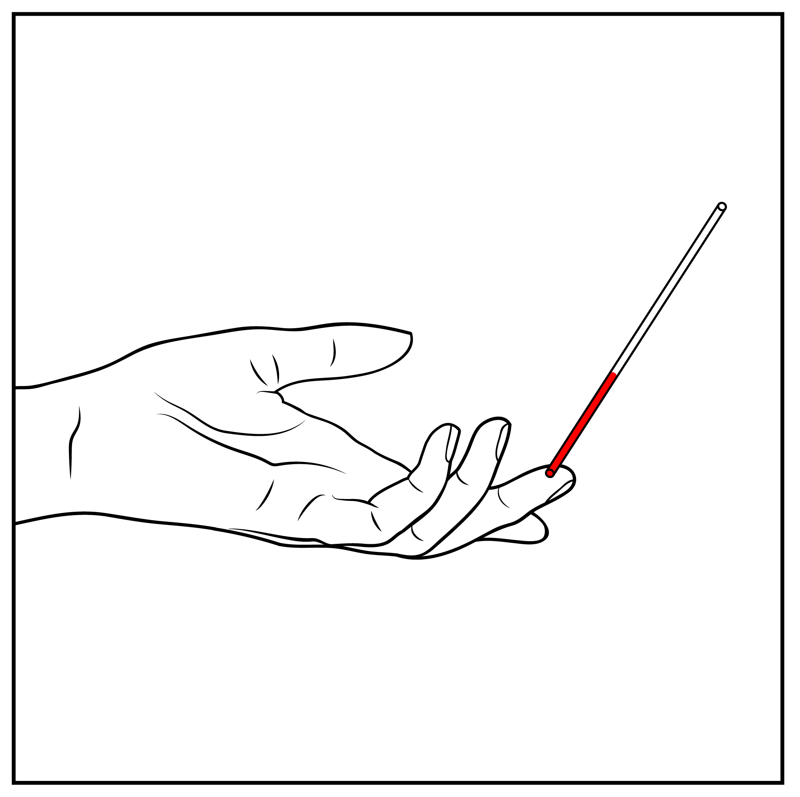
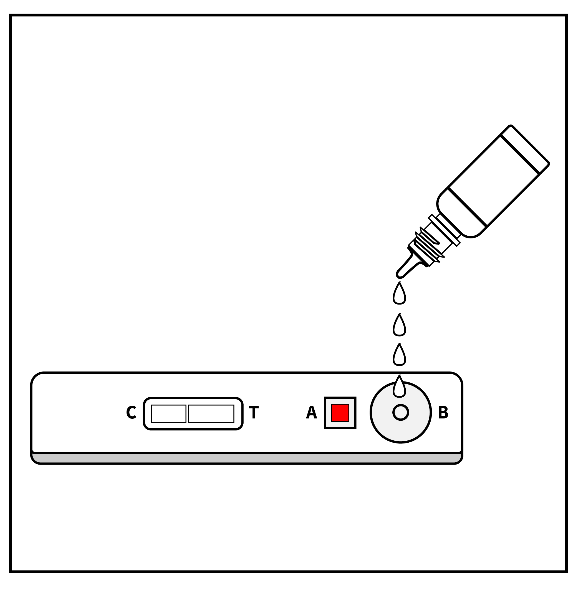

  <form autocomplete="off" novalidate="novalidate" class="or clearfix pages" dir="ltr" id="pregnancy_followup">
<!--This form was created by transforming a OpenRosa-flavored (X)Form using an XSL stylesheet created by Enketo LLC.--><section class="form-logo"> </section><h3 dir="auto" id="form-title">Suivi grossesse</h3><select id="form-languages" data-default-lang="bm"><option value="bm">bm</option> <option value="en">en</option> <option value="fr">fr</option> </select>
  
  
    <section class="or-group or-branch pre-init or-appearance-field-list " name="/pregnancy_followup/inputs" data-relevant="./source = 'user'"><h4><span lang="bm" class="question-label active" data-itext-id="/pregnancy_followup/inputs:label">-</span><span lang="en" class="question-label " data-itext-id="/pregnancy_followup/inputs:label">Patient</span><span lang="fr" class="question-label " data-itext-id="/pregnancy_followup/inputs:label">Patient</span></h4><label class="question non-select or-appearance-hidden "><span lang="bm" class="question-label active" data-itext-id="/pregnancy_followup/inputs/source:label">-</span><span lang="en" class="question-label " data-itext-id="/pregnancy_followup/inputs/source:label">Source</span><span lang="fr" class="question-label " data-itext-id="/pregnancy_followup/inputs/source:label">Source</span><input type="text" name="/pregnancy_followup/inputs/source" data-type-xml="string"/></label><label class="question non-select or-appearance-hidden "><span lang="bm" class="question-label active" data-itext-id="/pregnancy_followup/inputs/source_id:label">-</span><span lang="en" class="question-label " data-itext-id="/pregnancy_followup/inputs/source_id:label">Source ID</span><span lang="fr" class="question-label " data-itext-id="/pregnancy_followup/inputs/source_id:label">Source de l'ID</span><input type="text" name="/pregnancy_followup/inputs/source_id" data-type-xml="string"/></label><label class="question non-select or-appearance-hidden "><span lang="bm" class="question-label active" data-itext-id="/pregnancy_followup/inputs/t_follow_up_count:label">-</span><span lang="en" class="question-label " data-itext-id="/pregnancy_followup/inputs/t_follow_up_count:label">Follow up count</span><span lang="fr" class="question-label " data-itext-id="/pregnancy_followup/inputs/t_follow_up_count:label">Nombre de suivi</span><input type="text" name="/pregnancy_followup/inputs/t_follow_up_count" data-type-xml="string"/></label><label class="question non-select or-appearance-hidden "><span lang="bm" class="question-label active" data-itext-id="/pregnancy_followup/inputs/t_lmp_date:label">-</span><span lang="en" class="question-label " data-itext-id="/pregnancy_followup/inputs/t_lmp_date:label">LMP</span><span lang="fr" class="question-label " data-itext-id="/pregnancy_followup/inputs/t_lmp_date:label">Date des dernières régles</span><input type="text" name="/pregnancy_followup/inputs/t_lmp_date" data-type-xml="string"/></label><label class="question non-select or-appearance-hidden "><span lang="bm" class="question-label active" data-itext-id="/pregnancy_followup/inputs/t_n_previous_pregnancy:label">-</span><span lang="en" class="question-label " data-itext-id="/pregnancy_followup/inputs/t_n_previous_pregnancy:label">Number of previous successful pregnacies</span><span lang="fr" class="question-label " data-itext-id="/pregnancy_followup/inputs/t_n_previous_pregnancy:label">Nombre de grossesses anterieurs reussies</span><input type="text" name="/pregnancy_followup/inputs/t_n_previous_pregnancy" data-type-xml="string"/></label><label class="question non-select or-appearance-hidden "><span lang="bm" class="question-label active" data-itext-id="/pregnancy_followup/inputs/t_last_delivery_type:label">-</span><span lang="en" class="question-label " data-itext-id="/pregnancy_followup/inputs/t_last_delivery_type:label">Type of delivery for last pregnancy</span><span lang="fr" class="question-label " data-itext-id="/pregnancy_followup/inputs/t_last_delivery_type:label">Type d'accouchement de la derniere grossesse</span><input type="text" name="/pregnancy_followup/inputs/t_last_delivery_type" data-type-xml="string"/></label><label class="question non-select or-appearance-hidden "><span lang="bm" class="question-label active" data-itext-id="/pregnancy_followup/inputs/t_woman_height:label">-</span><span lang="en" class="question-label " data-itext-id="/pregnancy_followup/inputs/t_woman_height:label">Pregnant woman height</span><span lang="fr" class="question-label " data-itext-id="/pregnancy_followup/inputs/t_woman_height:label">Taille de la femme enceinte</span><input type="text" name="/pregnancy_followup/inputs/t_woman_height" data-type-xml="string"/></label><label class="question non-select or-appearance-hidden "><span lang="bm" class="question-label active" data-itext-id="/pregnancy_followup/inputs/t_woman_weight:label">-</span><span lang="en" class="question-label " data-itext-id="/pregnancy_followup/inputs/t_woman_weight:label">Pregnant woman weight</span><span lang="fr" class="question-label " data-itext-id="/pregnancy_followup/inputs/t_woman_weight:label">Poids de la femme enceinte</span><input type="text" name="/pregnancy_followup/inputs/t_woman_weight" data-type-xml="string"/></label><label class="question non-select or-appearance-hidden "><input type="text" name="/pregnancy_followup/inputs/t_td_provided" data-type-xml="string"/></label><section class="or-group " name="/pregnancy_followup/inputs/contact"><h4><span lang="bm" class="question-label active" data-itext-id="/pregnancy_followup/inputs/contact:label">-</span><span lang="en" class="question-label " data-itext-id="/pregnancy_followup/inputs/contact:label">Contact</span><span lang="fr" class="question-label " data-itext-id="/pregnancy_followup/inputs/contact:label">Contact</span></h4><label class="question non-select or-appearance-db-object "><span lang="bm" class="question-label active" data-itext-id="/pregnancy_followup/inputs/contact/_id:label">-</span><span lang="en" class="question-label " data-itext-id="/pregnancy_followup/inputs/contact/_id:label">What is the patient name?</span><span lang="fr" class="question-label " data-itext-id="/pregnancy_followup/inputs/contact/_id:label">Quel est le nom du patient?</span><span lang="bm" class="or-hint active" data-itext-id="/pregnancy_followup/inputs/contact/_id:hint">-</span><span lang="en" class="or-hint " data-itext-id="/pregnancy_followup/inputs/contact/_id:hint">select a person from the list</span><span lang="fr" class="or-hint " data-itext-id="/pregnancy_followup/inputs/contact/_id:hint">Sélectionner une personne dans la liste</span><input type="text" name="/pregnancy_followup/inputs/contact/_id" data-constraint=" /pregnancy_followup/patient_age_in_years  &lt; 5" data-type-xml="person"/><span lang="bm" class="or-constraint-msg active" data-itext-id="/pregnancy_followup/inputs/contact/_id:jr:constraintMsg">Banabagatɔ si mankan ka caya ni san duru (5) ye</span><span lang="en" class="or-constraint-msg " data-itext-id="/pregnancy_followup/inputs/contact/_id:jr:constraintMsg">Patient must be less that 5 years old</span><span lang="fr" class="or-constraint-msg " data-itext-id="/pregnancy_followup/inputs/contact/_id:jr:constraintMsg">L'âge du patient doit être inférieur à 5 ans</span></label><label class="question non-select or-appearance-hidden "><span lang="bm" class="question-label active" data-itext-id="/pregnancy_followup/inputs/contact/name:label">-</span><span lang="en" class="question-label " data-itext-id="/pregnancy_followup/inputs/contact/name:label">Name</span><span lang="fr" class="question-label " data-itext-id="/pregnancy_followup/inputs/contact/name:label">Nom</span><input type="text" name="/pregnancy_followup/inputs/contact/name" data-type-xml="string"/></label><label class="question non-select or-appearance-hidden "><span lang="bm" class="question-label active" data-itext-id="/pregnancy_followup/inputs/contact/date_of_birth:label">-</span><span lang="en" class="question-label " data-itext-id="/pregnancy_followup/inputs/contact/date_of_birth:label">Date of birth</span><span lang="fr" class="question-label " data-itext-id="/pregnancy_followup/inputs/contact/date_of_birth:label">Date de naissance</span><input type="text" name="/pregnancy_followup/inputs/contact/date_of_birth" data-type-xml="string"/></label><label class="question non-select or-appearance-hidden "><span lang="bm" class="question-label active" data-itext-id="/pregnancy_followup/inputs/contact/sex:label">-</span><span lang="en" class="question-label " data-itext-id="/pregnancy_followup/inputs/contact/sex:label">Sex</span><span lang="fr" class="question-label " data-itext-id="/pregnancy_followup/inputs/contact/sex:label">Sexe</span><input type="text" name="/pregnancy_followup/inputs/contact/sex" data-type-xml="string"/></label>
            </section><!--end of group -->
            </section><!--end of group -->
    <section class="or-group-data or-appearance-field-list " name="/pregnancy_followup/g_task"><fieldset class="question simple-select "><fieldset><legend><span lang="bm" class="question-label active" data-itext-id="/pregnancy_followup/g_task/task_to_perform:label">-</span><span lang="en" class="question-label " data-itext-id="/pregnancy_followup/g_task/task_to_perform:label">What do you want to do?</span><span lang="fr" class="question-label " data-itext-id="/pregnancy_followup/g_task/task_to_perform:label">Que voulez-vous faire?</span><span class="required">*</span>
                    </legend><div class="option-wrapper"><label class=""><input type="radio" name="/pregnancy_followup/g_task/task_to_perform" data-name="/pregnancy_followup/g_task/task_to_perform" value="reference_followup" data-required="true()" data-type-xml="select1"/><span lang="bm" class="option-label active" data-itext-id="/pregnancy_followup/g_task/task_to_perform/reference_followup:label">-</span><span lang="en" class="option-label " data-itext-id="/pregnancy_followup/g_task/task_to_perform/reference_followup:label">Followup <span class="or-output" data-value=" /pregnancy_followup/patient_name "> </span> pregnant</span><span lang="fr" class="option-label " data-itext-id="/pregnancy_followup/g_task/task_to_perform/reference_followup:label">Suivi <span class="or-output" data-value=" /pregnancy_followup/patient_name "> </span> enceinte</span></label><label class=""><input type="radio" name="/pregnancy_followup/g_task/task_to_perform" data-name="/pregnancy_followup/g_task/task_to_perform" value="close_followup" data-required="true()" data-type-xml="select1"/><span lang="bm" class="option-label active" data-itext-id="/pregnancy_followup/g_task/task_to_perform/close_followup:label">-</span><span lang="en" class="option-label " data-itext-id="/pregnancy_followup/g_task/task_to_perform/close_followup:label">Close followup</span><span lang="fr" class="option-label " data-itext-id="/pregnancy_followup/g_task/task_to_perform/close_followup:label">Arrêt du suivi</span></label></div></fieldset><span lang="bm" class="or-required-msg active" data-itext-id="/pregnancy_followup/g_task/task_to_perform:jr:requiredMsg">-</span><span lang="en" class="or-required-msg " data-itext-id="/pregnancy_followup/g_task/task_to_perform:jr:requiredMsg">This field is required</span><span lang="fr" class="or-required-msg " data-itext-id="/pregnancy_followup/g_task/task_to_perform:jr:requiredMsg">Ce champ est obligatoire</span></fieldset>
            </section><!--end of group -->
    <section class="or-group-data or-branch pre-init " name="/pregnancy_followup/g_followup_realization" data-relevant=" /pregnancy_followup/g_task/task_to_perform ='reference_followup'"><section class="or-group or-appearance-field-list " name="/pregnancy_followup/g_followup_realization/g_realisation"><h4><span lang="bm" class="question-label active" data-itext-id="/pregnancy_followup/g_followup_realization/g_realisation:label">-</span><span lang="en" class="question-label " data-itext-id="/pregnancy_followup/g_followup_realization/g_realisation:label">Realization date</span><span lang="fr" class="question-label " data-itext-id="/pregnancy_followup/g_followup_realization/g_realisation:label">Date de réalisation</span></h4><fieldset class="question simple-select "><fieldset><legend><span lang="bm" class="question-label active" data-itext-id="/pregnancy_followup/g_followup_realization/g_realisation/followup_done_today:label">-</span><span lang="en" class="question-label " data-itext-id="/pregnancy_followup/g_followup_realization/g_realisation/followup_done_today:label">Was the follow-up done today?</span><span lang="fr" class="question-label " data-itext-id="/pregnancy_followup/g_followup_realization/g_realisation/followup_done_today:label">Ce suivi a t-il été fait aujourd'hui?</span><span class="required">*</span>
                    </legend><div class="option-wrapper"><label class=""><input type="radio" name="/pregnancy_followup/g_followup_realization/g_realisation/followup_done_today" data-name="/pregnancy_followup/g_followup_realization/g_realisation/followup_done_today" value="yes" data-required="true()" data-type-xml="select1"/><span lang="bm" class="option-label active" data-itext-id="/pregnancy_followup/g_followup_realization/g_realisation/followup_done_today/yes:label">-</span><span lang="en" class="option-label " data-itext-id="/pregnancy_followup/g_followup_realization/g_realisation/followup_done_today/yes:label">Yes</span><span lang="fr" class="option-label " data-itext-id="/pregnancy_followup/g_followup_realization/g_realisation/followup_done_today/yes:label">Oui</span></label><label class=""><input type="radio" name="/pregnancy_followup/g_followup_realization/g_realisation/followup_done_today" data-name="/pregnancy_followup/g_followup_realization/g_realisation/followup_done_today" value="no" data-required="true()" data-type-xml="select1"/><span lang="bm" class="option-label active" data-itext-id="/pregnancy_followup/g_followup_realization/g_realisation/followup_done_today/no:label">-</span><span lang="en" class="option-label " data-itext-id="/pregnancy_followup/g_followup_realization/g_realisation/followup_done_today/no:label">No</span><span lang="fr" class="option-label " data-itext-id="/pregnancy_followup/g_followup_realization/g_realisation/followup_done_today/no:label">Non</span></label></div></fieldset><span lang="bm" class="or-required-msg active" data-itext-id="/pregnancy_followup/g_followup_realization/g_realisation/followup_done_today:jr:requiredMsg">-</span><span lang="en" class="or-required-msg " data-itext-id="/pregnancy_followup/g_followup_realization/g_realisation/followup_done_today:jr:requiredMsg">This field is required</span><span lang="fr" class="or-required-msg " data-itext-id="/pregnancy_followup/g_followup_realization/g_realisation/followup_done_today:jr:requiredMsg">Ce champ est obligatoire</span></fieldset><label class="question or-branch pre-init non-select "><span lang="bm" class="question-label active" data-itext-id="/pregnancy_followup/g_followup_realization/g_realisation/followup_date:label">-</span><span lang="en" class="question-label " data-itext-id="/pregnancy_followup/g_followup_realization/g_realisation/followup_date:label">Enter the date the follow-up</span><span lang="fr" class="question-label " data-itext-id="/pregnancy_followup/g_followup_realization/g_realisation/followup_date:label">Entrez la date où le suivi a été fait</span><span class="required">*</span><input type="date" name="/pregnancy_followup/g_followup_realization/g_realisation/followup_date" data-required="true()" data-constraint=". &lt;= today()-1" data-relevant=" /pregnancy_followup/g_followup_realization/g_realisation/followup_done_today ='no'" data-type-xml="date"/><span lang="bm" class="or-constraint-msg active" data-itext-id="/pregnancy_followup/g_followup_realization/g_realisation/followup_date:jr:constraintMsg">-</span><span lang="en" class="or-constraint-msg " data-itext-id="/pregnancy_followup/g_followup_realization/g_realisation/followup_date:jr:constraintMsg">The date must not be today or in the future</span><span lang="fr" class="or-constraint-msg " data-itext-id="/pregnancy_followup/g_followup_realization/g_realisation/followup_date:jr:constraintMsg">La date ne doit pas être aujourd'hui ou dans le futur</span><span lang="bm" class="or-required-msg active" data-itext-id="/pregnancy_followup/g_followup_realization/g_realisation/followup_date:jr:requiredMsg">-</span><span lang="en" class="or-required-msg " data-itext-id="/pregnancy_followup/g_followup_realization/g_realisation/followup_date:jr:requiredMsg">This field is required</span><span lang="fr" class="or-required-msg " data-itext-id="/pregnancy_followup/g_followup_realization/g_realisation/followup_date:jr:requiredMsg">Ce champ est obligatoire</span></label><fieldset class="question simple-select or-branch pre-init "><fieldset><legend><span lang="bm" class="question-label active" data-itext-id="/pregnancy_followup/g_followup_realization/g_realisation/not_done_today:label">-</span><span lang="en" class="question-label " data-itext-id="/pregnancy_followup/g_followup_realization/g_realisation/not_done_today:label">Why was the follow-up not done today?</span><span lang="fr" class="question-label " data-itext-id="/pregnancy_followup/g_followup_realization/g_realisation/not_done_today:label">Pourquoi le suivi n'a pas été fait aujourd'hui?</span><span class="required">*</span>
                    </legend><div class="option-wrapper"><label class=""><input type="radio" name="/pregnancy_followup/g_followup_realization/g_realisation/not_done_today" data-name="/pregnancy_followup/g_followup_realization/g_realisation/not_done_today" value="phone_discharged" data-required="true()" data-relevant=" /pregnancy_followup/g_followup_realization/g_realisation/followup_done_today ='no'" data-type-xml="select1"/><span lang="bm" class="option-label active" data-itext-id="/pregnancy_followup/g_followup_realization/g_realisation/not_done_today/phone_discharged:label">-</span><span lang="en" class="option-label " data-itext-id="/pregnancy_followup/g_followup_realization/g_realisation/not_done_today/phone_discharged:label">Phone discharged/Broken</span><span lang="fr" class="option-label " data-itext-id="/pregnancy_followup/g_followup_realization/g_realisation/not_done_today/phone_discharged:label">Téléphone Déchargé/Cassé</span></label><label class=""><input type="radio" name="/pregnancy_followup/g_followup_realization/g_realisation/not_done_today" data-name="/pregnancy_followup/g_followup_realization/g_realisation/not_done_today" value="phone_lost" data-required="true()" data-relevant=" /pregnancy_followup/g_followup_realization/g_realisation/followup_done_today ='no'" data-type-xml="select1"/><span lang="bm" class="option-label active" data-itext-id="/pregnancy_followup/g_followup_realization/g_realisation/not_done_today/phone_lost:label">-</span><span lang="en" class="option-label " data-itext-id="/pregnancy_followup/g_followup_realization/g_realisation/not_done_today/phone_lost:label">Phone lost</span><span lang="fr" class="option-label " data-itext-id="/pregnancy_followup/g_followup_realization/g_realisation/not_done_today/phone_lost:label">Téléphone Perdu</span></label><label class=""><input type="radio" name="/pregnancy_followup/g_followup_realization/g_realisation/not_done_today" data-name="/pregnancy_followup/g_followup_realization/g_realisation/not_done_today" value="other" data-required="true()" data-relevant=" /pregnancy_followup/g_followup_realization/g_realisation/followup_done_today ='no'" data-type-xml="select1"/><span lang="bm" class="option-label active" data-itext-id="/pregnancy_followup/g_followup_realization/g_realisation/not_done_today/other:label">-</span><span lang="en" class="option-label " data-itext-id="/pregnancy_followup/g_followup_realization/g_realisation/not_done_today/other:label">Other</span><span lang="fr" class="option-label " data-itext-id="/pregnancy_followup/g_followup_realization/g_realisation/not_done_today/other:label">Autre</span></label></div></fieldset><span lang="bm" class="or-required-msg active" data-itext-id="/pregnancy_followup/g_followup_realization/g_realisation/not_done_today:jr:requiredMsg">-</span><span lang="en" class="or-required-msg " data-itext-id="/pregnancy_followup/g_followup_realization/g_realisation/not_done_today:jr:requiredMsg">This field is required</span><span lang="fr" class="or-required-msg " data-itext-id="/pregnancy_followup/g_followup_realization/g_realisation/not_done_today:jr:requiredMsg">Ce champ est obligatoire</span></fieldset><label class="question or-branch pre-init non-select "><span lang="bm" class="question-label active" data-itext-id="/pregnancy_followup/g_followup_realization/g_realisation/other_followup_reason:label">-</span><span lang="en" class="question-label " data-itext-id="/pregnancy_followup/g_followup_realization/g_realisation/other_followup_reason:label">Specify (Other)</span><span lang="fr" class="question-label " data-itext-id="/pregnancy_followup/g_followup_realization/g_realisation/other_followup_reason:label">Précisez (Autre)</span><span class="required">*</span><input type="text" name="/pregnancy_followup/g_followup_realization/g_realisation/other_followup_reason" data-required="true()" data-relevant=" /pregnancy_followup/g_followup_realization/g_realisation/not_done_today ='other'" data-type-xml="string"/><span lang="bm" class="or-required-msg active" data-itext-id="/pregnancy_followup/g_followup_realization/g_realisation/other_followup_reason:jr:requiredMsg">-</span><span lang="en" class="or-required-msg " data-itext-id="/pregnancy_followup/g_followup_realization/g_realisation/other_followup_reason:jr:requiredMsg">This field is required</span><span lang="fr" class="or-required-msg " data-itext-id="/pregnancy_followup/g_followup_realization/g_realisation/other_followup_reason:jr:requiredMsg">Ce champ est obligatoire</span></label>
            </section><!--end of group --><section class="or-group or-appearance-field-list " name="/pregnancy_followup/g_followup_realization/g_patient_availability"><h4><span lang="bm" class="question-label active" data-itext-id="/pregnancy_followup/g_followup_realization/g_patient_availability:label">-</span><span lang="en" class="question-label " data-itext-id="/pregnancy_followup/g_followup_realization/g_patient_availability:label">Availability of <span class="or-output" data-value=" /pregnancy_followup/patient_name "> </span></span><span lang="fr" class="question-label " data-itext-id="/pregnancy_followup/g_followup_realization/g_patient_availability:label">Disponibilité de <span class="or-output" data-value=" /pregnancy_followup/patient_name "> </span></span></h4><fieldset class="question simple-select "><fieldset><legend><span lang="bm" class="question-label active" data-itext-id="/pregnancy_followup/g_followup_realization/g_patient_availability/has_woman_been_found:label">-</span><span lang="en" class="question-label " data-itext-id="/pregnancy_followup/g_followup_realization/g_patient_availability/has_woman_been_found:label">Has <span class="or-output" data-value=" /pregnancy_followup/patient_name "> </span> been found?</span><span lang="fr" class="question-label " data-itext-id="/pregnancy_followup/g_followup_realization/g_patient_availability/has_woman_been_found:label"><span class="or-output" data-value=" /pregnancy_followup/patient_name "> </span> a t-elle été retrouvée?</span><span class="required">*</span>
                    </legend><div class="option-wrapper"><label class=""><input type="radio" name="/pregnancy_followup/g_followup_realization/g_patient_availability/has_woman_been_found" data-name="/pregnancy_followup/g_followup_realization/g_patient_availability/has_woman_been_found" value="yes" data-required="true()" data-type-xml="select1"/><span lang="bm" class="option-label active" data-itext-id="/pregnancy_followup/g_followup_realization/g_patient_availability/has_woman_been_found/yes:label">-</span><span lang="en" class="option-label " data-itext-id="/pregnancy_followup/g_followup_realization/g_patient_availability/has_woman_been_found/yes:label">Yes</span><span lang="fr" class="option-label " data-itext-id="/pregnancy_followup/g_followup_realization/g_patient_availability/has_woman_been_found/yes:label">Oui</span></label><label class=""><input type="radio" name="/pregnancy_followup/g_followup_realization/g_patient_availability/has_woman_been_found" data-name="/pregnancy_followup/g_followup_realization/g_patient_availability/has_woman_been_found" value="no" data-required="true()" data-type-xml="select1"/><span lang="bm" class="option-label active" data-itext-id="/pregnancy_followup/g_followup_realization/g_patient_availability/has_woman_been_found/no:label">-</span><span lang="en" class="option-label " data-itext-id="/pregnancy_followup/g_followup_realization/g_patient_availability/has_woman_been_found/no:label">No</span><span lang="fr" class="option-label " data-itext-id="/pregnancy_followup/g_followup_realization/g_patient_availability/has_woman_been_found/no:label">Non</span></label></div></fieldset><span lang="bm" class="or-required-msg active" data-itext-id="/pregnancy_followup/g_followup_realization/g_patient_availability/has_woman_been_found:jr:requiredMsg">-</span><span lang="en" class="or-required-msg " data-itext-id="/pregnancy_followup/g_followup_realization/g_patient_availability/has_woman_been_found:jr:requiredMsg">This field is required</span><span lang="fr" class="or-required-msg " data-itext-id="/pregnancy_followup/g_followup_realization/g_patient_availability/has_woman_been_found:jr:requiredMsg">Ce champ est obligatoire</span></fieldset><fieldset class="question simple-select or-branch pre-init "><fieldset><legend><span lang="bm" class="question-label active" data-itext-id="/pregnancy_followup/g_followup_realization/g_patient_availability/how_patient_found:label">-</span><span lang="en" class="question-label " data-itext-id="/pregnancy_followup/g_followup_realization/g_patient_availability/how_patient_found:label">How was <span class="or-output" data-value=" /pregnancy_followup/patient_name "> </span> found?</span><span lang="fr" class="question-label " data-itext-id="/pregnancy_followup/g_followup_realization/g_patient_availability/how_patient_found:label">Comment <span class="or-output" data-value=" /pregnancy_followup/patient_name "> </span> a t-elle été retrouvée?</span><span class="required">*</span>
                    </legend><div class="option-wrapper"><label class=""><input type="radio" name="/pregnancy_followup/g_followup_realization/g_patient_availability/how_patient_found" data-name="/pregnancy_followup/g_followup_realization/g_patient_availability/how_patient_found" value="during_home_visit" data-required="true()" data-relevant=" /pregnancy_followup/g_followup_realization/g_patient_availability/has_woman_been_found ='yes'" data-type-xml="select1"/><span lang="bm" class="option-label active" data-itext-id="/pregnancy_followup/g_followup_realization/g_patient_availability/how_patient_found/during_home_visit:label">-</span><span lang="en" class="option-label " data-itext-id="/pregnancy_followup/g_followup_realization/g_patient_availability/how_patient_found/during_home_visit:label">During the home visit</span><span lang="fr" class="option-label " data-itext-id="/pregnancy_followup/g_followup_realization/g_patient_availability/how_patient_found/during_home_visit:label">Au cours de la visite à domicile</span></label><label class=""><input type="radio" name="/pregnancy_followup/g_followup_realization/g_patient_availability/how_patient_found" data-name="/pregnancy_followup/g_followup_realization/g_patient_availability/how_patient_found" value="patient_to_chw" data-required="true()" data-relevant=" /pregnancy_followup/g_followup_realization/g_patient_availability/has_woman_been_found ='yes'" data-type-xml="select1"/><span lang="bm" class="option-label active" data-itext-id="/pregnancy_followup/g_followup_realization/g_patient_availability/how_patient_found/patient_to_chw:label">-</span><span lang="en" class="option-label " data-itext-id="/pregnancy_followup/g_followup_realization/g_patient_availability/how_patient_found/patient_to_chw:label"><span class="or-output" data-value=" /pregnancy_followup/patient_name "> </span> went to the CHW</span><span lang="fr" class="option-label " data-itext-id="/pregnancy_followup/g_followup_realization/g_patient_availability/how_patient_found/patient_to_chw:label"><span class="or-output" data-value=" /pregnancy_followup/patient_name "> </span> s'est rendue chez l'ASC</span></label><label class=""><input type="radio" name="/pregnancy_followup/g_followup_realization/g_patient_availability/how_patient_found" data-name="/pregnancy_followup/g_followup_realization/g_patient_availability/how_patient_found" value="other" data-required="true()" data-relevant=" /pregnancy_followup/g_followup_realization/g_patient_availability/has_woman_been_found ='yes'" data-type-xml="select1"/><span lang="bm" class="option-label active" data-itext-id="/pregnancy_followup/g_followup_realization/g_patient_availability/how_patient_found/other:label">-</span><span lang="en" class="option-label " data-itext-id="/pregnancy_followup/g_followup_realization/g_patient_availability/how_patient_found/other:label">Other</span><span lang="fr" class="option-label " data-itext-id="/pregnancy_followup/g_followup_realization/g_patient_availability/how_patient_found/other:label">Autre</span></label></div></fieldset><span lang="bm" class="or-required-msg active" data-itext-id="/pregnancy_followup/g_followup_realization/g_patient_availability/how_patient_found:jr:requiredMsg">-</span><span lang="en" class="or-required-msg " data-itext-id="/pregnancy_followup/g_followup_realization/g_patient_availability/how_patient_found:jr:requiredMsg">This field is required</span><span lang="fr" class="or-required-msg " data-itext-id="/pregnancy_followup/g_followup_realization/g_patient_availability/how_patient_found:jr:requiredMsg">Ce champ est obligatoire</span></fieldset><label class="question or-branch pre-init non-select "><span lang="bm" class="question-label active" data-itext-id="/pregnancy_followup/g_followup_realization/g_patient_availability/other_patient_found_reason:label">-</span><span lang="en" class="question-label " data-itext-id="/pregnancy_followup/g_followup_realization/g_patient_availability/other_patient_found_reason:label">Specify (Other)</span><span lang="fr" class="question-label " data-itext-id="/pregnancy_followup/g_followup_realization/g_patient_availability/other_patient_found_reason:label">Précisez (Autre)</span><span class="required">*</span><input type="text" name="/pregnancy_followup/g_followup_realization/g_patient_availability/other_patient_found_reason" data-required="true()" data-relevant=" /pregnancy_followup/g_followup_realization/g_patient_availability/how_patient_found ='other'" data-type-xml="string"/><span lang="bm" class="or-required-msg active" data-itext-id="/pregnancy_followup/g_followup_realization/g_patient_availability/other_patient_found_reason:jr:requiredMsg">-</span><span lang="en" class="or-required-msg " data-itext-id="/pregnancy_followup/g_followup_realization/g_patient_availability/other_patient_found_reason:jr:requiredMsg">This field is required</span><span lang="fr" class="or-required-msg " data-itext-id="/pregnancy_followup/g_followup_realization/g_patient_availability/other_patient_found_reason:jr:requiredMsg">Ce champ est obligatoire</span></label>
            </section><!--end of group --><section class="or-group or-appearance-field-list " name="/pregnancy_followup/g_followup_realization/g_danger_signs"><h4><span lang="bm" class="question-label active" data-itext-id="/pregnancy_followup/g_followup_realization/g_danger_signs:label">-</span><span lang="en" class="question-label " data-itext-id="/pregnancy_followup/g_followup_realization/g_danger_signs:label">Danger signs</span><span lang="fr" class="question-label " data-itext-id="/pregnancy_followup/g_followup_realization/g_danger_signs:label">Signe de danger</span></h4><label class="question note or-branch pre-init non-select "><span lang="bm" class="question-label active" data-itext-id="/pregnancy_followup/g_followup_realization/g_danger_signs/n_danger_sign:label">-</span><span lang="en" class="question-label " data-itext-id="/pregnancy_followup/g_followup_realization/g_danger_signs/n_danger_sign:label">Does <span class="or-output" data-value=" /pregnancy_followup/patient_name "> </span> pregnant have any of the following danger signs?</span><span lang="fr" class="question-label " data-itext-id="/pregnancy_followup/g_followup_realization/g_danger_signs/n_danger_sign:label"><span class="or-output" data-value=" /pregnancy_followup/patient_name "> </span> enceinte a t-elle les signes de danger suivants?</span><input type="text" name="/pregnancy_followup/g_followup_realization/g_danger_signs/n_danger_sign" data-required="true()" data-relevant=" /pregnancy_followup/g_followup_realization/g_patient_availability/has_woman_been_found ='yes'" data-type-xml="string" readonly="readonly"/></label><fieldset class="question simple-select "><fieldset><legend><span lang="bm" class="question-label active" data-itext-id="/pregnancy_followup/g_followup_realization/g_danger_signs/danger_sign_lethargy_unconsciousness:label">-</span><span lang="en" class="question-label " data-itext-id="/pregnancy_followup/g_followup_realization/g_danger_signs/danger_sign_lethargy_unconsciousness:label">Lethargy or unconscious</span><span lang="fr" class="question-label " data-itext-id="/pregnancy_followup/g_followup_realization/g_danger_signs/danger_sign_lethargy_unconsciousness:label">Léthargie ou inconscient</span><span class="required">*</span>
                    </legend><div class="option-wrapper"><label class=""><input type="radio" name="/pregnancy_followup/g_followup_realization/g_danger_signs/danger_sign_lethargy_unconsciousness" data-name="/pregnancy_followup/g_followup_realization/g_danger_signs/danger_sign_lethargy_unconsciousness" value="yes" data-required="true()" data-type-xml="select1"/><span lang="bm" class="option-label active" data-itext-id="/pregnancy_followup/g_followup_realization/g_danger_signs/danger_sign_lethargy_unconsciousness/yes:label">-</span><span lang="en" class="option-label " data-itext-id="/pregnancy_followup/g_followup_realization/g_danger_signs/danger_sign_lethargy_unconsciousness/yes:label">Yes</span><span lang="fr" class="option-label " data-itext-id="/pregnancy_followup/g_followup_realization/g_danger_signs/danger_sign_lethargy_unconsciousness/yes:label">Oui</span></label><label class=""><input type="radio" name="/pregnancy_followup/g_followup_realization/g_danger_signs/danger_sign_lethargy_unconsciousness" data-name="/pregnancy_followup/g_followup_realization/g_danger_signs/danger_sign_lethargy_unconsciousness" value="no" data-required="true()" data-type-xml="select1"/><span lang="bm" class="option-label active" data-itext-id="/pregnancy_followup/g_followup_realization/g_danger_signs/danger_sign_lethargy_unconsciousness/no:label">-</span><span lang="en" class="option-label " data-itext-id="/pregnancy_followup/g_followup_realization/g_danger_signs/danger_sign_lethargy_unconsciousness/no:label">No</span><span lang="fr" class="option-label " data-itext-id="/pregnancy_followup/g_followup_realization/g_danger_signs/danger_sign_lethargy_unconsciousness/no:label">Non</span></label></div></fieldset><span lang="bm" class="or-required-msg active" data-itext-id="/pregnancy_followup/g_followup_realization/g_danger_signs/danger_sign_lethargy_unconsciousness:jr:requiredMsg">-</span><span lang="en" class="or-required-msg " data-itext-id="/pregnancy_followup/g_followup_realization/g_danger_signs/danger_sign_lethargy_unconsciousness:jr:requiredMsg">This field is required</span><span lang="fr" class="or-required-msg " data-itext-id="/pregnancy_followup/g_followup_realization/g_danger_signs/danger_sign_lethargy_unconsciousness:jr:requiredMsg">Ce champ est obligatoire</span></fieldset><fieldset class="question simple-select "><fieldset><legend><span lang="bm" class="question-label active" data-itext-id="/pregnancy_followup/g_followup_realization/g_danger_signs/danger_sign_seizures:label">-</span><span lang="en" class="question-label " data-itext-id="/pregnancy_followup/g_followup_realization/g_danger_signs/danger_sign_seizures:label">Seizures</span><span lang="fr" class="question-label " data-itext-id="/pregnancy_followup/g_followup_realization/g_danger_signs/danger_sign_seizures:label">Convulsions</span><span class="required">*</span>
                    </legend><div class="option-wrapper"><label class=""><input type="radio" name="/pregnancy_followup/g_followup_realization/g_danger_signs/danger_sign_seizures" data-name="/pregnancy_followup/g_followup_realization/g_danger_signs/danger_sign_seizures" value="yes" data-required="true()" data-type-xml="select1"/><span lang="bm" class="option-label active" data-itext-id="/pregnancy_followup/g_followup_realization/g_danger_signs/danger_sign_seizures/yes:label">-</span><span lang="en" class="option-label " data-itext-id="/pregnancy_followup/g_followup_realization/g_danger_signs/danger_sign_seizures/yes:label">Yes</span><span lang="fr" class="option-label " data-itext-id="/pregnancy_followup/g_followup_realization/g_danger_signs/danger_sign_seizures/yes:label">Oui</span></label><label class=""><input type="radio" name="/pregnancy_followup/g_followup_realization/g_danger_signs/danger_sign_seizures" data-name="/pregnancy_followup/g_followup_realization/g_danger_signs/danger_sign_seizures" value="no" data-required="true()" data-type-xml="select1"/><span lang="bm" class="option-label active" data-itext-id="/pregnancy_followup/g_followup_realization/g_danger_signs/danger_sign_seizures/no:label">-</span><span lang="en" class="option-label " data-itext-id="/pregnancy_followup/g_followup_realization/g_danger_signs/danger_sign_seizures/no:label">No</span><span lang="fr" class="option-label " data-itext-id="/pregnancy_followup/g_followup_realization/g_danger_signs/danger_sign_seizures/no:label">Non</span></label></div></fieldset><span lang="bm" class="or-required-msg active" data-itext-id="/pregnancy_followup/g_followup_realization/g_danger_signs/danger_sign_seizures:jr:requiredMsg">-</span><span lang="en" class="or-required-msg " data-itext-id="/pregnancy_followup/g_followup_realization/g_danger_signs/danger_sign_seizures:jr:requiredMsg">This field is required</span><span lang="fr" class="or-required-msg " data-itext-id="/pregnancy_followup/g_followup_realization/g_danger_signs/danger_sign_seizures:jr:requiredMsg">Ce champ est obligatoire</span></fieldset><fieldset class="question simple-select "><fieldset><legend><span lang="bm" class="question-label active" data-itext-id="/pregnancy_followup/g_followup_realization/g_danger_signs/danger_sign_drinking_eating:label">-</span><span lang="en" class="question-label " data-itext-id="/pregnancy_followup/g_followup_realization/g_danger_signs/danger_sign_drinking_eating:label">Difficulty drinking and eating</span><span lang="fr" class="question-label " data-itext-id="/pregnancy_followup/g_followup_realization/g_danger_signs/danger_sign_drinking_eating:label">Difficulté de boire et de s'alimenter</span><span class="required">*</span>
                    </legend><div class="option-wrapper"><label class=""><input type="radio" name="/pregnancy_followup/g_followup_realization/g_danger_signs/danger_sign_drinking_eating" data-name="/pregnancy_followup/g_followup_realization/g_danger_signs/danger_sign_drinking_eating" value="yes" data-required="true()" data-type-xml="select1"/><span lang="bm" class="option-label active" data-itext-id="/pregnancy_followup/g_followup_realization/g_danger_signs/danger_sign_drinking_eating/yes:label">-</span><span lang="en" class="option-label " data-itext-id="/pregnancy_followup/g_followup_realization/g_danger_signs/danger_sign_drinking_eating/yes:label">Yes</span><span lang="fr" class="option-label " data-itext-id="/pregnancy_followup/g_followup_realization/g_danger_signs/danger_sign_drinking_eating/yes:label">Oui</span></label><label class=""><input type="radio" name="/pregnancy_followup/g_followup_realization/g_danger_signs/danger_sign_drinking_eating" data-name="/pregnancy_followup/g_followup_realization/g_danger_signs/danger_sign_drinking_eating" value="no" data-required="true()" data-type-xml="select1"/><span lang="bm" class="option-label active" data-itext-id="/pregnancy_followup/g_followup_realization/g_danger_signs/danger_sign_drinking_eating/no:label">-</span><span lang="en" class="option-label " data-itext-id="/pregnancy_followup/g_followup_realization/g_danger_signs/danger_sign_drinking_eating/no:label">No</span><span lang="fr" class="option-label " data-itext-id="/pregnancy_followup/g_followup_realization/g_danger_signs/danger_sign_drinking_eating/no:label">Non</span></label></div></fieldset><span lang="bm" class="or-required-msg active" data-itext-id="/pregnancy_followup/g_followup_realization/g_danger_signs/danger_sign_drinking_eating:jr:requiredMsg">-</span><span lang="en" class="or-required-msg " data-itext-id="/pregnancy_followup/g_followup_realization/g_danger_signs/danger_sign_drinking_eating:jr:requiredMsg">This field is required</span><span lang="fr" class="or-required-msg " data-itext-id="/pregnancy_followup/g_followup_realization/g_danger_signs/danger_sign_drinking_eating:jr:requiredMsg">Ce champ est obligatoire</span></fieldset><fieldset class="question simple-select "><fieldset><legend><span lang="bm" class="question-label active" data-itext-id="/pregnancy_followup/g_followup_realization/g_danger_signs/danger_sign_vomiting:label">-</span><span lang="en" class="question-label " data-itext-id="/pregnancy_followup/g_followup_realization/g_danger_signs/danger_sign_vomiting:label">Vomiting of any food intake</span><span lang="fr" class="question-label " data-itext-id="/pregnancy_followup/g_followup_realization/g_danger_signs/danger_sign_vomiting:label">Vomissement de toute prise alimentaire</span><span class="required">*</span>
                    </legend><div class="option-wrapper"><label class=""><input type="radio" name="/pregnancy_followup/g_followup_realization/g_danger_signs/danger_sign_vomiting" data-name="/pregnancy_followup/g_followup_realization/g_danger_signs/danger_sign_vomiting" value="yes" data-required="true()" data-type-xml="select1"/><span lang="bm" class="option-label active" data-itext-id="/pregnancy_followup/g_followup_realization/g_danger_signs/danger_sign_vomiting/yes:label">-</span><span lang="en" class="option-label " data-itext-id="/pregnancy_followup/g_followup_realization/g_danger_signs/danger_sign_vomiting/yes:label">Yes</span><span lang="fr" class="option-label " data-itext-id="/pregnancy_followup/g_followup_realization/g_danger_signs/danger_sign_vomiting/yes:label">Oui</span></label><label class=""><input type="radio" name="/pregnancy_followup/g_followup_realization/g_danger_signs/danger_sign_vomiting" data-name="/pregnancy_followup/g_followup_realization/g_danger_signs/danger_sign_vomiting" value="no" data-required="true()" data-type-xml="select1"/><span lang="bm" class="option-label active" data-itext-id="/pregnancy_followup/g_followup_realization/g_danger_signs/danger_sign_vomiting/no:label">-</span><span lang="en" class="option-label " data-itext-id="/pregnancy_followup/g_followup_realization/g_danger_signs/danger_sign_vomiting/no:label">No</span><span lang="fr" class="option-label " data-itext-id="/pregnancy_followup/g_followup_realization/g_danger_signs/danger_sign_vomiting/no:label">Non</span></label></div></fieldset><span lang="bm" class="or-required-msg active" data-itext-id="/pregnancy_followup/g_followup_realization/g_danger_signs/danger_sign_vomiting:jr:requiredMsg">-</span><span lang="en" class="or-required-msg " data-itext-id="/pregnancy_followup/g_followup_realization/g_danger_signs/danger_sign_vomiting:jr:requiredMsg">This field is required</span><span lang="fr" class="or-required-msg " data-itext-id="/pregnancy_followup/g_followup_realization/g_danger_signs/danger_sign_vomiting:jr:requiredMsg">Ce champ est obligatoire</span></fieldset><fieldset class="question simple-select "><fieldset><legend><span lang="bm" class="question-label active" data-itext-id="/pregnancy_followup/g_followup_realization/g_danger_signs/danger_sign_stand_sit:label">-</span><span lang="en" class="question-label " data-itext-id="/pregnancy_followup/g_followup_realization/g_danger_signs/danger_sign_stand_sit:label">Inability to sit or stand</span><span lang="fr" class="question-label " data-itext-id="/pregnancy_followup/g_followup_realization/g_danger_signs/danger_sign_stand_sit:label">Incapacité de s'assoir ou de se tenir debout</span><span class="required">*</span>
                    </legend><div class="option-wrapper"><label class=""><input type="radio" name="/pregnancy_followup/g_followup_realization/g_danger_signs/danger_sign_stand_sit" data-name="/pregnancy_followup/g_followup_realization/g_danger_signs/danger_sign_stand_sit" value="yes" data-required="true()" data-type-xml="select1"/><span lang="bm" class="option-label active" data-itext-id="/pregnancy_followup/g_followup_realization/g_danger_signs/danger_sign_stand_sit/yes:label">-</span><span lang="en" class="option-label " data-itext-id="/pregnancy_followup/g_followup_realization/g_danger_signs/danger_sign_stand_sit/yes:label">Yes</span><span lang="fr" class="option-label " data-itext-id="/pregnancy_followup/g_followup_realization/g_danger_signs/danger_sign_stand_sit/yes:label">Oui</span></label><label class=""><input type="radio" name="/pregnancy_followup/g_followup_realization/g_danger_signs/danger_sign_stand_sit" data-name="/pregnancy_followup/g_followup_realization/g_danger_signs/danger_sign_stand_sit" value="no" data-required="true()" data-type-xml="select1"/><span lang="bm" class="option-label active" data-itext-id="/pregnancy_followup/g_followup_realization/g_danger_signs/danger_sign_stand_sit/no:label">-</span><span lang="en" class="option-label " data-itext-id="/pregnancy_followup/g_followup_realization/g_danger_signs/danger_sign_stand_sit/no:label">No</span><span lang="fr" class="option-label " data-itext-id="/pregnancy_followup/g_followup_realization/g_danger_signs/danger_sign_stand_sit/no:label">Non</span></label></div></fieldset><span lang="bm" class="or-required-msg active" data-itext-id="/pregnancy_followup/g_followup_realization/g_danger_signs/danger_sign_stand_sit:jr:requiredMsg">-</span><span lang="en" class="or-required-msg " data-itext-id="/pregnancy_followup/g_followup_realization/g_danger_signs/danger_sign_stand_sit:jr:requiredMsg">This field is required</span><span lang="fr" class="or-required-msg " data-itext-id="/pregnancy_followup/g_followup_realization/g_danger_signs/danger_sign_stand_sit:jr:requiredMsg">Ce champ est obligatoire</span></fieldset><fieldset class="question simple-select "><fieldset><legend><span lang="bm" class="question-label active" data-itext-id="/pregnancy_followup/g_followup_realization/g_danger_signs/danger_sign_pallor:label">-</span><span lang="en" class="question-label " data-itext-id="/pregnancy_followup/g_followup_realization/g_danger_signs/danger_sign_pallor:label">Pronounced conjunctival pallor</span><span lang="fr" class="question-label " data-itext-id="/pregnancy_followup/g_followup_realization/g_danger_signs/danger_sign_pallor:label">Pâleur conjonctivale prononcée</span><span class="required">*</span>
                    </legend><div class="option-wrapper"><label class=""><input type="radio" name="/pregnancy_followup/g_followup_realization/g_danger_signs/danger_sign_pallor" data-name="/pregnancy_followup/g_followup_realization/g_danger_signs/danger_sign_pallor" value="yes" data-required="true()" data-type-xml="select1"/><span lang="bm" class="option-label active" data-itext-id="/pregnancy_followup/g_followup_realization/g_danger_signs/danger_sign_pallor/yes:label">-</span><span lang="en" class="option-label " data-itext-id="/pregnancy_followup/g_followup_realization/g_danger_signs/danger_sign_pallor/yes:label">Yes</span><span lang="fr" class="option-label " data-itext-id="/pregnancy_followup/g_followup_realization/g_danger_signs/danger_sign_pallor/yes:label">Oui</span></label><label class=""><input type="radio" name="/pregnancy_followup/g_followup_realization/g_danger_signs/danger_sign_pallor" data-name="/pregnancy_followup/g_followup_realization/g_danger_signs/danger_sign_pallor" value="no" data-required="true()" data-type-xml="select1"/><span lang="bm" class="option-label active" data-itext-id="/pregnancy_followup/g_followup_realization/g_danger_signs/danger_sign_pallor/no:label">-</span><span lang="en" class="option-label " data-itext-id="/pregnancy_followup/g_followup_realization/g_danger_signs/danger_sign_pallor/no:label">No</span><span lang="fr" class="option-label " data-itext-id="/pregnancy_followup/g_followup_realization/g_danger_signs/danger_sign_pallor/no:label">Non</span></label></div></fieldset><span lang="bm" class="or-required-msg active" data-itext-id="/pregnancy_followup/g_followup_realization/g_danger_signs/danger_sign_pallor:jr:requiredMsg">-</span><span lang="en" class="or-required-msg " data-itext-id="/pregnancy_followup/g_followup_realization/g_danger_signs/danger_sign_pallor:jr:requiredMsg">This field is required</span><span lang="fr" class="or-required-msg " data-itext-id="/pregnancy_followup/g_followup_realization/g_danger_signs/danger_sign_pallor:jr:requiredMsg">Ce champ est obligatoire</span></fieldset><fieldset class="question simple-select "><fieldset><legend><span lang="bm" class="question-label active" data-itext-id="/pregnancy_followup/g_followup_realization/g_danger_signs/danger_sign_jaundice:label">-</span><span lang="en" class="question-label " data-itext-id="/pregnancy_followup/g_followup_realization/g_danger_signs/danger_sign_jaundice:label">Jaundice</span><span lang="fr" class="question-label " data-itext-id="/pregnancy_followup/g_followup_realization/g_danger_signs/danger_sign_jaundice:label">Ictère</span><span class="required">*</span>
                    </legend><div class="option-wrapper"><label class=""><input type="radio" name="/pregnancy_followup/g_followup_realization/g_danger_signs/danger_sign_jaundice" data-name="/pregnancy_followup/g_followup_realization/g_danger_signs/danger_sign_jaundice" value="yes" data-required="true()" data-type-xml="select1"/><span lang="bm" class="option-label active" data-itext-id="/pregnancy_followup/g_followup_realization/g_danger_signs/danger_sign_jaundice/yes:label">-</span><span lang="en" class="option-label " data-itext-id="/pregnancy_followup/g_followup_realization/g_danger_signs/danger_sign_jaundice/yes:label">Yes</span><span lang="fr" class="option-label " data-itext-id="/pregnancy_followup/g_followup_realization/g_danger_signs/danger_sign_jaundice/yes:label">Oui</span></label><label class=""><input type="radio" name="/pregnancy_followup/g_followup_realization/g_danger_signs/danger_sign_jaundice" data-name="/pregnancy_followup/g_followup_realization/g_danger_signs/danger_sign_jaundice" value="no" data-required="true()" data-type-xml="select1"/><span lang="bm" class="option-label active" data-itext-id="/pregnancy_followup/g_followup_realization/g_danger_signs/danger_sign_jaundice/no:label">-</span><span lang="en" class="option-label " data-itext-id="/pregnancy_followup/g_followup_realization/g_danger_signs/danger_sign_jaundice/no:label">No</span><span lang="fr" class="option-label " data-itext-id="/pregnancy_followup/g_followup_realization/g_danger_signs/danger_sign_jaundice/no:label">Non</span></label></div></fieldset><span lang="bm" class="or-required-msg active" data-itext-id="/pregnancy_followup/g_followup_realization/g_danger_signs/danger_sign_jaundice:jr:requiredMsg">-</span><span lang="en" class="or-required-msg " data-itext-id="/pregnancy_followup/g_followup_realization/g_danger_signs/danger_sign_jaundice:jr:requiredMsg">This field is required</span><span lang="fr" class="or-required-msg " data-itext-id="/pregnancy_followup/g_followup_realization/g_danger_signs/danger_sign_jaundice:jr:requiredMsg">Ce champ est obligatoire</span></fieldset><fieldset class="question simple-select "><fieldset><legend><span lang="bm" class="question-label active" data-itext-id="/pregnancy_followup/g_followup_realization/g_danger_signs/danger_sign_breathing:label">-</span><span lang="en" class="question-label " data-itext-id="/pregnancy_followup/g_followup_realization/g_danger_signs/danger_sign_breathing:label">Breathing difficulty</span><span lang="fr" class="question-label " data-itext-id="/pregnancy_followup/g_followup_realization/g_danger_signs/danger_sign_breathing:label">Difficulté respiratoire</span><span class="required">*</span>
                    </legend><div class="option-wrapper"><label class=""><input type="radio" name="/pregnancy_followup/g_followup_realization/g_danger_signs/danger_sign_breathing" data-name="/pregnancy_followup/g_followup_realization/g_danger_signs/danger_sign_breathing" value="yes" data-required="true()" data-type-xml="select1"/><span lang="bm" class="option-label active" data-itext-id="/pregnancy_followup/g_followup_realization/g_danger_signs/danger_sign_breathing/yes:label">-</span><span lang="en" class="option-label " data-itext-id="/pregnancy_followup/g_followup_realization/g_danger_signs/danger_sign_breathing/yes:label">Yes</span><span lang="fr" class="option-label " data-itext-id="/pregnancy_followup/g_followup_realization/g_danger_signs/danger_sign_breathing/yes:label">Oui</span></label><label class=""><input type="radio" name="/pregnancy_followup/g_followup_realization/g_danger_signs/danger_sign_breathing" data-name="/pregnancy_followup/g_followup_realization/g_danger_signs/danger_sign_breathing" value="no" data-required="true()" data-type-xml="select1"/><span lang="bm" class="option-label active" data-itext-id="/pregnancy_followup/g_followup_realization/g_danger_signs/danger_sign_breathing/no:label">-</span><span lang="en" class="option-label " data-itext-id="/pregnancy_followup/g_followup_realization/g_danger_signs/danger_sign_breathing/no:label">No</span><span lang="fr" class="option-label " data-itext-id="/pregnancy_followup/g_followup_realization/g_danger_signs/danger_sign_breathing/no:label">Non</span></label></div></fieldset><span lang="bm" class="or-required-msg active" data-itext-id="/pregnancy_followup/g_followup_realization/g_danger_signs/danger_sign_breathing:jr:requiredMsg">-</span><span lang="en" class="or-required-msg " data-itext-id="/pregnancy_followup/g_followup_realization/g_danger_signs/danger_sign_breathing:jr:requiredMsg">This field is required</span><span lang="fr" class="or-required-msg " data-itext-id="/pregnancy_followup/g_followup_realization/g_danger_signs/danger_sign_breathing:jr:requiredMsg">Ce champ est obligatoire</span></fieldset><fieldset class="question simple-select "><fieldset><legend><span lang="bm" class="question-label active" data-itext-id="/pregnancy_followup/g_followup_realization/g_danger_signs/danger_sign_dark_urine:label">-</span><span lang="en" class="question-label " data-itext-id="/pregnancy_followup/g_followup_realization/g_danger_signs/danger_sign_dark_urine:label">Dark urine</span><span lang="fr" class="question-label " data-itext-id="/pregnancy_followup/g_followup_realization/g_danger_signs/danger_sign_dark_urine:label">Urine foncée</span><span class="required">*</span>
                    </legend><div class="option-wrapper"><label class=""><input type="radio" name="/pregnancy_followup/g_followup_realization/g_danger_signs/danger_sign_dark_urine" data-name="/pregnancy_followup/g_followup_realization/g_danger_signs/danger_sign_dark_urine" value="yes" data-required="true()" data-type-xml="select1"/><span lang="bm" class="option-label active" data-itext-id="/pregnancy_followup/g_followup_realization/g_danger_signs/danger_sign_dark_urine/yes:label">-</span><span lang="en" class="option-label " data-itext-id="/pregnancy_followup/g_followup_realization/g_danger_signs/danger_sign_dark_urine/yes:label">Yes</span><span lang="fr" class="option-label " data-itext-id="/pregnancy_followup/g_followup_realization/g_danger_signs/danger_sign_dark_urine/yes:label">Oui</span></label><label class=""><input type="radio" name="/pregnancy_followup/g_followup_realization/g_danger_signs/danger_sign_dark_urine" data-name="/pregnancy_followup/g_followup_realization/g_danger_signs/danger_sign_dark_urine" value="no" data-required="true()" data-type-xml="select1"/><span lang="bm" class="option-label active" data-itext-id="/pregnancy_followup/g_followup_realization/g_danger_signs/danger_sign_dark_urine/no:label">-</span><span lang="en" class="option-label " data-itext-id="/pregnancy_followup/g_followup_realization/g_danger_signs/danger_sign_dark_urine/no:label">No</span><span lang="fr" class="option-label " data-itext-id="/pregnancy_followup/g_followup_realization/g_danger_signs/danger_sign_dark_urine/no:label">Non</span></label></div></fieldset><span lang="bm" class="or-required-msg active" data-itext-id="/pregnancy_followup/g_followup_realization/g_danger_signs/danger_sign_dark_urine:jr:requiredMsg">-</span><span lang="en" class="or-required-msg " data-itext-id="/pregnancy_followup/g_followup_realization/g_danger_signs/danger_sign_dark_urine:jr:requiredMsg">This field is required</span><span lang="fr" class="or-required-msg " data-itext-id="/pregnancy_followup/g_followup_realization/g_danger_signs/danger_sign_dark_urine:jr:requiredMsg">Ce champ est obligatoire</span></fieldset><fieldset class="question simple-select "><fieldset><legend><span lang="bm" class="question-label active" data-itext-id="/pregnancy_followup/g_followup_realization/g_danger_signs/danger_sign_bleeding:label">-</span><span lang="en" class="question-label " data-itext-id="/pregnancy_followup/g_followup_realization/g_danger_signs/danger_sign_bleeding:label">Bleeding</span><span lang="fr" class="question-label " data-itext-id="/pregnancy_followup/g_followup_realization/g_danger_signs/danger_sign_bleeding:label">Saignement</span><span class="required">*</span>
                    </legend><div class="option-wrapper"><label class=""><input type="radio" name="/pregnancy_followup/g_followup_realization/g_danger_signs/danger_sign_bleeding" data-name="/pregnancy_followup/g_followup_realization/g_danger_signs/danger_sign_bleeding" value="yes" data-required="true()" data-type-xml="select1"/><span lang="bm" class="option-label active" data-itext-id="/pregnancy_followup/g_followup_realization/g_danger_signs/danger_sign_bleeding/yes:label">-</span><span lang="en" class="option-label " data-itext-id="/pregnancy_followup/g_followup_realization/g_danger_signs/danger_sign_bleeding/yes:label">Yes</span><span lang="fr" class="option-label " data-itext-id="/pregnancy_followup/g_followup_realization/g_danger_signs/danger_sign_bleeding/yes:label">Oui</span></label><label class=""><input type="radio" name="/pregnancy_followup/g_followup_realization/g_danger_signs/danger_sign_bleeding" data-name="/pregnancy_followup/g_followup_realization/g_danger_signs/danger_sign_bleeding" value="no" data-required="true()" data-type-xml="select1"/><span lang="bm" class="option-label active" data-itext-id="/pregnancy_followup/g_followup_realization/g_danger_signs/danger_sign_bleeding/no:label">-</span><span lang="en" class="option-label " data-itext-id="/pregnancy_followup/g_followup_realization/g_danger_signs/danger_sign_bleeding/no:label">No</span><span lang="fr" class="option-label " data-itext-id="/pregnancy_followup/g_followup_realization/g_danger_signs/danger_sign_bleeding/no:label">Non</span></label></div></fieldset><span lang="bm" class="or-required-msg active" data-itext-id="/pregnancy_followup/g_followup_realization/g_danger_signs/danger_sign_bleeding:jr:requiredMsg">-</span><span lang="en" class="or-required-msg " data-itext-id="/pregnancy_followup/g_followup_realization/g_danger_signs/danger_sign_bleeding:jr:requiredMsg">This field is required</span><span lang="fr" class="or-required-msg " data-itext-id="/pregnancy_followup/g_followup_realization/g_danger_signs/danger_sign_bleeding:jr:requiredMsg">Ce champ est obligatoire</span></fieldset><fieldset class="question simple-select "><fieldset><legend><span lang="bm" class="question-label active" data-itext-id="/pregnancy_followup/g_followup_realization/g_danger_signs/danger_sign_abdominal_pain:label">-</span><span lang="en" class="question-label " data-itext-id="/pregnancy_followup/g_followup_realization/g_danger_signs/danger_sign_abdominal_pain:label">Abdominal pain</span><span lang="fr" class="question-label " data-itext-id="/pregnancy_followup/g_followup_realization/g_danger_signs/danger_sign_abdominal_pain:label">Douleur abdominale</span><span class="required">*</span>
                    </legend><div class="option-wrapper"><label class=""><input type="radio" name="/pregnancy_followup/g_followup_realization/g_danger_signs/danger_sign_abdominal_pain" data-name="/pregnancy_followup/g_followup_realization/g_danger_signs/danger_sign_abdominal_pain" value="yes" data-required="true()" data-type-xml="select1"/><span lang="bm" class="option-label active" data-itext-id="/pregnancy_followup/g_followup_realization/g_danger_signs/danger_sign_abdominal_pain/yes:label">-</span><span lang="en" class="option-label " data-itext-id="/pregnancy_followup/g_followup_realization/g_danger_signs/danger_sign_abdominal_pain/yes:label">Yes</span><span lang="fr" class="option-label " data-itext-id="/pregnancy_followup/g_followup_realization/g_danger_signs/danger_sign_abdominal_pain/yes:label">Oui</span></label><label class=""><input type="radio" name="/pregnancy_followup/g_followup_realization/g_danger_signs/danger_sign_abdominal_pain" data-name="/pregnancy_followup/g_followup_realization/g_danger_signs/danger_sign_abdominal_pain" value="no" data-required="true()" data-type-xml="select1"/><span lang="bm" class="option-label active" data-itext-id="/pregnancy_followup/g_followup_realization/g_danger_signs/danger_sign_abdominal_pain/no:label">-</span><span lang="en" class="option-label " data-itext-id="/pregnancy_followup/g_followup_realization/g_danger_signs/danger_sign_abdominal_pain/no:label">No</span><span lang="fr" class="option-label " data-itext-id="/pregnancy_followup/g_followup_realization/g_danger_signs/danger_sign_abdominal_pain/no:label">Non</span></label></div></fieldset><span lang="bm" class="or-required-msg active" data-itext-id="/pregnancy_followup/g_followup_realization/g_danger_signs/danger_sign_abdominal_pain:jr:requiredMsg">-</span><span lang="en" class="or-required-msg " data-itext-id="/pregnancy_followup/g_followup_realization/g_danger_signs/danger_sign_abdominal_pain:jr:requiredMsg">This field is required</span><span lang="fr" class="or-required-msg " data-itext-id="/pregnancy_followup/g_followup_realization/g_danger_signs/danger_sign_abdominal_pain:jr:requiredMsg">Ce champ est obligatoire</span></fieldset><fieldset class="question simple-select "><fieldset><legend><span lang="bm" class="question-label active" data-itext-id="/pregnancy_followup/g_followup_realization/g_danger_signs/danger_sign_headaches:label">-</span><span lang="en" class="question-label " data-itext-id="/pregnancy_followup/g_followup_realization/g_danger_signs/danger_sign_headaches:label">Severe headaches/ blurred vision</span><span lang="fr" class="question-label " data-itext-id="/pregnancy_followup/g_followup_realization/g_danger_signs/danger_sign_headaches:label">Céphalées intenses/ troubles de la vision</span><span class="required">*</span>
                    </legend><div class="option-wrapper"><label class=""><input type="radio" name="/pregnancy_followup/g_followup_realization/g_danger_signs/danger_sign_headaches" data-name="/pregnancy_followup/g_followup_realization/g_danger_signs/danger_sign_headaches" value="yes" data-required="true()" data-type-xml="select1"/><span lang="bm" class="option-label active" data-itext-id="/pregnancy_followup/g_followup_realization/g_danger_signs/danger_sign_headaches/yes:label">-</span><span lang="en" class="option-label " data-itext-id="/pregnancy_followup/g_followup_realization/g_danger_signs/danger_sign_headaches/yes:label">Yes</span><span lang="fr" class="option-label " data-itext-id="/pregnancy_followup/g_followup_realization/g_danger_signs/danger_sign_headaches/yes:label">Oui</span></label><label class=""><input type="radio" name="/pregnancy_followup/g_followup_realization/g_danger_signs/danger_sign_headaches" data-name="/pregnancy_followup/g_followup_realization/g_danger_signs/danger_sign_headaches" value="no" data-required="true()" data-type-xml="select1"/><span lang="bm" class="option-label active" data-itext-id="/pregnancy_followup/g_followup_realization/g_danger_signs/danger_sign_headaches/no:label">-</span><span lang="en" class="option-label " data-itext-id="/pregnancy_followup/g_followup_realization/g_danger_signs/danger_sign_headaches/no:label">No</span><span lang="fr" class="option-label " data-itext-id="/pregnancy_followup/g_followup_realization/g_danger_signs/danger_sign_headaches/no:label">Non</span></label></div></fieldset><span lang="bm" class="or-required-msg active" data-itext-id="/pregnancy_followup/g_followup_realization/g_danger_signs/danger_sign_headaches:jr:requiredMsg">-</span><span lang="en" class="or-required-msg " data-itext-id="/pregnancy_followup/g_followup_realization/g_danger_signs/danger_sign_headaches:jr:requiredMsg">This field is required</span><span lang="fr" class="or-required-msg " data-itext-id="/pregnancy_followup/g_followup_realization/g_danger_signs/danger_sign_headaches:jr:requiredMsg">Ce champ est obligatoire</span></fieldset><fieldset class="question simple-select "><fieldset><legend><span lang="bm" class="question-label active" data-itext-id="/pregnancy_followup/g_followup_realization/g_danger_signs/danger_sign_water_loss:label">-</span><span lang="en" class="question-label " data-itext-id="/pregnancy_followup/g_followup_realization/g_danger_signs/danger_sign_water_loss:label">Water loss</span><span lang="fr" class="question-label " data-itext-id="/pregnancy_followup/g_followup_realization/g_danger_signs/danger_sign_water_loss:label">Perte d'eau</span><span class="required">*</span>
                    </legend><div class="option-wrapper"><label class=""><input type="radio" name="/pregnancy_followup/g_followup_realization/g_danger_signs/danger_sign_water_loss" data-name="/pregnancy_followup/g_followup_realization/g_danger_signs/danger_sign_water_loss" value="yes" data-required="true()" data-type-xml="select1"/><span lang="bm" class="option-label active" data-itext-id="/pregnancy_followup/g_followup_realization/g_danger_signs/danger_sign_water_loss/yes:label">-</span><span lang="en" class="option-label " data-itext-id="/pregnancy_followup/g_followup_realization/g_danger_signs/danger_sign_water_loss/yes:label">Yes</span><span lang="fr" class="option-label " data-itext-id="/pregnancy_followup/g_followup_realization/g_danger_signs/danger_sign_water_loss/yes:label">Oui</span></label><label class=""><input type="radio" name="/pregnancy_followup/g_followup_realization/g_danger_signs/danger_sign_water_loss" data-name="/pregnancy_followup/g_followup_realization/g_danger_signs/danger_sign_water_loss" value="no" data-required="true()" data-type-xml="select1"/><span lang="bm" class="option-label active" data-itext-id="/pregnancy_followup/g_followup_realization/g_danger_signs/danger_sign_water_loss/no:label">-</span><span lang="en" class="option-label " data-itext-id="/pregnancy_followup/g_followup_realization/g_danger_signs/danger_sign_water_loss/no:label">No</span><span lang="fr" class="option-label " data-itext-id="/pregnancy_followup/g_followup_realization/g_danger_signs/danger_sign_water_loss/no:label">Non</span></label></div></fieldset><span lang="bm" class="or-required-msg active" data-itext-id="/pregnancy_followup/g_followup_realization/g_danger_signs/danger_sign_water_loss:jr:requiredMsg">-</span><span lang="en" class="or-required-msg " data-itext-id="/pregnancy_followup/g_followup_realization/g_danger_signs/danger_sign_water_loss:jr:requiredMsg">This field is required</span><span lang="fr" class="or-required-msg " data-itext-id="/pregnancy_followup/g_followup_realization/g_danger_signs/danger_sign_water_loss:jr:requiredMsg">Ce champ est obligatoire</span></fieldset><fieldset class="question simple-select "><fieldset><legend><span lang="bm" class="question-label active" data-itext-id="/pregnancy_followup/g_followup_realization/g_danger_signs/danger_sign_edema:label">-</span><span lang="en" class="question-label " data-itext-id="/pregnancy_followup/g_followup_realization/g_danger_signs/danger_sign_edema:label">Edema</span><span lang="fr" class="question-label " data-itext-id="/pregnancy_followup/g_followup_realization/g_danger_signs/danger_sign_edema:label">Oèdèmes</span><span class="required">*</span>
                    </legend><div class="option-wrapper"><label class=""><input type="radio" name="/pregnancy_followup/g_followup_realization/g_danger_signs/danger_sign_edema" data-name="/pregnancy_followup/g_followup_realization/g_danger_signs/danger_sign_edema" value="yes" data-required="true()" data-type-xml="select1"/><span lang="bm" class="option-label active" data-itext-id="/pregnancy_followup/g_followup_realization/g_danger_signs/danger_sign_edema/yes:label">-</span><span lang="en" class="option-label " data-itext-id="/pregnancy_followup/g_followup_realization/g_danger_signs/danger_sign_edema/yes:label">Yes</span><span lang="fr" class="option-label " data-itext-id="/pregnancy_followup/g_followup_realization/g_danger_signs/danger_sign_edema/yes:label">Oui</span></label><label class=""><input type="radio" name="/pregnancy_followup/g_followup_realization/g_danger_signs/danger_sign_edema" data-name="/pregnancy_followup/g_followup_realization/g_danger_signs/danger_sign_edema" value="no" data-required="true()" data-type-xml="select1"/><span lang="bm" class="option-label active" data-itext-id="/pregnancy_followup/g_followup_realization/g_danger_signs/danger_sign_edema/no:label">-</span><span lang="en" class="option-label " data-itext-id="/pregnancy_followup/g_followup_realization/g_danger_signs/danger_sign_edema/no:label">No</span><span lang="fr" class="option-label " data-itext-id="/pregnancy_followup/g_followup_realization/g_danger_signs/danger_sign_edema/no:label">Non</span></label></div></fieldset><span lang="bm" class="or-required-msg active" data-itext-id="/pregnancy_followup/g_followup_realization/g_danger_signs/danger_sign_edema:jr:requiredMsg">-</span><span lang="en" class="or-required-msg " data-itext-id="/pregnancy_followup/g_followup_realization/g_danger_signs/danger_sign_edema:jr:requiredMsg">This field is required</span><span lang="fr" class="or-required-msg " data-itext-id="/pregnancy_followup/g_followup_realization/g_danger_signs/danger_sign_edema:jr:requiredMsg">Ce champ est obligatoire</span></fieldset>
            </section><!--end of group --><section class="or-group or-branch pre-init or-appearance-field-list " name="/pregnancy_followup/g_followup_realization/g_temperature" data-relevant=" /pregnancy_followup/g_followup_realization/g_danger_signs/patient_has_danger_sign ='no'"><h4><span lang="bm" class="question-label active" data-itext-id="/pregnancy_followup/g_followup_realization/g_temperature:label">-</span><span lang="en" class="question-label " data-itext-id="/pregnancy_followup/g_followup_realization/g_temperature:label">Temperature</span><span lang="fr" class="question-label " data-itext-id="/pregnancy_followup/g_followup_realization/g_temperature:label">Temperature</span></h4><label class="question non-select "><span lang="bm" class="question-label active" data-itext-id="/pregnancy_followup/g_followup_realization/g_temperature/temperature_of_pregnant_woman:label">-</span><span lang="en" class="question-label " data-itext-id="/pregnancy_followup/g_followup_realization/g_temperature/temperature_of_pregnant_woman:label">What is the temperature of <span class="or-output" data-value=" /pregnancy_followup/patient_name "> </span> pregnant?</span><span lang="fr" class="question-label " data-itext-id="/pregnancy_followup/g_followup_realization/g_temperature/temperature_of_pregnant_woman:label">Quelle est la température de <span class="or-output" data-value=" /pregnancy_followup/patient_name "> </span> enceinte?</span><span class="required">*</span><input type="number" name="/pregnancy_followup/g_followup_realization/g_temperature/temperature_of_pregnant_woman" data-required="true()" data-constraint=".&gt; 30 and .&lt; 50" data-type-xml="decimal" step="any"/><span lang="bm" class="or-constraint-msg active" data-itext-id="/pregnancy_followup/g_followup_realization/g_temperature/temperature_of_pregnant_woman:jr:constraintMsg">-</span><span lang="en" class="or-constraint-msg " data-itext-id="/pregnancy_followup/g_followup_realization/g_temperature/temperature_of_pregnant_woman:jr:constraintMsg">The temperature must be between 30 and 50 degrees</span><span lang="fr" class="or-constraint-msg " data-itext-id="/pregnancy_followup/g_followup_realization/g_temperature/temperature_of_pregnant_woman:jr:constraintMsg">La température doit être comprise entre 30 &amp; 50 degré</span><span lang="bm" class="or-required-msg active" data-itext-id="/pregnancy_followup/g_followup_realization/g_temperature/temperature_of_pregnant_woman:jr:requiredMsg">-</span><span lang="en" class="or-required-msg " data-itext-id="/pregnancy_followup/g_followup_realization/g_temperature/temperature_of_pregnant_woman:jr:requiredMsg">This field is required</span><span lang="fr" class="or-required-msg " data-itext-id="/pregnancy_followup/g_followup_realization/g_temperature/temperature_of_pregnant_woman:jr:requiredMsg">Ce champ est obligatoire</span></label><label class="question note or-branch pre-init non-select "><span lang="bm" class="question-label active" data-itext-id="/pregnancy_followup/g_followup_realization/g_temperature/absence_of_fever:label">-</span><span lang="en" class="question-label " data-itext-id="/pregnancy_followup/g_followup_realization/g_temperature/absence_of_fever:label">Absence of Fever</span><span lang="fr" class="question-label " data-itext-id="/pregnancy_followup/g_followup_realization/g_temperature/absence_of_fever:label">Absence de Fièvre</span><input type="text" name="/pregnancy_followup/g_followup_realization/g_temperature/absence_of_fever" data-required="true()" data-relevant=" /pregnancy_followup/g_followup_realization/g_temperature/temperature_of_pregnant_woman  &lt; 37.5" data-type-xml="string" readonly="readonly"/></label><label class="question note or-branch pre-init non-select "><span lang="bm" class="question-label active" data-itext-id="/pregnancy_followup/g_followup_realization/g_temperature/presence_of_Fever:label">-</span><span lang="en" class="question-label " data-itext-id="/pregnancy_followup/g_followup_realization/g_temperature/presence_of_Fever:label">Presence of Fever (Fever from 37.5)</span><span lang="fr" class="question-label " data-itext-id="/pregnancy_followup/g_followup_realization/g_temperature/presence_of_Fever:label">Présence de Fièvre (Fièvre à partir de 37.5)</span><input type="text" name="/pregnancy_followup/g_followup_realization/g_temperature/presence_of_Fever" data-required="true()" data-relevant=" /pregnancy_followup/g_followup_realization/g_temperature/temperature_of_pregnant_woman  &gt;= 37.5" data-type-xml="string" readonly="readonly"/></label><fieldset class="question simple-select or-branch pre-init "><fieldset><legend><span lang="bm" class="question-label active" data-itext-id="/pregnancy_followup/g_followup_realization/g_temperature/has_she_had_fever_in_last_3_days:label">-</span><span lang="en" class="question-label " data-itext-id="/pregnancy_followup/g_followup_realization/g_temperature/has_she_had_fever_in_last_3_days:label">Has she had a fever in the last 3 days?</span><span lang="fr" class="question-label " data-itext-id="/pregnancy_followup/g_followup_realization/g_temperature/has_she_had_fever_in_last_3_days:label">Est-ce qu'elle a eu la fièvre dans les 3 derniers jours?</span><span class="required">*</span>
                    </legend><div class="option-wrapper"><label class=""><input type="radio" name="/pregnancy_followup/g_followup_realization/g_temperature/has_she_had_fever_in_last_3_days" data-name="/pregnancy_followup/g_followup_realization/g_temperature/has_she_had_fever_in_last_3_days" value="yes" data-required="true()" data-relevant=" /pregnancy_followup/g_followup_realization/g_temperature/temperature_of_pregnant_woman  &lt; 37.5" data-type-xml="select1"/><span lang="bm" class="option-label active" data-itext-id="/pregnancy_followup/g_followup_realization/g_temperature/has_she_had_fever_in_last_3_days/yes:label">-</span><span lang="en" class="option-label " data-itext-id="/pregnancy_followup/g_followup_realization/g_temperature/has_she_had_fever_in_last_3_days/yes:label">Yes</span><span lang="fr" class="option-label " data-itext-id="/pregnancy_followup/g_followup_realization/g_temperature/has_she_had_fever_in_last_3_days/yes:label">Oui</span></label><label class=""><input type="radio" name="/pregnancy_followup/g_followup_realization/g_temperature/has_she_had_fever_in_last_3_days" data-name="/pregnancy_followup/g_followup_realization/g_temperature/has_she_had_fever_in_last_3_days" value="no" data-required="true()" data-relevant=" /pregnancy_followup/g_followup_realization/g_temperature/temperature_of_pregnant_woman  &lt; 37.5" data-type-xml="select1"/><span lang="bm" class="option-label active" data-itext-id="/pregnancy_followup/g_followup_realization/g_temperature/has_she_had_fever_in_last_3_days/no:label">-</span><span lang="en" class="option-label " data-itext-id="/pregnancy_followup/g_followup_realization/g_temperature/has_she_had_fever_in_last_3_days/no:label">No</span><span lang="fr" class="option-label " data-itext-id="/pregnancy_followup/g_followup_realization/g_temperature/has_she_had_fever_in_last_3_days/no:label">Non</span></label></div></fieldset><span lang="bm" class="or-required-msg active" data-itext-id="/pregnancy_followup/g_followup_realization/g_temperature/has_she_had_fever_in_last_3_days:jr:requiredMsg">-</span><span lang="en" class="or-required-msg " data-itext-id="/pregnancy_followup/g_followup_realization/g_temperature/has_she_had_fever_in_last_3_days:jr:requiredMsg">This field is required</span><span lang="fr" class="or-required-msg " data-itext-id="/pregnancy_followup/g_followup_realization/g_temperature/has_she_had_fever_in_last_3_days:jr:requiredMsg">Ce champ est obligatoire</span></fieldset><label class="question note non-select "><span lang="bm" class="question-label active" data-itext-id="/pregnancy_followup/g_followup_realization/g_temperature/n_disinfect_thermometer_after_using:label">-</span><span lang="en" class="question-label " data-itext-id="/pregnancy_followup/g_followup_realization/g_temperature/n_disinfect_thermometer_after_using:label">Properly disinfect the thermometer before storing it.</span><span lang="fr" class="question-label " data-itext-id="/pregnancy_followup/g_followup_realization/g_temperature/n_disinfect_thermometer_after_using:label">Désinfecter correctement le thermomètre avant de le ranger.</span><input type="text" name="/pregnancy_followup/g_followup_realization/g_temperature/n_disinfect_thermometer_after_using" data-required="true()" data-type-xml="string" readonly="readonly"/></label>
            </section><!--end of group --><section class="or-group " name="/pregnancy_followup/g_followup_realization/g_malaria"><h4><span lang="bm" class="question-label active" data-itext-id="/pregnancy_followup/g_followup_realization/g_malaria:label">-</span><span lang="en" class="question-label " data-itext-id="/pregnancy_followup/g_followup_realization/g_malaria:label">Malaria screening</span><span lang="fr" class="question-label " data-itext-id="/pregnancy_followup/g_followup_realization/g_malaria:label">Dépistage paludisme</span></h4><section class="or-group-data or-appearance-field-list " name="/pregnancy_followup/g_followup_realization/g_malaria/g_treatment"><fieldset class="question simple-select or-branch pre-init "><fieldset><legend><span lang="bm" class="question-label active" data-itext-id="/pregnancy_followup/g_followup_realization/g_malaria/g_treatment/treatment_received_home:label">-</span><span lang="en" class="question-label " data-itext-id="/pregnancy_followup/g_followup_realization/g_malaria/g_treatment/treatment_received_home:label">What is the treatment received at home?</span><span lang="fr" class="question-label " data-itext-id="/pregnancy_followup/g_followup_realization/g_malaria/g_treatment/treatment_received_home:label">Quel est le traitement reçu à domicile?</span><span class="required">*</span>
                    </legend><div class="option-wrapper"><label class=""><input type="checkbox" name="/pregnancy_followup/g_followup_realization/g_malaria/g_treatment/treatment_received_home" value="artmether_lumefantrine_20mg_120mg" data-required="true()" data-relevant=" /pregnancy_followup/g_followup_realization/g_temperature/temperature_of_pregnant_woman  &gt;= 37.5 or  /pregnancy_followup/g_followup_realization/g_temperature/has_she_had_fever_in_last_3_days ='yes'" data-type-xml="select"/><span lang="bm" class="option-label active" data-itext-id="/pregnancy_followup/g_followup_realization/g_malaria/g_treatment/treatment_received_home/artmether_lumefantrine_20mg_120mg:label">-</span><span lang="en" class="option-label " data-itext-id="/pregnancy_followup/g_followup_realization/g_malaria/g_treatment/treatment_received_home/artmether_lumefantrine_20mg_120mg:label">Artemether + Lumefantrine (AL): 20mg/120mg</span><span lang="fr" class="option-label " data-itext-id="/pregnancy_followup/g_followup_realization/g_malaria/g_treatment/treatment_received_home/artmether_lumefantrine_20mg_120mg:label">Artémether + Luméfantrine (AL): 20mg/120mg</span></label><label class=""><input type="checkbox" name="/pregnancy_followup/g_followup_realization/g_malaria/g_treatment/treatment_received_home" value="paracetamol" data-required="true()" data-relevant=" /pregnancy_followup/g_followup_realization/g_temperature/temperature_of_pregnant_woman  &gt;= 37.5 or  /pregnancy_followup/g_followup_realization/g_temperature/has_she_had_fever_in_last_3_days ='yes'" data-type-xml="select"/><span lang="bm" class="option-label active" data-itext-id="/pregnancy_followup/g_followup_realization/g_malaria/g_treatment/treatment_received_home/paracetamol:label">-</span><span lang="en" class="option-label " data-itext-id="/pregnancy_followup/g_followup_realization/g_malaria/g_treatment/treatment_received_home/paracetamol:label">Paracetamol</span><span lang="fr" class="option-label " data-itext-id="/pregnancy_followup/g_followup_realization/g_malaria/g_treatment/treatment_received_home/paracetamol:label">Paracétamol</span></label><label class=""><input type="checkbox" name="/pregnancy_followup/g_followup_realization/g_malaria/g_treatment/treatment_received_home" value="other" data-required="true()" data-relevant=" /pregnancy_followup/g_followup_realization/g_temperature/temperature_of_pregnant_woman  &gt;= 37.5 or  /pregnancy_followup/g_followup_realization/g_temperature/has_she_had_fever_in_last_3_days ='yes'" data-type-xml="select"/><span lang="bm" class="option-label active" data-itext-id="/pregnancy_followup/g_followup_realization/g_malaria/g_treatment/treatment_received_home/other:label">-</span><span lang="en" class="option-label " data-itext-id="/pregnancy_followup/g_followup_realization/g_malaria/g_treatment/treatment_received_home/other:label">Other</span><span lang="fr" class="option-label " data-itext-id="/pregnancy_followup/g_followup_realization/g_malaria/g_treatment/treatment_received_home/other:label">Autre</span></label></div></fieldset><span lang="bm" class="or-required-msg active" data-itext-id="/pregnancy_followup/g_followup_realization/g_malaria/g_treatment/treatment_received_home:jr:requiredMsg">-</span><span lang="en" class="or-required-msg " data-itext-id="/pregnancy_followup/g_followup_realization/g_malaria/g_treatment/treatment_received_home:jr:requiredMsg">This field is required</span><span lang="fr" class="or-required-msg " data-itext-id="/pregnancy_followup/g_followup_realization/g_malaria/g_treatment/treatment_received_home:jr:requiredMsg">Ce champ est obligatoire</span></fieldset><label class="question or-branch pre-init non-select "><span lang="bm" class="question-label active" data-itext-id="/pregnancy_followup/g_followup_realization/g_malaria/g_treatment/treatment_received_home_note:label">-</span><span lang="en" class="question-label " data-itext-id="/pregnancy_followup/g_followup_realization/g_malaria/g_treatment/treatment_received_home_note:label">Specify (Other)</span><span lang="fr" class="question-label " data-itext-id="/pregnancy_followup/g_followup_realization/g_malaria/g_treatment/treatment_received_home_note:label">Précisez (Autre)</span><span class="required">*</span><input type="text" name="/pregnancy_followup/g_followup_realization/g_malaria/g_treatment/treatment_received_home_note" data-required="true()" data-relevant=" /pregnancy_followup/g_followup_realization/g_malaria/g_treatment/treatment_received_home ='other'" data-type-xml="string"/><span lang="bm" class="or-required-msg active" data-itext-id="/pregnancy_followup/g_followup_realization/g_malaria/g_treatment/treatment_received_home_note:jr:requiredMsg">-</span><span lang="en" class="or-required-msg " data-itext-id="/pregnancy_followup/g_followup_realization/g_malaria/g_treatment/treatment_received_home_note:jr:requiredMsg">This field is required</span><span lang="fr" class="or-required-msg " data-itext-id="/pregnancy_followup/g_followup_realization/g_malaria/g_treatment/treatment_received_home_note:jr:requiredMsg">Ce champ est obligatoire</span></label><fieldset class="question simple-select "><fieldset><legend><span lang="bm" class="question-label active" data-itext-id="/pregnancy_followup/g_followup_realization/g_malaria/g_treatment/patient_has_positive_rdt_in_15_days:label">-</span><span lang="en" class="question-label " data-itext-id="/pregnancy_followup/g_followup_realization/g_malaria/g_treatment/patient_has_positive_rdt_in_15_days:label"><span class="or-output" data-value=" /pregnancy_followup/patient_name "> </span> has she had a positive RDT in the past 15 days?</span><span lang="fr" class="question-label " data-itext-id="/pregnancy_followup/g_followup_realization/g_malaria/g_treatment/patient_has_positive_rdt_in_15_days:label"><span class="or-output" data-value=" /pregnancy_followup/patient_name "> </span> a t-elle eu un TDR positif dans les 15 jours passés ?</span><span class="required">*</span>
                    </legend><div class="option-wrapper"><label class=""><input type="radio" name="/pregnancy_followup/g_followup_realization/g_malaria/g_treatment/patient_has_positive_rdt_in_15_days" data-name="/pregnancy_followup/g_followup_realization/g_malaria/g_treatment/patient_has_positive_rdt_in_15_days" value="yes" data-required="true()" data-type-xml="select1"/><span lang="bm" class="option-label active" data-itext-id="/pregnancy_followup/g_followup_realization/g_malaria/g_treatment/patient_has_positive_rdt_in_15_days/yes:label">-</span><span lang="en" class="option-label " data-itext-id="/pregnancy_followup/g_followup_realization/g_malaria/g_treatment/patient_has_positive_rdt_in_15_days/yes:label">Yes</span><span lang="fr" class="option-label " data-itext-id="/pregnancy_followup/g_followup_realization/g_malaria/g_treatment/patient_has_positive_rdt_in_15_days/yes:label">Oui</span></label><label class=""><input type="radio" name="/pregnancy_followup/g_followup_realization/g_malaria/g_treatment/patient_has_positive_rdt_in_15_days" data-name="/pregnancy_followup/g_followup_realization/g_malaria/g_treatment/patient_has_positive_rdt_in_15_days" value="no" data-required="true()" data-type-xml="select1"/><span lang="bm" class="option-label active" data-itext-id="/pregnancy_followup/g_followup_realization/g_malaria/g_treatment/patient_has_positive_rdt_in_15_days/no:label">-</span><span lang="en" class="option-label " data-itext-id="/pregnancy_followup/g_followup_realization/g_malaria/g_treatment/patient_has_positive_rdt_in_15_days/no:label">No</span><span lang="fr" class="option-label " data-itext-id="/pregnancy_followup/g_followup_realization/g_malaria/g_treatment/patient_has_positive_rdt_in_15_days/no:label">Non</span></label></div></fieldset><span lang="bm" class="or-required-msg active" data-itext-id="/pregnancy_followup/g_followup_realization/g_malaria/g_treatment/patient_has_positive_rdt_in_15_days:jr:requiredMsg">-</span><span lang="en" class="or-required-msg " data-itext-id="/pregnancy_followup/g_followup_realization/g_malaria/g_treatment/patient_has_positive_rdt_in_15_days:jr:requiredMsg">This field is required</span><span lang="fr" class="or-required-msg " data-itext-id="/pregnancy_followup/g_followup_realization/g_malaria/g_treatment/patient_has_positive_rdt_in_15_days:jr:requiredMsg">Ce champ est obligatoire</span></fieldset>
            </section><!--end of group --><section class="or-group or-appearance-field-list " name="/pregnancy_followup/g_followup_realization/g_malaria/s_malaria_indication_1"><h4><span lang="bm" class="question-label active" data-itext-id="/pregnancy_followup/g_followup_realization/g_malaria/s_malaria_indication_1:label">-</span><span lang="en" class="question-label " data-itext-id="/pregnancy_followup/g_followup_realization/g_malaria/s_malaria_indication_1:label">mRDT</span><span lang="fr" class="question-label " data-itext-id="/pregnancy_followup/g_followup_realization/g_malaria/s_malaria_indication_1:label">Comment faire un TDR paludisme</span></h4><label class="question note or-branch pre-init non-select "><span lang="bm" class="question-label active" data-itext-id="/pregnancy_followup/g_followup_realization/g_malaria/s_malaria_indication_1/n_does_rdt_has_result_date:label">-</span><span lang="en" class="question-label " data-itext-id="/pregnancy_followup/g_followup_realization/g_malaria/s_malaria_indication_1/n_does_rdt_has_result_date:label">Do the RDT to have the RDT result to date</span><span lang="fr" class="question-label " data-itext-id="/pregnancy_followup/g_followup_realization/g_malaria/s_malaria_indication_1/n_does_rdt_has_result_date:label">Faire le TDR pour avoir le résultat TDR à ce jour</span><input type="text" name="/pregnancy_followup/g_followup_realization/g_malaria/s_malaria_indication_1/n_does_rdt_has_result_date" data-required="true()" data-relevant=" /pregnancy_followup/g_followup_realization/g_temperature/temperature_of_pregnant_woman  &gt;= 37.5 or  /pregnancy_followup/g_followup_realization/g_malaria/g_treatment/patient_has_positive_rdt_in_15_days ='no' or  /pregnancy_followup/g_followup_realization/g_temperature/has_she_had_fever_in_last_3_days ='yes'" data-type-xml="string" readonly="readonly"/></label>
            </section><!--end of group --><section class="or-group or-appearance-field-list " name="/pregnancy_followup/g_followup_realization/g_malaria/s_malaria_indication_2"><h4><span lang="bm" class="question-label active" data-itext-id="/pregnancy_followup/g_followup_realization/g_malaria/s_malaria_indication_2:label">-</span><span lang="en" class="question-label " data-itext-id="/pregnancy_followup/g_followup_realization/g_malaria/s_malaria_indication_2:label">mRDT</span><span lang="fr" class="question-label " data-itext-id="/pregnancy_followup/g_followup_realization/g_malaria/s_malaria_indication_2:label">Comment faire un TDR paludisme</span></h4><label class="question note or-branch pre-init non-select "><span lang="bm" class="question-label active" data-itext-id="/pregnancy_followup/g_followup_realization/g_malaria/s_malaria_indication_2/n_disinfect_hands_before_performing:label">-</span><span lang="en" class="question-label " data-itext-id="/pregnancy_followup/g_followup_realization/g_malaria/s_malaria_indication_2/n_disinfect_hands_before_performing:label">1. Please disinfect your hands before performing the RDT</span><span lang="fr" class="question-label " data-itext-id="/pregnancy_followup/g_followup_realization/g_malaria/s_malaria_indication_2/n_disinfect_hands_before_performing:label">1. Veuillez vous désinfecter les mains avant de prodécer au TDR</span><input type="text" name="/pregnancy_followup/g_followup_realization/g_malaria/s_malaria_indication_2/n_disinfect_hands_before_performing" data-required="true()" data-relevant=" /pregnancy_followup/g_followup_realization/g_temperature/temperature_of_pregnant_woman  &gt;= 37.5 or  /pregnancy_followup/g_followup_realization/g_malaria/g_treatment/patient_has_positive_rdt_in_15_days ='no' or  /pregnancy_followup/g_followup_realization/g_temperature/has_she_had_fever_in_last_3_days ='yes'" data-type-xml="string" readonly="readonly"/></label>
            </section><!--end of group --><section class="or-group or-appearance-field-list " name="/pregnancy_followup/g_followup_realization/g_malaria/s_malaria_indication_3"><h4><span lang="bm" class="question-label active" data-itext-id="/pregnancy_followup/g_followup_realization/g_malaria/s_malaria_indication_3:label">-</span><span lang="en" class="question-label " data-itext-id="/pregnancy_followup/g_followup_realization/g_malaria/s_malaria_indication_3:label">mRDT</span><span lang="fr" class="question-label " data-itext-id="/pregnancy_followup/g_followup_realization/g_malaria/s_malaria_indication_3:label">Comment faire un TDR paludisme</span></h4><label class="question note or-branch pre-init non-select "><span lang="bm" class="question-label active" data-itext-id="/pregnancy_followup/g_followup_realization/g_malaria/s_malaria_indication_3/n_put_on_gloves:label">-</span><span lang="en" class="question-label " data-itext-id="/pregnancy_followup/g_followup_realization/g_malaria/s_malaria_indication_3/n_put_on_gloves:label">2. Please put on your gloves</span><span lang="fr" class="question-label " data-itext-id="/pregnancy_followup/g_followup_realization/g_malaria/s_malaria_indication_3/n_put_on_gloves:label">2. Merci de mettre vos gants</span><input type="text" name="/pregnancy_followup/g_followup_realization/g_malaria/s_malaria_indication_3/n_put_on_gloves" data-required="true()" data-relevant=" /pregnancy_followup/g_followup_realization/g_temperature/temperature_of_pregnant_woman  &gt;= 37.5 or  /pregnancy_followup/g_followup_realization/g_malaria/g_treatment/patient_has_positive_rdt_in_15_days ='no' or  /pregnancy_followup/g_followup_realization/g_temperature/has_she_had_fever_in_last_3_days ='yes'" data-type-xml="string" readonly="readonly"/></label>
            </section><!--end of group --><section class="or-group or-appearance-field-list " name="/pregnancy_followup/g_followup_realization/g_malaria/s_malaria_indication_4"><h4><span lang="bm" class="question-label active" data-itext-id="/pregnancy_followup/g_followup_realization/g_malaria/s_malaria_indication_4:label">-</span><span lang="en" class="question-label " data-itext-id="/pregnancy_followup/g_followup_realization/g_malaria/s_malaria_indication_4:label">mRDT</span><span lang="fr" class="question-label " data-itext-id="/pregnancy_followup/g_followup_realization/g_malaria/s_malaria_indication_4:label">Comment faire un TDR paludisme</span></h4><label class="question note or-branch pre-init non-select "><span lang="bm" class="question-label active" data-itext-id="/pregnancy_followup/g_followup_realization/g_malaria/s_malaria_indication_4/n_mark_patient_information:label">-</span><span lang="en" class="question-label " data-itext-id="/pregnancy_followup/g_followup_realization/g_malaria/s_malaria_indication_4/n_mark_patient_information:label">3. Please mark the patient information on the cassette (first and last name, date and time of RDT completion) before proceeding with RDT</span><span lang="fr" class="question-label " data-itext-id="/pregnancy_followup/g_followup_realization/g_malaria/s_malaria_indication_4/n_mark_patient_information:label">3. Veuillez marquer les informations du patient sur la cassette (prénom et nom, date et heure de réalisation du TDR) avant de procéder au TDR</span><input type="text" name="/pregnancy_followup/g_followup_realization/g_malaria/s_malaria_indication_4/n_mark_patient_information" data-relevant=" /pregnancy_followup/g_followup_realization/g_temperature/temperature_of_pregnant_woman  &gt;= 37.5 or  /pregnancy_followup/g_followup_realization/g_malaria/g_treatment/patient_has_positive_rdt_in_15_days ='no' or  /pregnancy_followup/g_followup_realization/g_temperature/has_she_had_fever_in_last_3_days ='yes'" data-type-xml="string" readonly="readonly"/></label>
            </section><!--end of group --><section class="or-group or-appearance-field-list " name="/pregnancy_followup/g_followup_realization/g_malaria/s_malaria_indication_5"><h4><span lang="bm" class="question-label active" data-itext-id="/pregnancy_followup/g_followup_realization/g_malaria/s_malaria_indication_5:label">-</span><span lang="en" class="question-label " data-itext-id="/pregnancy_followup/g_followup_realization/g_malaria/s_malaria_indication_5:label">mRDT</span><span lang="fr" class="question-label " data-itext-id="/pregnancy_followup/g_followup_realization/g_malaria/s_malaria_indication_5:label">Comment faire un TDR paludisme</span></h4><label class="question note or-branch pre-init non-select "><span lang="bm" class="question-label active" data-itext-id="/pregnancy_followup/g_followup_realization/g_malaria/s_malaria_indication_5/n_clean_patient_finger_for_blood:label">-</span><span lang="en" class="question-label " data-itext-id="/pregnancy_followup/g_followup_realization/g_malaria/s_malaria_indication_5/n_clean_patient_finger_for_blood:label">4. Please clean the patient's finger where the blood will be collected</span><span lang="fr" class="question-label " data-itext-id="/pregnancy_followup/g_followup_realization/g_malaria/s_malaria_indication_5/n_clean_patient_finger_for_blood:label">4. Veuillez nettoyer le doigt du patient où le sang sera recueilli</span><input type="text" name="/pregnancy_followup/g_followup_realization/g_malaria/s_malaria_indication_5/n_clean_patient_finger_for_blood" data-relevant=" /pregnancy_followup/g_followup_realization/g_temperature/temperature_of_pregnant_woman  &gt;= 37.5 or  /pregnancy_followup/g_followup_realization/g_malaria/g_treatment/patient_has_positive_rdt_in_15_days ='no' or  /pregnancy_followup/g_followup_realization/g_temperature/has_she_had_fever_in_last_3_days ='yes'" data-type-xml="string" readonly="readonly"/></label>
            </section><!--end of group --><section class="or-group or-appearance-field-list " name="/pregnancy_followup/g_followup_realization/g_malaria/s_malaria_indication_6"><h4><span lang="bm" class="question-label active" data-itext-id="/pregnancy_followup/g_followup_realization/g_malaria/s_malaria_indication_6:label">-</span><span lang="en" class="question-label " data-itext-id="/pregnancy_followup/g_followup_realization/g_malaria/s_malaria_indication_6:label">mRDT</span><span lang="fr" class="question-label " data-itext-id="/pregnancy_followup/g_followup_realization/g_malaria/s_malaria_indication_6:label">Comment faire un TDR paludisme</span></h4><label class="question note or-branch pre-init non-select "><span lang="bm" class="question-label active" data-itext-id="/pregnancy_followup/g_followup_realization/g_malaria/s_malaria_indication_6/n_prick_patient_finger_in_right_place:label">-</span><span lang="en" class="question-label " data-itext-id="/pregnancy_followup/g_followup_realization/g_malaria/s_malaria_indication_6/n_prick_patient_finger_in_right_place:label">5. Please prick the patient's finger in the right place to collect blood</span><span lang="fr" class="question-label " data-itext-id="/pregnancy_followup/g_followup_realization/g_malaria/s_malaria_indication_6/n_prick_patient_finger_in_right_place:label">5. Veuillez piquer le doigt du patient au bon endroit pour collecter le sang</span><input type="text" name="/pregnancy_followup/g_followup_realization/g_malaria/s_malaria_indication_6/n_prick_patient_finger_in_right_place" data-relevant=" /pregnancy_followup/g_followup_realization/g_temperature/temperature_of_pregnant_woman  &gt;= 37.5 or  /pregnancy_followup/g_followup_realization/g_malaria/g_treatment/patient_has_positive_rdt_in_15_days ='no' or  /pregnancy_followup/g_followup_realization/g_temperature/has_she_had_fever_in_last_3_days ='yes'" data-type-xml="string" readonly="readonly"/></label>
            </section><!--end of group --><section class="or-group or-appearance-field-list " name="/pregnancy_followup/g_followup_realization/g_malaria/s_malaria_indication_7"><h4><span lang="bm" class="question-label active" data-itext-id="/pregnancy_followup/g_followup_realization/g_malaria/s_malaria_indication_7:label">-</span><span lang="en" class="question-label " data-itext-id="/pregnancy_followup/g_followup_realization/g_malaria/s_malaria_indication_7:label">mRDT</span><span lang="fr" class="question-label " data-itext-id="/pregnancy_followup/g_followup_realization/g_malaria/s_malaria_indication_7:label">Comment faire un TDR paludisme</span></h4><label class="question note or-branch pre-init non-select "><span lang="bm" class="question-label active" data-itext-id="/pregnancy_followup/g_followup_realization/g_malaria/s_malaria_indication_7/n_extract_blood_using_pipette:label">-</span><span lang="en" class="question-label " data-itext-id="/pregnancy_followup/g_followup_realization/g_malaria/s_malaria_indication_7/n_extract_blood_using_pipette:label">6.Please extract the blood using the pipette and spread it on the cassette in the round well for the sample. Note that a single pipette of blood is sufficient</span><span lang="fr" class="question-label " data-itext-id="/pregnancy_followup/g_followup_realization/g_malaria/s_malaria_indication_7/n_extract_blood_using_pipette:label">6.Veuillez extraire le sang en utilisant la pipette et l'étaler sur la cassette dans le puits rond pour l'échantillon. Notez qu'une seule pipette de sang est suffisante</span><input type="text" name="/pregnancy_followup/g_followup_realization/g_malaria/s_malaria_indication_7/n_extract_blood_using_pipette" data-relevant=" /pregnancy_followup/g_followup_realization/g_temperature/temperature_of_pregnant_woman  &gt;= 37.5 or  /pregnancy_followup/g_followup_realization/g_malaria/g_treatment/patient_has_positive_rdt_in_15_days ='no' or  /pregnancy_followup/g_followup_realization/g_temperature/has_she_had_fever_in_last_3_days ='yes'" data-type-xml="string" readonly="readonly"/></label>
            </section><!--end of group --><section class="or-group or-appearance-field-list " name="/pregnancy_followup/g_followup_realization/g_malaria/s_malaria_indication_8"><h4><span lang="bm" class="question-label active" data-itext-id="/pregnancy_followup/g_followup_realization/g_malaria/s_malaria_indication_8:label">-</span><span lang="en" class="question-label " data-itext-id="/pregnancy_followup/g_followup_realization/g_malaria/s_malaria_indication_8:label">mRDT</span><span lang="fr" class="question-label " data-itext-id="/pregnancy_followup/g_followup_realization/g_malaria/s_malaria_indication_8:label">Comment faire un TDR paludisme</span></h4><label class="question note or-branch pre-init non-select "><span lang="bm" class="question-label active" data-itext-id="/pregnancy_followup/g_followup_realization/g_malaria/s_malaria_indication_8/n_add_4_drops_to_square_diluer:label">-</span><span lang="en" class="question-label " data-itext-id="/pregnancy_followup/g_followup_realization/g_malaria/s_malaria_indication_8/n_add_4_drops_to_square_diluer:label">7. Please add 4 drops of solvent to the square diluent well</span><span lang="fr" class="question-label " data-itext-id="/pregnancy_followup/g_followup_realization/g_malaria/s_malaria_indication_8/n_add_4_drops_to_square_diluer:label">7. Veuillez ajouter 4 gouttes de solvant dans le puits carré de dilluant</span><input type="text" name="/pregnancy_followup/g_followup_realization/g_malaria/s_malaria_indication_8/n_add_4_drops_to_square_diluer" data-relevant=" /pregnancy_followup/g_followup_realization/g_temperature/temperature_of_pregnant_woman  &gt;= 37.5 or  /pregnancy_followup/g_followup_realization/g_malaria/g_treatment/patient_has_positive_rdt_in_15_days ='no' or  /pregnancy_followup/g_followup_realization/g_temperature/has_she_had_fever_in_last_3_days ='yes'" data-type-xml="string" readonly="readonly"/></label>
            </section><!--end of group --><section class="or-group or-appearance-field-list " name="/pregnancy_followup/g_followup_realization/g_malaria/s_malaria_indication_9"><h4><span lang="bm" class="question-label active" data-itext-id="/pregnancy_followup/g_followup_realization/g_malaria/s_malaria_indication_9:label">-</span><span lang="en" class="question-label " data-itext-id="/pregnancy_followup/g_followup_realization/g_malaria/s_malaria_indication_9:label">mRDT</span><span lang="fr" class="question-label " data-itext-id="/pregnancy_followup/g_followup_realization/g_malaria/s_malaria_indication_9:label">Comment faire un TDR paludisme</span></h4><label class="question note or-branch pre-init non-select or-appearance-countdown-timer "><span lang="bm" class="question-label active" data-itext-id="/pregnancy_followup/g_followup_realization/g_malaria/s_malaria_indication_9/n_activate_15_timer:label">-</span><span lang="en" class="question-label " data-itext-id="/pregnancy_followup/g_followup_realization/g_malaria/s_malaria_indication_9/n_activate_15_timer:label">8. Please activate the 15 min timer below. While you wait to read the result, please store the needles in the safety box after use. Give the rules of hygiene that the patient can follow to avoid malaria.</span><span lang="fr" class="question-label " data-itext-id="/pregnancy_followup/g_followup_realization/g_malaria/s_malaria_indication_9/n_activate_15_timer:label">8. Veuillez activer le minuteur de 15 mn ci dessous. Pendant que vous patientez pour lire le résultat, merci de ranger les aiguilles dans la boite de sécurité après usage. Donnez les règles d'hygiène que le patient peut suivre pour éviter le paludisme.</span><input type="text" name="/pregnancy_followup/g_followup_realization/g_malaria/s_malaria_indication_9/n_activate_15_timer" data-relevant=" /pregnancy_followup/g_followup_realization/g_temperature/temperature_of_pregnant_woman  &gt;= 37.5 or  /pregnancy_followup/g_followup_realization/g_malaria/g_treatment/patient_has_positive_rdt_in_15_days ='no' or  /pregnancy_followup/g_followup_realization/g_temperature/has_she_had_fever_in_last_3_days ='yes'" data-type-xml="string" readonly="readonly"/></label>
            </section><!--end of group --><section class="or-group or-appearance-field-list " name="/pregnancy_followup/g_followup_realization/g_malaria/s_malaria_indication_10"><h4><span lang="bm" class="question-label active" data-itext-id="/pregnancy_followup/g_followup_realization/g_malaria/s_malaria_indication_10:label">-</span><span lang="en" class="question-label " data-itext-id="/pregnancy_followup/g_followup_realization/g_malaria/s_malaria_indication_10:label">mRDT</span><span lang="fr" class="question-label " data-itext-id="/pregnancy_followup/g_followup_realization/g_malaria/s_malaria_indication_10:label">Comment faire un TDR paludisme</span></h4><label class="question note or-branch pre-init non-select "><span lang="bm" class="question-label active" data-itext-id="/pregnancy_followup/g_followup_realization/g_malaria/s_malaria_indication_10/n_example_positive_rdt:label">-</span><span lang="en" class="question-label " data-itext-id="/pregnancy_followup/g_followup_realization/g_malaria/s_malaria_indication_10/n_example_positive_rdt:label">Example of a positive RDT</span><span lang="fr" class="question-label " data-itext-id="/pregnancy_followup/g_followup_realization/g_malaria/s_malaria_indication_10/n_example_positive_rdt:label">Exemple d'un TDR positif</span><input type="text" name="/pregnancy_followup/g_followup_realization/g_malaria/s_malaria_indication_10/n_example_positive_rdt" data-relevant=" /pregnancy_followup/g_followup_realization/g_temperature/temperature_of_pregnant_woman  &gt;= 37.5 or  /pregnancy_followup/g_followup_realization/g_malaria/g_treatment/patient_has_positive_rdt_in_15_days ='no' or  /pregnancy_followup/g_followup_realization/g_temperature/has_she_had_fever_in_last_3_days ='yes'" data-type-xml="string" readonly="readonly"/></label><label class="question note or-branch pre-init non-select "><span lang="bm" class="question-label active" data-itext-id="/pregnancy_followup/g_followup_realization/g_malaria/s_malaria_indication_10/n_example_negative_rdt:label">-</span><span lang="en" class="question-label " data-itext-id="/pregnancy_followup/g_followup_realization/g_malaria/s_malaria_indication_10/n_example_negative_rdt:label">Example of negative RDT</span><span lang="fr" class="question-label " data-itext-id="/pregnancy_followup/g_followup_realization/g_malaria/s_malaria_indication_10/n_example_negative_rdt:label">Exemple de TDR négatif</span><input type="text" name="/pregnancy_followup/g_followup_realization/g_malaria/s_malaria_indication_10/n_example_negative_rdt" data-relevant=" /pregnancy_followup/g_followup_realization/g_temperature/temperature_of_pregnant_woman  &gt;= 37.5 or  /pregnancy_followup/g_followup_realization/g_malaria/g_treatment/patient_has_positive_rdt_in_15_days ='no' or  /pregnancy_followup/g_followup_realization/g_temperature/has_she_had_fever_in_last_3_days ='yes'" data-type-xml="string" readonly="readonly"/></label>
            </section><!--end of group --><fieldset class="question simple-select "><fieldset><legend><span lang="bm" class="question-label active" data-itext-id="/pregnancy_followup/g_followup_realization/g_malaria/what_is_rdt_result:label">-</span><span lang="en" class="question-label " data-itext-id="/pregnancy_followup/g_followup_realization/g_malaria/what_is_rdt_result:label">What is the result of the RDT?</span><span lang="fr" class="question-label " data-itext-id="/pregnancy_followup/g_followup_realization/g_malaria/what_is_rdt_result:label">Quel est le résultat du TDR?</span><span class="required">*</span>
                    </legend><div class="option-wrapper"><label class=""><input type="radio" name="/pregnancy_followup/g_followup_realization/g_malaria/what_is_rdt_result" data-name="/pregnancy_followup/g_followup_realization/g_malaria/what_is_rdt_result" value="positive" data-required="true()" data-type-xml="select1"/><span lang="bm" class="option-label active" data-itext-id="/pregnancy_followup/g_followup_realization/g_malaria/what_is_rdt_result/positive:label">-</span><span lang="en" class="option-label " data-itext-id="/pregnancy_followup/g_followup_realization/g_malaria/what_is_rdt_result/positive:label">Positive</span><span lang="fr" class="option-label " data-itext-id="/pregnancy_followup/g_followup_realization/g_malaria/what_is_rdt_result/positive:label">Positif</span></label><label class=""><input type="radio" name="/pregnancy_followup/g_followup_realization/g_malaria/what_is_rdt_result" data-name="/pregnancy_followup/g_followup_realization/g_malaria/what_is_rdt_result" value="negative" data-required="true()" data-type-xml="select1"/><span lang="bm" class="option-label active" data-itext-id="/pregnancy_followup/g_followup_realization/g_malaria/what_is_rdt_result/negative:label">-</span><span lang="en" class="option-label " data-itext-id="/pregnancy_followup/g_followup_realization/g_malaria/what_is_rdt_result/negative:label">Negative</span><span lang="fr" class="option-label " data-itext-id="/pregnancy_followup/g_followup_realization/g_malaria/what_is_rdt_result/negative:label">Négatif</span></label><label class=""><input type="radio" name="/pregnancy_followup/g_followup_realization/g_malaria/what_is_rdt_result" data-name="/pregnancy_followup/g_followup_realization/g_malaria/what_is_rdt_result" value="not_done" data-required="true()" data-type-xml="select1"/><span lang="bm" class="option-label active" data-itext-id="/pregnancy_followup/g_followup_realization/g_malaria/what_is_rdt_result/not_done:label">-</span><span lang="en" class="option-label " data-itext-id="/pregnancy_followup/g_followup_realization/g_malaria/what_is_rdt_result/not_done:label">Not done</span><span lang="fr" class="option-label " data-itext-id="/pregnancy_followup/g_followup_realization/g_malaria/what_is_rdt_result/not_done:label">Non réalisé</span></label></div></fieldset><span lang="bm" class="or-required-msg active" data-itext-id="/pregnancy_followup/g_followup_realization/g_malaria/what_is_rdt_result:jr:requiredMsg">-</span><span lang="en" class="or-required-msg " data-itext-id="/pregnancy_followup/g_followup_realization/g_malaria/what_is_rdt_result:jr:requiredMsg">This field is required</span><span lang="fr" class="or-required-msg " data-itext-id="/pregnancy_followup/g_followup_realization/g_malaria/what_is_rdt_result:jr:requiredMsg">Ce champ est obligatoire</span></fieldset><fieldset class="question simple-select or-branch pre-init "><fieldset><legend><span lang="bm" class="question-label active" data-itext-id="/pregnancy_followup/g_followup_realization/g_malaria/why_rdt_was_not_done:label">-</span><span lang="en" class="question-label " data-itext-id="/pregnancy_followup/g_followup_realization/g_malaria/why_rdt_was_not_done:label">Why didn't you do the RDT?</span><span lang="fr" class="question-label " data-itext-id="/pregnancy_followup/g_followup_realization/g_malaria/why_rdt_was_not_done:label">Pourquoi avez-vous pas fait le TDR ?</span><span class="required">*</span>
                    </legend><div class="option-wrapper"><label class=""><input type="radio" name="/pregnancy_followup/g_followup_realization/g_malaria/why_rdt_was_not_done" data-name="/pregnancy_followup/g_followup_realization/g_malaria/why_rdt_was_not_done" value="sold_out" data-required="true()" data-relevant=" /pregnancy_followup/g_followup_realization/g_malaria/what_is_rdt_result ='not_done'" data-type-xml="select1"/><span lang="bm" class="option-label active" data-itext-id="/pregnancy_followup/g_followup_realization/g_malaria/why_rdt_was_not_done/sold_out:label">-</span><span lang="en" class="option-label " data-itext-id="/pregnancy_followup/g_followup_realization/g_malaria/why_rdt_was_not_done/sold_out:label">Sold Out</span><span lang="fr" class="option-label " data-itext-id="/pregnancy_followup/g_followup_realization/g_malaria/why_rdt_was_not_done/sold_out:label">Rupture de stock</span></label><label class=""><input type="radio" name="/pregnancy_followup/g_followup_realization/g_malaria/why_rdt_was_not_done" data-name="/pregnancy_followup/g_followup_realization/g_malaria/why_rdt_was_not_done" value="other" data-required="true()" data-relevant=" /pregnancy_followup/g_followup_realization/g_malaria/what_is_rdt_result ='not_done'" data-type-xml="select1"/><span lang="bm" class="option-label active" data-itext-id="/pregnancy_followup/g_followup_realization/g_malaria/why_rdt_was_not_done/other:label">-</span><span lang="en" class="option-label " data-itext-id="/pregnancy_followup/g_followup_realization/g_malaria/why_rdt_was_not_done/other:label">Other</span><span lang="fr" class="option-label " data-itext-id="/pregnancy_followup/g_followup_realization/g_malaria/why_rdt_was_not_done/other:label">Autre</span></label></div></fieldset><span lang="bm" class="or-required-msg active" data-itext-id="/pregnancy_followup/g_followup_realization/g_malaria/why_rdt_was_not_done:jr:requiredMsg">-</span><span lang="en" class="or-required-msg " data-itext-id="/pregnancy_followup/g_followup_realization/g_malaria/why_rdt_was_not_done:jr:requiredMsg">This field is required</span><span lang="fr" class="or-required-msg " data-itext-id="/pregnancy_followup/g_followup_realization/g_malaria/why_rdt_was_not_done:jr:requiredMsg">Ce champ est obligatoire</span></fieldset>
            </section><!--end of group --><section class="or-group-data or-appearance-field-list " name="/pregnancy_followup/g_followup_realization/g_anc_visits"><fieldset class="question simple-select or-branch pre-init "><fieldset><legend><span lang="bm" class="question-label active" data-itext-id="/pregnancy_followup/g_followup_realization/g_anc_visits/has_patient_been_to_anc_1:label">-</span><span lang="en" class="question-label " data-itext-id="/pregnancy_followup/g_followup_realization/g_anc_visits/has_patient_been_to_anc_1:label">Has <span class="or-output" data-value=" /pregnancy_followup/patient_name "> </span> been to ANC N° 1</span><span lang="fr" class="question-label " data-itext-id="/pregnancy_followup/g_followup_realization/g_anc_visits/has_patient_been_to_anc_1:label"><span class="or-output" data-value=" /pregnancy_followup/patient_name "> </span> a t-elle été à la CPN N° 1</span><span class="required">*</span>
                    </legend><div class="option-wrapper"><label class=""><input type="radio" name="/pregnancy_followup/g_followup_realization/g_anc_visits/has_patient_been_to_anc_1" data-name="/pregnancy_followup/g_followup_realization/g_anc_visits/has_patient_been_to_anc_1" value="yes" data-required="true()" data-relevant=" /pregnancy_followup/months_since_lmp &lt;=3" data-type-xml="select1"/><span lang="bm" class="option-label active" data-itext-id="/pregnancy_followup/g_followup_realization/g_anc_visits/has_patient_been_to_anc_1/yes:label">-</span><span lang="en" class="option-label " data-itext-id="/pregnancy_followup/g_followup_realization/g_anc_visits/has_patient_been_to_anc_1/yes:label">Yes</span><span lang="fr" class="option-label " data-itext-id="/pregnancy_followup/g_followup_realization/g_anc_visits/has_patient_been_to_anc_1/yes:label">Oui</span></label><label class=""><input type="radio" name="/pregnancy_followup/g_followup_realization/g_anc_visits/has_patient_been_to_anc_1" data-name="/pregnancy_followup/g_followup_realization/g_anc_visits/has_patient_been_to_anc_1" value="no" data-required="true()" data-relevant=" /pregnancy_followup/months_since_lmp &lt;=3" data-type-xml="select1"/><span lang="bm" class="option-label active" data-itext-id="/pregnancy_followup/g_followup_realization/g_anc_visits/has_patient_been_to_anc_1/no:label">-</span><span lang="en" class="option-label " data-itext-id="/pregnancy_followup/g_followup_realization/g_anc_visits/has_patient_been_to_anc_1/no:label">No</span><span lang="fr" class="option-label " data-itext-id="/pregnancy_followup/g_followup_realization/g_anc_visits/has_patient_been_to_anc_1/no:label">Non</span></label></div></fieldset><span lang="bm" class="or-required-msg active" data-itext-id="/pregnancy_followup/g_followup_realization/g_anc_visits/has_patient_been_to_anc_1:jr:requiredMsg">-</span><span lang="en" class="or-required-msg " data-itext-id="/pregnancy_followup/g_followup_realization/g_anc_visits/has_patient_been_to_anc_1:jr:requiredMsg">This field is required</span><span lang="fr" class="or-required-msg " data-itext-id="/pregnancy_followup/g_followup_realization/g_anc_visits/has_patient_been_to_anc_1:jr:requiredMsg">Ce champ est obligatoire</span></fieldset><fieldset class="question simple-select or-branch pre-init "><fieldset><legend><span lang="bm" class="question-label active" data-itext-id="/pregnancy_followup/g_followup_realization/g_anc_visits/has_patient_been_to_anc_2:label">-</span><span lang="en" class="question-label " data-itext-id="/pregnancy_followup/g_followup_realization/g_anc_visits/has_patient_been_to_anc_2:label">Has <span class="or-output" data-value=" /pregnancy_followup/patient_name "> </span> been to ANC N° 2</span><span lang="fr" class="question-label " data-itext-id="/pregnancy_followup/g_followup_realization/g_anc_visits/has_patient_been_to_anc_2:label"><span class="or-output" data-value=" /pregnancy_followup/patient_name "> </span> a t-elle été à la CPN N° 2</span><span class="required">*</span>
                    </legend><div class="option-wrapper"><label class=""><input type="radio" name="/pregnancy_followup/g_followup_realization/g_anc_visits/has_patient_been_to_anc_2" data-name="/pregnancy_followup/g_followup_realization/g_anc_visits/has_patient_been_to_anc_2" value="yes" data-required="true()" data-relevant=" /pregnancy_followup/months_since_lmp &gt;=4 and  /pregnancy_followup/months_since_lmp &lt;=6" data-type-xml="select1"/><span lang="bm" class="option-label active" data-itext-id="/pregnancy_followup/g_followup_realization/g_anc_visits/has_patient_been_to_anc_2/yes:label">-</span><span lang="en" class="option-label " data-itext-id="/pregnancy_followup/g_followup_realization/g_anc_visits/has_patient_been_to_anc_2/yes:label">Yes</span><span lang="fr" class="option-label " data-itext-id="/pregnancy_followup/g_followup_realization/g_anc_visits/has_patient_been_to_anc_2/yes:label">Oui</span></label><label class=""><input type="radio" name="/pregnancy_followup/g_followup_realization/g_anc_visits/has_patient_been_to_anc_2" data-name="/pregnancy_followup/g_followup_realization/g_anc_visits/has_patient_been_to_anc_2" value="no" data-required="true()" data-relevant=" /pregnancy_followup/months_since_lmp &gt;=4 and  /pregnancy_followup/months_since_lmp &lt;=6" data-type-xml="select1"/><span lang="bm" class="option-label active" data-itext-id="/pregnancy_followup/g_followup_realization/g_anc_visits/has_patient_been_to_anc_2/no:label">-</span><span lang="en" class="option-label " data-itext-id="/pregnancy_followup/g_followup_realization/g_anc_visits/has_patient_been_to_anc_2/no:label">No</span><span lang="fr" class="option-label " data-itext-id="/pregnancy_followup/g_followup_realization/g_anc_visits/has_patient_been_to_anc_2/no:label">Non</span></label></div></fieldset><span lang="bm" class="or-required-msg active" data-itext-id="/pregnancy_followup/g_followup_realization/g_anc_visits/has_patient_been_to_anc_2:jr:requiredMsg">-</span><span lang="en" class="or-required-msg " data-itext-id="/pregnancy_followup/g_followup_realization/g_anc_visits/has_patient_been_to_anc_2:jr:requiredMsg">This field is required</span><span lang="fr" class="or-required-msg " data-itext-id="/pregnancy_followup/g_followup_realization/g_anc_visits/has_patient_been_to_anc_2:jr:requiredMsg">Ce champ est obligatoire</span></fieldset><fieldset class="question simple-select or-branch pre-init "><fieldset><legend><span lang="bm" class="question-label active" data-itext-id="/pregnancy_followup/g_followup_realization/g_anc_visits/has_patient_been_to_anc_3:label">-</span><span lang="en" class="question-label " data-itext-id="/pregnancy_followup/g_followup_realization/g_anc_visits/has_patient_been_to_anc_3:label">Has <span class="or-output" data-value=" /pregnancy_followup/patient_name "> </span> been to ANC N° 3</span><span lang="fr" class="question-label " data-itext-id="/pregnancy_followup/g_followup_realization/g_anc_visits/has_patient_been_to_anc_3:label"><span class="or-output" data-value=" /pregnancy_followup/patient_name "> </span> a t-elle été à la CPN N° 3</span><span class="required">*</span>
                    </legend><div class="option-wrapper"><label class=""><input type="radio" name="/pregnancy_followup/g_followup_realization/g_anc_visits/has_patient_been_to_anc_3" data-name="/pregnancy_followup/g_followup_realization/g_anc_visits/has_patient_been_to_anc_3" value="yes" data-required="true()" data-relevant=" /pregnancy_followup/months_since_lmp &gt;=7 and  /pregnancy_followup/months_since_lmp &lt;=8" data-type-xml="select1"/><span lang="bm" class="option-label active" data-itext-id="/pregnancy_followup/g_followup_realization/g_anc_visits/has_patient_been_to_anc_3/yes:label">-</span><span lang="en" class="option-label " data-itext-id="/pregnancy_followup/g_followup_realization/g_anc_visits/has_patient_been_to_anc_3/yes:label">Yes</span><span lang="fr" class="option-label " data-itext-id="/pregnancy_followup/g_followup_realization/g_anc_visits/has_patient_been_to_anc_3/yes:label">Oui</span></label><label class=""><input type="radio" name="/pregnancy_followup/g_followup_realization/g_anc_visits/has_patient_been_to_anc_3" data-name="/pregnancy_followup/g_followup_realization/g_anc_visits/has_patient_been_to_anc_3" value="no" data-required="true()" data-relevant=" /pregnancy_followup/months_since_lmp &gt;=7 and  /pregnancy_followup/months_since_lmp &lt;=8" data-type-xml="select1"/><span lang="bm" class="option-label active" data-itext-id="/pregnancy_followup/g_followup_realization/g_anc_visits/has_patient_been_to_anc_3/no:label">-</span><span lang="en" class="option-label " data-itext-id="/pregnancy_followup/g_followup_realization/g_anc_visits/has_patient_been_to_anc_3/no:label">No</span><span lang="fr" class="option-label " data-itext-id="/pregnancy_followup/g_followup_realization/g_anc_visits/has_patient_been_to_anc_3/no:label">Non</span></label></div></fieldset><span lang="bm" class="or-required-msg active" data-itext-id="/pregnancy_followup/g_followup_realization/g_anc_visits/has_patient_been_to_anc_3:jr:requiredMsg">-</span><span lang="en" class="or-required-msg " data-itext-id="/pregnancy_followup/g_followup_realization/g_anc_visits/has_patient_been_to_anc_3:jr:requiredMsg">This field is required</span><span lang="fr" class="or-required-msg " data-itext-id="/pregnancy_followup/g_followup_realization/g_anc_visits/has_patient_been_to_anc_3:jr:requiredMsg">Ce champ est obligatoire</span></fieldset><fieldset class="question simple-select or-branch pre-init "><fieldset><legend><span lang="bm" class="question-label active" data-itext-id="/pregnancy_followup/g_followup_realization/g_anc_visits/has_patient_been_to_anc_4:label">-</span><span lang="en" class="question-label " data-itext-id="/pregnancy_followup/g_followup_realization/g_anc_visits/has_patient_been_to_anc_4:label">Has <span class="or-output" data-value=" /pregnancy_followup/patient_name "> </span> been to ANC N° 4</span><span lang="fr" class="question-label " data-itext-id="/pregnancy_followup/g_followup_realization/g_anc_visits/has_patient_been_to_anc_4:label"><span class="or-output" data-value=" /pregnancy_followup/patient_name "> </span> a t-elle été à la CPN N° 4</span><span class="required">*</span>
                    </legend><div class="option-wrapper"><label class=""><input type="radio" name="/pregnancy_followup/g_followup_realization/g_anc_visits/has_patient_been_to_anc_4" data-name="/pregnancy_followup/g_followup_realization/g_anc_visits/has_patient_been_to_anc_4" value="yes" data-required="true()" data-relevant=" /pregnancy_followup/months_since_lmp &gt;=8" data-type-xml="select1"/><span lang="bm" class="option-label active" data-itext-id="/pregnancy_followup/g_followup_realization/g_anc_visits/has_patient_been_to_anc_4/yes:label">-</span><span lang="en" class="option-label " data-itext-id="/pregnancy_followup/g_followup_realization/g_anc_visits/has_patient_been_to_anc_4/yes:label">Yes</span><span lang="fr" class="option-label " data-itext-id="/pregnancy_followup/g_followup_realization/g_anc_visits/has_patient_been_to_anc_4/yes:label">Oui</span></label><label class=""><input type="radio" name="/pregnancy_followup/g_followup_realization/g_anc_visits/has_patient_been_to_anc_4" data-name="/pregnancy_followup/g_followup_realization/g_anc_visits/has_patient_been_to_anc_4" value="no" data-required="true()" data-relevant=" /pregnancy_followup/months_since_lmp &gt;=8" data-type-xml="select1"/><span lang="bm" class="option-label active" data-itext-id="/pregnancy_followup/g_followup_realization/g_anc_visits/has_patient_been_to_anc_4/no:label">-</span><span lang="en" class="option-label " data-itext-id="/pregnancy_followup/g_followup_realization/g_anc_visits/has_patient_been_to_anc_4/no:label">No</span><span lang="fr" class="option-label " data-itext-id="/pregnancy_followup/g_followup_realization/g_anc_visits/has_patient_been_to_anc_4/no:label">Non</span></label></div></fieldset><span lang="bm" class="or-required-msg active" data-itext-id="/pregnancy_followup/g_followup_realization/g_anc_visits/has_patient_been_to_anc_4:jr:requiredMsg">-</span><span lang="en" class="or-required-msg " data-itext-id="/pregnancy_followup/g_followup_realization/g_anc_visits/has_patient_been_to_anc_4:jr:requiredMsg">This field is required</span><span lang="fr" class="or-required-msg " data-itext-id="/pregnancy_followup/g_followup_realization/g_anc_visits/has_patient_been_to_anc_4:jr:requiredMsg">Ce champ est obligatoire</span></fieldset><label class="question or-branch pre-init non-select "><span lang="bm" class="question-label active" data-itext-id="/pregnancy_followup/g_followup_realization/g_anc_visits/when_did_she_go_for_anc:label">-</span><span lang="en" class="question-label " data-itext-id="/pregnancy_followup/g_followup_realization/g_anc_visits/when_did_she_go_for_anc:label">On what date did she go to the ANC?</span><span lang="fr" class="question-label " data-itext-id="/pregnancy_followup/g_followup_realization/g_anc_visits/when_did_she_go_for_anc:label">A quelle date est-elle allée à la CPN?</span><span class="required">*</span><input type="date" name="/pregnancy_followup/g_followup_realization/g_anc_visits/when_did_she_go_for_anc" data-required="true()" data-constraint=".&lt;= today()" data-relevant=" /pregnancy_followup/g_followup_realization/g_anc_visits/has_patient_been_to_anc_1 ='yes' or  /pregnancy_followup/g_followup_realization/g_anc_visits/has_patient_been_to_anc_2 ='yes' or  /pregnancy_followup/g_followup_realization/g_anc_visits/has_patient_been_to_anc_3 ='yes' or  /pregnancy_followup/g_followup_realization/g_anc_visits/has_patient_been_to_anc_4 ='yes'" data-type-xml="date"/><span lang="bm" class="or-constraint-msg active" data-itext-id="/pregnancy_followup/g_followup_realization/g_anc_visits/when_did_she_go_for_anc:jr:constraintMsg">-</span><span lang="en" class="or-constraint-msg " data-itext-id="/pregnancy_followup/g_followup_realization/g_anc_visits/when_did_she_go_for_anc:jr:constraintMsg">Date must be in the past or today (must not be in the future)</span><span lang="fr" class="or-constraint-msg " data-itext-id="/pregnancy_followup/g_followup_realization/g_anc_visits/when_did_she_go_for_anc:jr:constraintMsg">La date doit être dans le passé ou aujourd'hui (ne doit pas être dans le futur)</span><span lang="bm" class="or-required-msg active" data-itext-id="/pregnancy_followup/g_followup_realization/g_anc_visits/when_did_she_go_for_anc:jr:requiredMsg">-</span><span lang="en" class="or-required-msg " data-itext-id="/pregnancy_followup/g_followup_realization/g_anc_visits/when_did_she_go_for_anc:jr:requiredMsg">This field is required</span><span lang="fr" class="or-required-msg " data-itext-id="/pregnancy_followup/g_followup_realization/g_anc_visits/when_did_she_go_for_anc:jr:requiredMsg">Ce champ est obligatoire</span></label><label class="question or-branch pre-init non-select "><span lang="bm" class="question-label active" data-itext-id="/pregnancy_followup/g_followup_realization/g_anc_visits/next_anc_visit_date:label">-</span><span lang="en" class="question-label " data-itext-id="/pregnancy_followup/g_followup_realization/g_anc_visits/next_anc_visit_date:label">What is the date of the next visit?</span><span lang="fr" class="question-label " data-itext-id="/pregnancy_followup/g_followup_realization/g_anc_visits/next_anc_visit_date:label">Quelle est la date du prochain rendez-vous?</span><input type="date" name="/pregnancy_followup/g_followup_realization/g_anc_visits/next_anc_visit_date" data-constraint=". &gt; today()" data-relevant=" /pregnancy_followup/g_followup_realization/g_anc_visits/has_patient_been_to_anc_1 ='yes' or  /pregnancy_followup/g_followup_realization/g_anc_visits/has_patient_been_to_anc_2 ='yes' or  /pregnancy_followup/g_followup_realization/g_anc_visits/has_patient_been_to_anc_3 ='yes' or  /pregnancy_followup/g_followup_realization/g_anc_visits/has_patient_been_to_anc_4 ='yes'" data-type-xml="date"/><span lang="bm" class="or-constraint-msg active" data-itext-id="/pregnancy_followup/g_followup_realization/g_anc_visits/next_anc_visit_date:jr:constraintMsg">-</span><span lang="en" class="or-constraint-msg " data-itext-id="/pregnancy_followup/g_followup_realization/g_anc_visits/next_anc_visit_date:jr:constraintMsg">Date must be in the future and it must be before Estimated Due Date</span><span lang="fr" class="or-constraint-msg " data-itext-id="/pregnancy_followup/g_followup_realization/g_anc_visits/next_anc_visit_date:jr:constraintMsg">La date doit être dans le futur et elle doit être avant la Date Estimative d'Accouchement</span></label><fieldset class="question simple-select or-branch pre-init "><fieldset><legend><span lang="bm" class="question-label active" data-itext-id="/pregnancy_followup/g_followup_realization/g_anc_visits/why_not_go_anc_visit:label">-</span><span lang="en" class="question-label " data-itext-id="/pregnancy_followup/g_followup_realization/g_anc_visits/why_not_go_anc_visit:label">Why didn't <span class="or-output" data-value=" /pregnancy_followup/patient_name "> </span> go to the ANC visit?</span><span lang="fr" class="question-label " data-itext-id="/pregnancy_followup/g_followup_realization/g_anc_visits/why_not_go_anc_visit:label">Pourquoi <span class="or-output" data-value=" /pregnancy_followup/patient_name "> </span> n'est-elle pas allée à la visite CPN ?</span><span class="required">*</span>
                    </legend><div class="option-wrapper"><label class=""><input type="checkbox" name="/pregnancy_followup/g_followup_realization/g_anc_visits/why_not_go_anc_visit" value="forgot" data-required="true()" data-relevant=" /pregnancy_followup/g_followup_realization/g_anc_visits/has_patient_been_to_anc_1 ='no' or  /pregnancy_followup/g_followup_realization/g_anc_visits/has_patient_been_to_anc_2 ='no' or  /pregnancy_followup/g_followup_realization/g_anc_visits/has_patient_been_to_anc_3 ='no' or  /pregnancy_followup/g_followup_realization/g_anc_visits/has_patient_been_to_anc_4 ='no'" data-type-xml="select"/><span lang="bm" class="option-label active" data-itext-id="/pregnancy_followup/g_followup_realization/g_anc_visits/why_not_go_anc_visit/forgot:label">-</span><span lang="en" class="option-label " data-itext-id="/pregnancy_followup/g_followup_realization/g_anc_visits/why_not_go_anc_visit/forgot:label">Forgotten</span><span lang="fr" class="option-label " data-itext-id="/pregnancy_followup/g_followup_realization/g_anc_visits/why_not_go_anc_visit/forgot:label">Oubli</span></label><label class=""><input type="checkbox" name="/pregnancy_followup/g_followup_realization/g_anc_visits/why_not_go_anc_visit" value="lack_of_time" data-required="true()" data-relevant=" /pregnancy_followup/g_followup_realization/g_anc_visits/has_patient_been_to_anc_1 ='no' or  /pregnancy_followup/g_followup_realization/g_anc_visits/has_patient_been_to_anc_2 ='no' or  /pregnancy_followup/g_followup_realization/g_anc_visits/has_patient_been_to_anc_3 ='no' or  /pregnancy_followup/g_followup_realization/g_anc_visits/has_patient_been_to_anc_4 ='no'" data-type-xml="select"/><span lang="bm" class="option-label active" data-itext-id="/pregnancy_followup/g_followup_realization/g_anc_visits/why_not_go_anc_visit/lack_of_time:label">-</span><span lang="en" class="option-label " data-itext-id="/pregnancy_followup/g_followup_realization/g_anc_visits/why_not_go_anc_visit/lack_of_time:label">Lack of time</span><span lang="fr" class="option-label " data-itext-id="/pregnancy_followup/g_followup_realization/g_anc_visits/why_not_go_anc_visit/lack_of_time:label">Manque de temps</span></label><label class=""><input type="checkbox" name="/pregnancy_followup/g_followup_realization/g_anc_visits/why_not_go_anc_visit" value="no_money" data-required="true()" data-relevant=" /pregnancy_followup/g_followup_realization/g_anc_visits/has_patient_been_to_anc_1 ='no' or  /pregnancy_followup/g_followup_realization/g_anc_visits/has_patient_been_to_anc_2 ='no' or  /pregnancy_followup/g_followup_realization/g_anc_visits/has_patient_been_to_anc_3 ='no' or  /pregnancy_followup/g_followup_realization/g_anc_visits/has_patient_been_to_anc_4 ='no'" data-type-xml="select"/><span lang="bm" class="option-label active" data-itext-id="/pregnancy_followup/g_followup_realization/g_anc_visits/why_not_go_anc_visit/no_money:label">-</span><span lang="en" class="option-label " data-itext-id="/pregnancy_followup/g_followup_realization/g_anc_visits/why_not_go_anc_visit/no_money:label">No money</span><span lang="fr" class="option-label " data-itext-id="/pregnancy_followup/g_followup_realization/g_anc_visits/why_not_go_anc_visit/no_money:label">Pas d'argent</span></label><label class=""><input type="checkbox" name="/pregnancy_followup/g_followup_realization/g_anc_visits/why_not_go_anc_visit" value="not_motivated" data-required="true()" data-relevant=" /pregnancy_followup/g_followup_realization/g_anc_visits/has_patient_been_to_anc_1 ='no' or  /pregnancy_followup/g_followup_realization/g_anc_visits/has_patient_been_to_anc_2 ='no' or  /pregnancy_followup/g_followup_realization/g_anc_visits/has_patient_been_to_anc_3 ='no' or  /pregnancy_followup/g_followup_realization/g_anc_visits/has_patient_been_to_anc_4 ='no'" data-type-xml="select"/><span lang="bm" class="option-label active" data-itext-id="/pregnancy_followup/g_followup_realization/g_anc_visits/why_not_go_anc_visit/not_motivated:label">-</span><span lang="en" class="option-label " data-itext-id="/pregnancy_followup/g_followup_realization/g_anc_visits/why_not_go_anc_visit/not_motivated:label">Not motivated</span><span lang="fr" class="option-label " data-itext-id="/pregnancy_followup/g_followup_realization/g_anc_visits/why_not_go_anc_visit/not_motivated:label">Pas motivé</span></label><label class=""><input type="checkbox" name="/pregnancy_followup/g_followup_realization/g_anc_visits/why_not_go_anc_visit" value="end_of_follow_up" data-required="true()" data-relevant=" /pregnancy_followup/g_followup_realization/g_anc_visits/has_patient_been_to_anc_1 ='no' or  /pregnancy_followup/g_followup_realization/g_anc_visits/has_patient_been_to_anc_2 ='no' or  /pregnancy_followup/g_followup_realization/g_anc_visits/has_patient_been_to_anc_3 ='no' or  /pregnancy_followup/g_followup_realization/g_anc_visits/has_patient_been_to_anc_4 ='no'" data-type-xml="select"/><span lang="bm" class="option-label active" data-itext-id="/pregnancy_followup/g_followup_realization/g_anc_visits/why_not_go_anc_visit/end_of_follow_up:label">-</span><span lang="en" class="option-label " data-itext-id="/pregnancy_followup/g_followup_realization/g_anc_visits/why_not_go_anc_visit/end_of_follow_up:label">End of follow-up</span><span lang="fr" class="option-label " data-itext-id="/pregnancy_followup/g_followup_realization/g_anc_visits/why_not_go_anc_visit/end_of_follow_up:label">Fin du suivi</span></label><label class=""><input type="checkbox" name="/pregnancy_followup/g_followup_realization/g_anc_visits/why_not_go_anc_visit" value="scheduled_date_has_not_yet_arrived" data-required="true()" data-relevant=" /pregnancy_followup/g_followup_realization/g_anc_visits/has_patient_been_to_anc_1 ='no' or  /pregnancy_followup/g_followup_realization/g_anc_visits/has_patient_been_to_anc_2 ='no' or  /pregnancy_followup/g_followup_realization/g_anc_visits/has_patient_been_to_anc_3 ='no' or  /pregnancy_followup/g_followup_realization/g_anc_visits/has_patient_been_to_anc_4 ='no'" data-type-xml="select"/><span lang="bm" class="option-label active" data-itext-id="/pregnancy_followup/g_followup_realization/g_anc_visits/why_not_go_anc_visit/scheduled_date_has_not_yet_arrived:label">-</span><span lang="en" class="option-label " data-itext-id="/pregnancy_followup/g_followup_realization/g_anc_visits/why_not_go_anc_visit/scheduled_date_has_not_yet_arrived:label">The scheduled date has not yet arrived</span><span lang="fr" class="option-label " data-itext-id="/pregnancy_followup/g_followup_realization/g_anc_visits/why_not_go_anc_visit/scheduled_date_has_not_yet_arrived:label">La date prévue n'est pas encore arrivée</span></label><label class=""><input type="checkbox" name="/pregnancy_followup/g_followup_realization/g_anc_visits/why_not_go_anc_visit" value="husband_refusal" data-required="true()" data-relevant=" /pregnancy_followup/g_followup_realization/g_anc_visits/has_patient_been_to_anc_1 ='no' or  /pregnancy_followup/g_followup_realization/g_anc_visits/has_patient_been_to_anc_2 ='no' or  /pregnancy_followup/g_followup_realization/g_anc_visits/has_patient_been_to_anc_3 ='no' or  /pregnancy_followup/g_followup_realization/g_anc_visits/has_patient_been_to_anc_4 ='no'" data-type-xml="select"/><span lang="bm" class="option-label active" data-itext-id="/pregnancy_followup/g_followup_realization/g_anc_visits/why_not_go_anc_visit/husband_refusal:label">-</span><span lang="en" class="option-label " data-itext-id="/pregnancy_followup/g_followup_realization/g_anc_visits/why_not_go_anc_visit/husband_refusal:label">Husband's refusal</span><span lang="fr" class="option-label " data-itext-id="/pregnancy_followup/g_followup_realization/g_anc_visits/why_not_go_anc_visit/husband_refusal:label">Refus du mari</span></label><label class=""><input type="checkbox" name="/pregnancy_followup/g_followup_realization/g_anc_visits/why_not_go_anc_visit" value="other" data-required="true()" data-relevant=" /pregnancy_followup/g_followup_realization/g_anc_visits/has_patient_been_to_anc_1 ='no' or  /pregnancy_followup/g_followup_realization/g_anc_visits/has_patient_been_to_anc_2 ='no' or  /pregnancy_followup/g_followup_realization/g_anc_visits/has_patient_been_to_anc_3 ='no' or  /pregnancy_followup/g_followup_realization/g_anc_visits/has_patient_been_to_anc_4 ='no'" data-type-xml="select"/><span lang="bm" class="option-label active" data-itext-id="/pregnancy_followup/g_followup_realization/g_anc_visits/why_not_go_anc_visit/other:label">-</span><span lang="en" class="option-label " data-itext-id="/pregnancy_followup/g_followup_realization/g_anc_visits/why_not_go_anc_visit/other:label">Other</span><span lang="fr" class="option-label " data-itext-id="/pregnancy_followup/g_followup_realization/g_anc_visits/why_not_go_anc_visit/other:label">Autre</span></label></div></fieldset><span lang="bm" class="or-required-msg active" data-itext-id="/pregnancy_followup/g_followup_realization/g_anc_visits/why_not_go_anc_visit:jr:requiredMsg">-</span><span lang="en" class="or-required-msg " data-itext-id="/pregnancy_followup/g_followup_realization/g_anc_visits/why_not_go_anc_visit:jr:requiredMsg">This field is required</span><span lang="fr" class="or-required-msg " data-itext-id="/pregnancy_followup/g_followup_realization/g_anc_visits/why_not_go_anc_visit:jr:requiredMsg">Ce champ est obligatoire</span></fieldset><label class="question or-branch pre-init non-select "><span lang="bm" class="question-label active" data-itext-id="/pregnancy_followup/g_followup_realization/g_anc_visits/why_not_go_anc_visit_other:label">-</span><span lang="en" class="question-label " data-itext-id="/pregnancy_followup/g_followup_realization/g_anc_visits/why_not_go_anc_visit_other:label">Specify (Other)</span><span lang="fr" class="question-label " data-itext-id="/pregnancy_followup/g_followup_realization/g_anc_visits/why_not_go_anc_visit_other:label">Précisez (Autre)</span><span class="required">*</span><input type="text" name="/pregnancy_followup/g_followup_realization/g_anc_visits/why_not_go_anc_visit_other" data-required="true()" data-relevant=" /pregnancy_followup/g_followup_realization/g_anc_visits/why_not_go_anc_visit ='other'" data-type-xml="string"/><span lang="bm" class="or-required-msg active" data-itext-id="/pregnancy_followup/g_followup_realization/g_anc_visits/why_not_go_anc_visit_other:jr:requiredMsg">-</span><span lang="en" class="or-required-msg " data-itext-id="/pregnancy_followup/g_followup_realization/g_anc_visits/why_not_go_anc_visit_other:jr:requiredMsg">This field is required</span><span lang="fr" class="or-required-msg " data-itext-id="/pregnancy_followup/g_followup_realization/g_anc_visits/why_not_go_anc_visit_other:jr:requiredMsg">Ce champ est obligatoire</span></label><label class="question note non-select "><span lang="bm" class="question-label active" data-itext-id="/pregnancy_followup/g_followup_realization/g_anc_visits/n_encourage_anc:label">-</span><span lang="en" class="question-label " data-itext-id="/pregnancy_followup/g_followup_realization/g_anc_visits/n_encourage_anc:label">Encourage <span class="or-output" data-value=" /pregnancy_followup/patient_name "> </span> to come to the Antenatal Care Center to make sure she and her baby are healthy and to plan her delivery.</span><span lang="fr" class="question-label " data-itext-id="/pregnancy_followup/g_followup_realization/g_anc_visits/n_encourage_anc:label">Encouragez <span class="or-output" data-value=" /pregnancy_followup/patient_name "> </span> à se rendre dans le Centre de soins prénatals afin de s'assurer qu'elle et son bébé sont en bonne santé et pour planifier son accouchement.</span><input type="text" name="/pregnancy_followup/g_followup_realization/g_anc_visits/n_encourage_anc" data-required="true()" data-type-xml="string" readonly="readonly"/></label><label class="question non-select "><span lang="bm" class="question-label active" data-itext-id="/pregnancy_followup/g_followup_realization/g_anc_visits/anc_visit_date:label">-</span><span lang="en" class="question-label " data-itext-id="/pregnancy_followup/g_followup_realization/g_anc_visits/anc_visit_date:label">When is she planning to go to the CPN Visit?</span><span lang="fr" class="question-label " data-itext-id="/pregnancy_followup/g_followup_realization/g_anc_visits/anc_visit_date:label">A quelle date prévoit-elle aller à la Visite CPN?</span><input type="date" name="/pregnancy_followup/g_followup_realization/g_anc_visits/anc_visit_date" data-constraint=". &gt;today()" data-type-xml="date"/><span lang="bm" class="or-constraint-msg active" data-itext-id="/pregnancy_followup/g_followup_realization/g_anc_visits/anc_visit_date:jr:constraintMsg">-</span><span lang="en" class="or-constraint-msg " data-itext-id="/pregnancy_followup/g_followup_realization/g_anc_visits/anc_visit_date:jr:constraintMsg">Date must be in the future</span><span lang="fr" class="or-constraint-msg " data-itext-id="/pregnancy_followup/g_followup_realization/g_anc_visits/anc_visit_date:jr:constraintMsg">La date doit être dans le futur</span></label>
            </section><!--end of group --><section class="or-group or-appearance-field-list " name="/pregnancy_followup/g_followup_realization/g_pregnancy_without_risk"><h4><span lang="bm" class="question-label active" data-itext-id="/pregnancy_followup/g_followup_realization/g_pregnancy_without_risk:label">-</span><span lang="en" class="question-label " data-itext-id="/pregnancy_followup/g_followup_realization/g_pregnancy_without_risk:label">Safe pregnancy practices</span><span lang="fr" class="question-label " data-itext-id="/pregnancy_followup/g_followup_realization/g_pregnancy_without_risk:label">Pratiques de grossesse sans risque</span></h4><fieldset class="question simple-select "><fieldset><legend><span lang="bm" class="question-label active" data-itext-id="/pregnancy_followup/g_followup_realization/g_pregnancy_without_risk/patient_use_insecticidal:label">-</span><span lang="en" class="question-label " data-itext-id="/pregnancy_followup/g_followup_realization/g_pregnancy_without_risk/patient_use_insecticidal:label">Does <span class="or-output" data-value=" /pregnancy_followup/patient_name "> </span> use a long-lasting insecticidal net (LLIN)?</span><span lang="fr" class="question-label " data-itext-id="/pregnancy_followup/g_followup_realization/g_pregnancy_without_risk/patient_use_insecticidal:label"><span class="or-output" data-value=" /pregnancy_followup/patient_name "> </span> utilise-t-elle une moustiquaire insecticide longue durée (MILD) ?</span><span class="required">*</span>
                    </legend><div class="option-wrapper"><label class=""><input type="radio" name="/pregnancy_followup/g_followup_realization/g_pregnancy_without_risk/patient_use_insecticidal" data-name="/pregnancy_followup/g_followup_realization/g_pregnancy_without_risk/patient_use_insecticidal" value="yes" data-required="true()" data-type-xml="select1"/><span lang="bm" class="option-label active" data-itext-id="/pregnancy_followup/g_followup_realization/g_pregnancy_without_risk/patient_use_insecticidal/yes:label">-</span><span lang="en" class="option-label " data-itext-id="/pregnancy_followup/g_followup_realization/g_pregnancy_without_risk/patient_use_insecticidal/yes:label">Yes</span><span lang="fr" class="option-label " data-itext-id="/pregnancy_followup/g_followup_realization/g_pregnancy_without_risk/patient_use_insecticidal/yes:label">Oui</span></label><label class=""><input type="radio" name="/pregnancy_followup/g_followup_realization/g_pregnancy_without_risk/patient_use_insecticidal" data-name="/pregnancy_followup/g_followup_realization/g_pregnancy_without_risk/patient_use_insecticidal" value="no" data-required="true()" data-type-xml="select1"/><span lang="bm" class="option-label active" data-itext-id="/pregnancy_followup/g_followup_realization/g_pregnancy_without_risk/patient_use_insecticidal/no:label">-</span><span lang="en" class="option-label " data-itext-id="/pregnancy_followup/g_followup_realization/g_pregnancy_without_risk/patient_use_insecticidal/no:label">No</span><span lang="fr" class="option-label " data-itext-id="/pregnancy_followup/g_followup_realization/g_pregnancy_without_risk/patient_use_insecticidal/no:label">Non</span></label></div></fieldset><span lang="bm" class="or-required-msg active" data-itext-id="/pregnancy_followup/g_followup_realization/g_pregnancy_without_risk/patient_use_insecticidal:jr:requiredMsg">-</span><span lang="en" class="or-required-msg " data-itext-id="/pregnancy_followup/g_followup_realization/g_pregnancy_without_risk/patient_use_insecticidal:jr:requiredMsg">This field is required</span><span lang="fr" class="or-required-msg " data-itext-id="/pregnancy_followup/g_followup_realization/g_pregnancy_without_risk/patient_use_insecticidal:jr:requiredMsg">Ce champ est obligatoire</span></fieldset><label class="question note non-select "><span lang="bm" class="question-label active" data-itext-id="/pregnancy_followup/g_followup_realization/g_pregnancy_without_risk/n_encourage_sleep_llins:label">-</span><span lang="en" class="question-label " data-itext-id="/pregnancy_followup/g_followup_realization/g_pregnancy_without_risk/n_encourage_sleep_llins:label">Encourage <span class="or-output" data-value=" /pregnancy_followup/patient_name "> </span> to sleep every night on LLINs every time to prevent malaria.</span><span lang="fr" class="question-label " data-itext-id="/pregnancy_followup/g_followup_realization/g_pregnancy_without_risk/n_encourage_sleep_llins:label">Encouragez <span class="or-output" data-value=" /pregnancy_followup/patient_name "> </span> à dormir toutes les nuits sous MILD toutes les fois pour prévenir le paludisme.</span><input type="text" name="/pregnancy_followup/g_followup_realization/g_pregnancy_without_risk/n_encourage_sleep_llins" data-required="true()" data-type-xml="string" readonly="readonly"/></label><label class="question note or-branch pre-init non-select "><span lang="bm" class="question-label active" data-itext-id="/pregnancy_followup/g_followup_realization/g_pregnancy_without_risk/n_encourage_take_prophylaxis:label">-</span><span lang="en" class="question-label " data-itext-id="/pregnancy_followup/g_followup_realization/g_pregnancy_without_risk/n_encourage_take_prophylaxis:label">Encourage <span class="or-output" data-value=" /pregnancy_followup/patient_name "> </span> to take second-trimester malaria prophylaxis if you are in a malaria-endemic area.</span><span lang="fr" class="question-label " data-itext-id="/pregnancy_followup/g_followup_realization/g_pregnancy_without_risk/n_encourage_take_prophylaxis:label">Encourager <span class="or-output" data-value=" /pregnancy_followup/patient_name "> </span> à prendre une prophylaxie antipaludique au deuxième trimestre si vous vous trouvez dans une zone d'endémie palustre.</span><input type="text" name="/pregnancy_followup/g_followup_realization/g_pregnancy_without_risk/n_encourage_take_prophylaxis" data-required="true()" data-relevant=" /pregnancy_followup/weeks_since_lmp &gt;=12 and  /pregnancy_followup/weeks_since_lmp &lt;=18" data-type-xml="string" readonly="readonly"/></label><fieldset class="question simple-select "><fieldset><legend><span lang="bm" class="question-label active" data-itext-id="/pregnancy_followup/g_followup_realization/g_pregnancy_without_risk/patient_take_folic_acid_iron:label">-</span><span lang="en" class="question-label " data-itext-id="/pregnancy_followup/g_followup_realization/g_pregnancy_without_risk/patient_take_folic_acid_iron:label">Does <span class="or-output" data-value=" /pregnancy_followup/patient_name "> </span> take folic acid and iron daily?</span><span lang="fr" class="question-label " data-itext-id="/pregnancy_followup/g_followup_realization/g_pregnancy_without_risk/patient_take_folic_acid_iron:label"><span class="or-output" data-value=" /pregnancy_followup/patient_name "> </span> prend-elle de l'acide folique et du fer quotidiennement ?</span><span class="required">*</span>
                    </legend><div class="option-wrapper"><label class=""><input type="radio" name="/pregnancy_followup/g_followup_realization/g_pregnancy_without_risk/patient_take_folic_acid_iron" data-name="/pregnancy_followup/g_followup_realization/g_pregnancy_without_risk/patient_take_folic_acid_iron" value="yes" data-required="true()" data-type-xml="select1"/><span lang="bm" class="option-label active" data-itext-id="/pregnancy_followup/g_followup_realization/g_pregnancy_without_risk/patient_take_folic_acid_iron/yes:label">-</span><span lang="en" class="option-label " data-itext-id="/pregnancy_followup/g_followup_realization/g_pregnancy_without_risk/patient_take_folic_acid_iron/yes:label">Yes</span><span lang="fr" class="option-label " data-itext-id="/pregnancy_followup/g_followup_realization/g_pregnancy_without_risk/patient_take_folic_acid_iron/yes:label">Oui</span></label><label class=""><input type="radio" name="/pregnancy_followup/g_followup_realization/g_pregnancy_without_risk/patient_take_folic_acid_iron" data-name="/pregnancy_followup/g_followup_realization/g_pregnancy_without_risk/patient_take_folic_acid_iron" value="no" data-required="true()" data-type-xml="select1"/><span lang="bm" class="option-label active" data-itext-id="/pregnancy_followup/g_followup_realization/g_pregnancy_without_risk/patient_take_folic_acid_iron/no:label">-</span><span lang="en" class="option-label " data-itext-id="/pregnancy_followup/g_followup_realization/g_pregnancy_without_risk/patient_take_folic_acid_iron/no:label">No</span><span lang="fr" class="option-label " data-itext-id="/pregnancy_followup/g_followup_realization/g_pregnancy_without_risk/patient_take_folic_acid_iron/no:label">Non</span></label></div></fieldset><span lang="bm" class="or-required-msg active" data-itext-id="/pregnancy_followup/g_followup_realization/g_pregnancy_without_risk/patient_take_folic_acid_iron:jr:requiredMsg">-</span><span lang="en" class="or-required-msg " data-itext-id="/pregnancy_followup/g_followup_realization/g_pregnancy_without_risk/patient_take_folic_acid_iron:jr:requiredMsg">This field is required</span><span lang="fr" class="or-required-msg " data-itext-id="/pregnancy_followup/g_followup_realization/g_pregnancy_without_risk/patient_take_folic_acid_iron:jr:requiredMsg">Ce champ est obligatoire</span></fieldset><label class="question note or-branch pre-init non-select "><span lang="bm" class="question-label active" data-itext-id="/pregnancy_followup/g_followup_realization/g_pregnancy_without_risk/n_patient_take_folic_acid_iron:label">-</span><span lang="en" class="question-label " data-itext-id="/pregnancy_followup/g_followup_realization/g_pregnancy_without_risk/n_patient_take_folic_acid_iron:label">Tell <span class="or-output" data-value=" /pregnancy_followup/patient_name "> </span> that iron folic acid helps children's brain and spinal cord development.
It also prevents premature births, sepsis, anemia and low birth weight.</span><span lang="fr" class="question-label " data-itext-id="/pregnancy_followup/g_followup_realization/g_pregnancy_without_risk/n_patient_take_folic_acid_iron:label">Dites à <span class="or-output" data-value=" /pregnancy_followup/patient_name "> </span> que l'acide folique de fer aide au développement du cerveau et de la moelle épinière de l'enfant. 
Il prévient également les naissances prématurées, la septicémie, l'anémie et l'insuffisance pondérale à la naissance.</span><input type="text" name="/pregnancy_followup/g_followup_realization/g_pregnancy_without_risk/n_patient_take_folic_acid_iron" data-required="true()" data-relevant=" /pregnancy_followup/weeks_since_lmp &gt;12" data-type-xml="string" readonly="readonly"/></label><fieldset class="question simple-select or-branch pre-init "><fieldset><legend><span lang="bm" class="question-label active" data-itext-id="/pregnancy_followup/g_followup_realization/g_pregnancy_without_risk/patient_receive_albendazole:label">-</span><span lang="en" class="question-label " data-itext-id="/pregnancy_followup/g_followup_realization/g_pregnancy_without_risk/patient_receive_albendazole:label">Did <span class="or-output" data-value=" /pregnancy_followup/patient_name "> </span> receive albendazole (deparisants)?</span><span lang="fr" class="question-label " data-itext-id="/pregnancy_followup/g_followup_realization/g_pregnancy_without_risk/patient_receive_albendazole:label"><span class="or-output" data-value=" /pregnancy_followup/patient_name "> </span> a-t-elle reçu de l'albendazole (déparisants)?</span><span class="required">*</span>
                    </legend><div class="option-wrapper"><label class=""><input type="radio" name="/pregnancy_followup/g_followup_realization/g_pregnancy_without_risk/patient_receive_albendazole" data-name="/pregnancy_followup/g_followup_realization/g_pregnancy_without_risk/patient_receive_albendazole" value="yes" data-required="true()" data-relevant=" /pregnancy_followup/weeks_since_lmp &gt;12" data-type-xml="select1"/><span lang="bm" class="option-label active" data-itext-id="/pregnancy_followup/g_followup_realization/g_pregnancy_without_risk/patient_receive_albendazole/yes:label">-</span><span lang="en" class="option-label " data-itext-id="/pregnancy_followup/g_followup_realization/g_pregnancy_without_risk/patient_receive_albendazole/yes:label">Yes</span><span lang="fr" class="option-label " data-itext-id="/pregnancy_followup/g_followup_realization/g_pregnancy_without_risk/patient_receive_albendazole/yes:label">Oui</span></label><label class=""><input type="radio" name="/pregnancy_followup/g_followup_realization/g_pregnancy_without_risk/patient_receive_albendazole" data-name="/pregnancy_followup/g_followup_realization/g_pregnancy_without_risk/patient_receive_albendazole" value="no" data-required="true()" data-relevant=" /pregnancy_followup/weeks_since_lmp &gt;12" data-type-xml="select1"/><span lang="bm" class="option-label active" data-itext-id="/pregnancy_followup/g_followup_realization/g_pregnancy_without_risk/patient_receive_albendazole/no:label">-</span><span lang="en" class="option-label " data-itext-id="/pregnancy_followup/g_followup_realization/g_pregnancy_without_risk/patient_receive_albendazole/no:label">No</span><span lang="fr" class="option-label " data-itext-id="/pregnancy_followup/g_followup_realization/g_pregnancy_without_risk/patient_receive_albendazole/no:label">Non</span></label></div></fieldset><span lang="bm" class="or-required-msg active" data-itext-id="/pregnancy_followup/g_followup_realization/g_pregnancy_without_risk/patient_receive_albendazole:jr:requiredMsg">-</span><span lang="en" class="or-required-msg " data-itext-id="/pregnancy_followup/g_followup_realization/g_pregnancy_without_risk/patient_receive_albendazole:jr:requiredMsg">This field is required</span><span lang="fr" class="or-required-msg " data-itext-id="/pregnancy_followup/g_followup_realization/g_pregnancy_without_risk/patient_receive_albendazole:jr:requiredMsg">Ce champ est obligatoire</span></fieldset><label class="question note or-branch pre-init non-select "><span lang="bm" class="question-label active" data-itext-id="/pregnancy_followup/g_followup_realization/g_pregnancy_without_risk/n_inform_to_take_dewormers:label">-</span><span lang="en" class="question-label " data-itext-id="/pregnancy_followup/g_followup_realization/g_pregnancy_without_risk/n_inform_to_take_dewormers:label">Inform <span class="or-output" data-value=" /pregnancy_followup/patient_name "> </span> that the worms may affect the nutritional status of <span class="or-output" data-value=" /pregnancy_followup/patient_name "> </span> and the baby. She must therefore take dewormers for the good health of her child.</span><span lang="fr" class="question-label " data-itext-id="/pregnancy_followup/g_followup_realization/g_pregnancy_without_risk/n_inform_to_take_dewormers:label">Informer <span class="or-output" data-value=" /pregnancy_followup/patient_name "> </span> que les vers peuvent affecter l'état nutritionnel de <span class="or-output" data-value=" /pregnancy_followup/patient_name "> </span> et du bébé. Elle doit donc prendre des vermifuges pour une bonne santé de son enfant.</span><input type="text" name="/pregnancy_followup/g_followup_realization/g_pregnancy_without_risk/n_inform_to_take_dewormers" data-required="true()" data-relevant=" /pregnancy_followup/weeks_since_lmp &gt;12" data-type-xml="string" readonly="readonly"/></label><label class="question note non-select "><span lang="bm" class="question-label active" data-itext-id="/pregnancy_followup/g_followup_realization/g_pregnancy_without_risk/n_advise_eat_more_often:label">-</span><span lang="en" class="question-label " data-itext-id="/pregnancy_followup/g_followup_realization/g_pregnancy_without_risk/n_advise_eat_more_often:label">Advise <span class="or-output" data-value=" /pregnancy_followup/patient_name "> </span> to eat more often than usual and a balanced diet to build strength and help the baby grow.</span><span lang="fr" class="question-label " data-itext-id="/pregnancy_followup/g_followup_realization/g_pregnancy_without_risk/n_advise_eat_more_often:label">Donnez des conseils à <span class="or-output" data-value=" /pregnancy_followup/patient_name "> </span> de manger plus souvent que d'habitude et une alimentation équilibrée pour donner de la force et aider le bébé à grandir.</span><input type="text" name="/pregnancy_followup/g_followup_realization/g_pregnancy_without_risk/n_advise_eat_more_often" data-required="true()" data-type-xml="string" readonly="readonly"/></label><label class="question note or-branch pre-init non-select "><span lang="bm" class="question-label active" data-itext-id="/pregnancy_followup/g_followup_realization/g_pregnancy_without_risk/n_educate_for_health_center:label">-</span><span lang="en" class="question-label " data-itext-id="/pregnancy_followup/g_followup_realization/g_pregnancy_without_risk/n_educate_for_health_center:label">Start by discussing with the woman the birth of the child.Educate <span class="or-output" data-value=" /pregnancy_followup/patient_name "> </span> on the importance of giving birth in a health center</span><span lang="fr" class="question-label " data-itext-id="/pregnancy_followup/g_followup_realization/g_pregnancy_without_risk/n_educate_for_health_center:label">Commencer par discuter avec le femme de la naissance de l'enfant. 
Sensibiliser <span class="or-output" data-value=" /pregnancy_followup/patient_name "> </span> sur l'importance d'accoucher dans un centre de santé.</span><input type="text" name="/pregnancy_followup/g_followup_realization/g_pregnancy_without_risk/n_educate_for_health_center" data-required="true()" data-relevant=" /pregnancy_followup/weeks_since_lmp &gt;=31" data-type-xml="string" readonly="readonly"/></label>
            </section><!--end of group --><section class="or-group or-branch pre-init or-appearance-field-list " name="/pregnancy_followup/g_followup_realization/g_vaccination_status" data-relevant=" /pregnancy_followup/td_provided ='false' and  /pregnancy_followup/g_followup_realization/g_danger_signs/patient_has_danger_sign  = 'no'"><h4><span lang="bm" class="question-label active" data-itext-id="/pregnancy_followup/g_followup_realization/g_vaccination_status:label">-</span><span lang="en" class="question-label " data-itext-id="/pregnancy_followup/g_followup_realization/g_vaccination_status:label">Immunization status of pregnant <span class="or-output" data-value=" /pregnancy_followup/patient_name "> </span></span><span lang="fr" class="question-label " data-itext-id="/pregnancy_followup/g_followup_realization/g_vaccination_status:label">Etat Vaccinal de <span class="or-output" data-value=" /pregnancy_followup/patient_name "> </span> enceinte</span></h4><label class="question note non-select "><span lang="bm" class="question-label active" data-itext-id="/pregnancy_followup/g_followup_realization/g_vaccination_status/n_tetanus_dyphtheria:label">-</span><span lang="en" class="question-label " data-itext-id="/pregnancy_followup/g_followup_realization/g_vaccination_status/n_tetanus_dyphtheria:label">Has <span class="or-output" data-value=" /pregnancy_followup/patient_name "> </span> received the following Tetanus Dyphtheria vaccine(s)?</span><span lang="fr" class="question-label " data-itext-id="/pregnancy_followup/g_followup_realization/g_vaccination_status/n_tetanus_dyphtheria:label"><span class="or-output" data-value=" /pregnancy_followup/patient_name "> </span> a-t-elle recu le (s) vaccin (s) de Tetanos Dyphterie suivants?</span><input type="text" name="/pregnancy_followup/g_followup_realization/g_vaccination_status/n_tetanus_dyphtheria" data-required="true()" data-type-xml="string" readonly="readonly"/></label><fieldset class="question simple-select or-branch pre-init "><fieldset><legend><span lang="bm" class="question-label active" data-itext-id="/pregnancy_followup/g_followup_realization/g_vaccination_status/vaccine_rd1:label">-</span><span lang="en" class="question-label " data-itext-id="/pregnancy_followup/g_followup_realization/g_vaccination_status/vaccine_rd1:label">vaccine_rd1</span><span lang="fr" class="question-label " data-itext-id="/pregnancy_followup/g_followup_realization/g_vaccination_status/vaccine_rd1:label">Td1</span><span class="required">*</span>
                    </legend><div class="option-wrapper"><label class=""><input type="radio" name="/pregnancy_followup/g_followup_realization/g_vaccination_status/vaccine_rd1" data-name="/pregnancy_followup/g_followup_realization/g_vaccination_status/vaccine_rd1" value="yes" data-required="true()" data-relevant=" /pregnancy_followup/follow_up_count =1 and  /pregnancy_followup/n_previous_pregnancy =0" data-type-xml="select1"/><span lang="bm" class="option-label active" data-itext-id="/pregnancy_followup/g_followup_realization/g_vaccination_status/vaccine_rd1/yes:label">-</span><span lang="en" class="option-label " data-itext-id="/pregnancy_followup/g_followup_realization/g_vaccination_status/vaccine_rd1/yes:label">Yes</span><span lang="fr" class="option-label " data-itext-id="/pregnancy_followup/g_followup_realization/g_vaccination_status/vaccine_rd1/yes:label">Oui</span></label><label class=""><input type="radio" name="/pregnancy_followup/g_followup_realization/g_vaccination_status/vaccine_rd1" data-name="/pregnancy_followup/g_followup_realization/g_vaccination_status/vaccine_rd1" value="no" data-required="true()" data-relevant=" /pregnancy_followup/follow_up_count =1 and  /pregnancy_followup/n_previous_pregnancy =0" data-type-xml="select1"/><span lang="bm" class="option-label active" data-itext-id="/pregnancy_followup/g_followup_realization/g_vaccination_status/vaccine_rd1/no:label">-</span><span lang="en" class="option-label " data-itext-id="/pregnancy_followup/g_followup_realization/g_vaccination_status/vaccine_rd1/no:label">No</span><span lang="fr" class="option-label " data-itext-id="/pregnancy_followup/g_followup_realization/g_vaccination_status/vaccine_rd1/no:label">Non</span></label></div></fieldset><span lang="bm" class="or-required-msg active" data-itext-id="/pregnancy_followup/g_followup_realization/g_vaccination_status/vaccine_rd1:jr:requiredMsg">-</span><span lang="en" class="or-required-msg " data-itext-id="/pregnancy_followup/g_followup_realization/g_vaccination_status/vaccine_rd1:jr:requiredMsg">This field is required</span><span lang="fr" class="or-required-msg " data-itext-id="/pregnancy_followup/g_followup_realization/g_vaccination_status/vaccine_rd1:jr:requiredMsg">Ce champ est obligatoire</span></fieldset><label class="question or-branch pre-init non-select "><span lang="bm" class="question-label active" data-itext-id="/pregnancy_followup/g_followup_realization/g_vaccination_status/vaccine_rd1_date:label">-</span><span lang="en" class="question-label " data-itext-id="/pregnancy_followup/g_followup_realization/g_vaccination_status/vaccine_rd1_date:label">Date of vaccination</span><span lang="fr" class="question-label " data-itext-id="/pregnancy_followup/g_followup_realization/g_vaccination_status/vaccine_rd1_date:label">Date de la vaccination</span><span class="required">*</span><input type="date" name="/pregnancy_followup/g_followup_realization/g_vaccination_status/vaccine_rd1_date" data-required="true()" data-constraint=".&lt;today()-1" data-relevant=" /pregnancy_followup/g_followup_realization/g_vaccination_status/vaccine_rd1 ='yes'" data-type-xml="date"/><span lang="bm" class="or-constraint-msg active" data-itext-id="/pregnancy_followup/g_followup_realization/g_vaccination_status/vaccine_rd1_date:jr:constraintMsg">-</span><span lang="en" class="or-constraint-msg " data-itext-id="/pregnancy_followup/g_followup_realization/g_vaccination_status/vaccine_rd1_date:jr:constraintMsg">The date cannot be in the future</span><span lang="fr" class="or-constraint-msg " data-itext-id="/pregnancy_followup/g_followup_realization/g_vaccination_status/vaccine_rd1_date:jr:constraintMsg">La date ne peut pas être dans le futur</span><span lang="bm" class="or-required-msg active" data-itext-id="/pregnancy_followup/g_followup_realization/g_vaccination_status/vaccine_rd1_date:jr:requiredMsg">-</span><span lang="en" class="or-required-msg " data-itext-id="/pregnancy_followup/g_followup_realization/g_vaccination_status/vaccine_rd1_date:jr:requiredMsg">This field is required</span><span lang="fr" class="or-required-msg " data-itext-id="/pregnancy_followup/g_followup_realization/g_vaccination_status/vaccine_rd1_date:jr:requiredMsg">Ce champ est obligatoire</span></label><fieldset class="question simple-select or-branch pre-init "><fieldset><legend><span lang="bm" class="question-label active" data-itext-id="/pregnancy_followup/g_followup_realization/g_vaccination_status/vaccine_rd2:label">-</span><span lang="en" class="question-label " data-itext-id="/pregnancy_followup/g_followup_realization/g_vaccination_status/vaccine_rd2:label">vaccine_rd2</span><span lang="fr" class="question-label " data-itext-id="/pregnancy_followup/g_followup_realization/g_vaccination_status/vaccine_rd2:label">Td2</span><span class="required">*</span>
                    </legend><div class="option-wrapper"><label class=""><input type="radio" name="/pregnancy_followup/g_followup_realization/g_vaccination_status/vaccine_rd2" data-name="/pregnancy_followup/g_followup_realization/g_vaccination_status/vaccine_rd2" value="yes" data-required="true()" data-relevant=" /pregnancy_followup/g_followup_realization/g_vaccination_status/vaccine_rd1 ='yes' and  /pregnancy_followup/g_followup_realization/g_vaccination_status/days_since_vaccine_rd1  &gt;=30" data-type-xml="select1"/><span lang="bm" class="option-label active" data-itext-id="/pregnancy_followup/g_followup_realization/g_vaccination_status/vaccine_rd2/yes:label">-</span><span lang="en" class="option-label " data-itext-id="/pregnancy_followup/g_followup_realization/g_vaccination_status/vaccine_rd2/yes:label">Yes</span><span lang="fr" class="option-label " data-itext-id="/pregnancy_followup/g_followup_realization/g_vaccination_status/vaccine_rd2/yes:label">Oui</span></label><label class=""><input type="radio" name="/pregnancy_followup/g_followup_realization/g_vaccination_status/vaccine_rd2" data-name="/pregnancy_followup/g_followup_realization/g_vaccination_status/vaccine_rd2" value="no" data-required="true()" data-relevant=" /pregnancy_followup/g_followup_realization/g_vaccination_status/vaccine_rd1 ='yes' and  /pregnancy_followup/g_followup_realization/g_vaccination_status/days_since_vaccine_rd1  &gt;=30" data-type-xml="select1"/><span lang="bm" class="option-label active" data-itext-id="/pregnancy_followup/g_followup_realization/g_vaccination_status/vaccine_rd2/no:label">-</span><span lang="en" class="option-label " data-itext-id="/pregnancy_followup/g_followup_realization/g_vaccination_status/vaccine_rd2/no:label">No</span><span lang="fr" class="option-label " data-itext-id="/pregnancy_followup/g_followup_realization/g_vaccination_status/vaccine_rd2/no:label">Non</span></label></div></fieldset><span lang="bm" class="or-required-msg active" data-itext-id="/pregnancy_followup/g_followup_realization/g_vaccination_status/vaccine_rd2:jr:requiredMsg">-</span><span lang="en" class="or-required-msg " data-itext-id="/pregnancy_followup/g_followup_realization/g_vaccination_status/vaccine_rd2:jr:requiredMsg">This field is required</span><span lang="fr" class="or-required-msg " data-itext-id="/pregnancy_followup/g_followup_realization/g_vaccination_status/vaccine_rd2:jr:requiredMsg">Ce champ est obligatoire</span></fieldset><label class="question or-branch pre-init non-select "><span lang="bm" class="question-label active" data-itext-id="/pregnancy_followup/g_followup_realization/g_vaccination_status/vaccine_rd2_date:label">-</span><span lang="en" class="question-label " data-itext-id="/pregnancy_followup/g_followup_realization/g_vaccination_status/vaccine_rd2_date:label">Date of vaccination</span><span lang="fr" class="question-label " data-itext-id="/pregnancy_followup/g_followup_realization/g_vaccination_status/vaccine_rd2_date:label">Date de la vaccination</span><span class="required">*</span><input type="date" name="/pregnancy_followup/g_followup_realization/g_vaccination_status/vaccine_rd2_date" data-required="true()" data-constraint=".&lt;today()-1" data-relevant=" /pregnancy_followup/g_followup_realization/g_vaccination_status/vaccine_rd2 ='yes'" data-type-xml="date"/><span lang="bm" class="or-constraint-msg active" data-itext-id="/pregnancy_followup/g_followup_realization/g_vaccination_status/vaccine_rd2_date:jr:constraintMsg">-</span><span lang="en" class="or-constraint-msg " data-itext-id="/pregnancy_followup/g_followup_realization/g_vaccination_status/vaccine_rd2_date:jr:constraintMsg">The date cannot be in the future</span><span lang="fr" class="or-constraint-msg " data-itext-id="/pregnancy_followup/g_followup_realization/g_vaccination_status/vaccine_rd2_date:jr:constraintMsg">La date ne peut pas être dans le futur</span><span lang="bm" class="or-required-msg active" data-itext-id="/pregnancy_followup/g_followup_realization/g_vaccination_status/vaccine_rd2_date:jr:requiredMsg">-</span><span lang="en" class="or-required-msg " data-itext-id="/pregnancy_followup/g_followup_realization/g_vaccination_status/vaccine_rd2_date:jr:requiredMsg">This field is required</span><span lang="fr" class="or-required-msg " data-itext-id="/pregnancy_followup/g_followup_realization/g_vaccination_status/vaccine_rd2_date:jr:requiredMsg">Ce champ est obligatoire</span></label><fieldset class="question simple-select or-branch pre-init "><fieldset><legend><span lang="bm" class="question-label active" data-itext-id="/pregnancy_followup/g_followup_realization/g_vaccination_status/vaccine_td_rd1:label">-</span><span lang="en" class="question-label " data-itext-id="/pregnancy_followup/g_followup_realization/g_vaccination_status/vaccine_td_rd1:label">Td-R1</span><span lang="fr" class="question-label " data-itext-id="/pregnancy_followup/g_followup_realization/g_vaccination_status/vaccine_td_rd1:label">Td- R1</span><span class="required">*</span>
                    </legend><div class="option-wrapper"><label class=""><input type="radio" name="/pregnancy_followup/g_followup_realization/g_vaccination_status/vaccine_td_rd1" data-name="/pregnancy_followup/g_followup_realization/g_vaccination_status/vaccine_td_rd1" value="yes" data-required="true()" data-relevant=" /pregnancy_followup/n_previous_pregnancy &gt;=1" data-type-xml="select1"/><span lang="bm" class="option-label active" data-itext-id="/pregnancy_followup/g_followup_realization/g_vaccination_status/vaccine_td_rd1/yes:label">-</span><span lang="en" class="option-label " data-itext-id="/pregnancy_followup/g_followup_realization/g_vaccination_status/vaccine_td_rd1/yes:label">Yes</span><span lang="fr" class="option-label " data-itext-id="/pregnancy_followup/g_followup_realization/g_vaccination_status/vaccine_td_rd1/yes:label">Oui</span></label><label class=""><input type="radio" name="/pregnancy_followup/g_followup_realization/g_vaccination_status/vaccine_td_rd1" data-name="/pregnancy_followup/g_followup_realization/g_vaccination_status/vaccine_td_rd1" value="no" data-required="true()" data-relevant=" /pregnancy_followup/n_previous_pregnancy &gt;=1" data-type-xml="select1"/><span lang="bm" class="option-label active" data-itext-id="/pregnancy_followup/g_followup_realization/g_vaccination_status/vaccine_td_rd1/no:label">-</span><span lang="en" class="option-label " data-itext-id="/pregnancy_followup/g_followup_realization/g_vaccination_status/vaccine_td_rd1/no:label">No</span><span lang="fr" class="option-label " data-itext-id="/pregnancy_followup/g_followup_realization/g_vaccination_status/vaccine_td_rd1/no:label">Non</span></label></div></fieldset><span lang="bm" class="or-required-msg active" data-itext-id="/pregnancy_followup/g_followup_realization/g_vaccination_status/vaccine_td_rd1:jr:requiredMsg">-</span><span lang="en" class="or-required-msg " data-itext-id="/pregnancy_followup/g_followup_realization/g_vaccination_status/vaccine_td_rd1:jr:requiredMsg">This field is required</span><span lang="fr" class="or-required-msg " data-itext-id="/pregnancy_followup/g_followup_realization/g_vaccination_status/vaccine_td_rd1:jr:requiredMsg">Ce champ est obligatoire</span></fieldset><label class="question or-branch pre-init non-select "><span lang="bm" class="question-label active" data-itext-id="/pregnancy_followup/g_followup_realization/g_vaccination_status/vaccine_td_rd1_date:label">-</span><span lang="en" class="question-label " data-itext-id="/pregnancy_followup/g_followup_realization/g_vaccination_status/vaccine_td_rd1_date:label">Date of vaccination</span><span lang="fr" class="question-label " data-itext-id="/pregnancy_followup/g_followup_realization/g_vaccination_status/vaccine_td_rd1_date:label">Date de la vaccination</span><span class="required">*</span><input type="date" name="/pregnancy_followup/g_followup_realization/g_vaccination_status/vaccine_td_rd1_date" data-required="true()" data-constraint=".&lt;today()-1" data-relevant=" /pregnancy_followup/g_followup_realization/g_vaccination_status/vaccine_td_rd1 ='yes'" data-type-xml="date"/><span lang="bm" class="or-constraint-msg active" data-itext-id="/pregnancy_followup/g_followup_realization/g_vaccination_status/vaccine_td_rd1_date:jr:constraintMsg">-</span><span lang="en" class="or-constraint-msg " data-itext-id="/pregnancy_followup/g_followup_realization/g_vaccination_status/vaccine_td_rd1_date:jr:constraintMsg">The date cannot be in the future</span><span lang="fr" class="or-constraint-msg " data-itext-id="/pregnancy_followup/g_followup_realization/g_vaccination_status/vaccine_td_rd1_date:jr:constraintMsg">La date ne peut pas être dans le futur</span><span lang="bm" class="or-required-msg active" data-itext-id="/pregnancy_followup/g_followup_realization/g_vaccination_status/vaccine_td_rd1_date:jr:requiredMsg">-</span><span lang="en" class="or-required-msg " data-itext-id="/pregnancy_followup/g_followup_realization/g_vaccination_status/vaccine_td_rd1_date:jr:requiredMsg">This field is required</span><span lang="fr" class="or-required-msg " data-itext-id="/pregnancy_followup/g_followup_realization/g_vaccination_status/vaccine_td_rd1_date:jr:requiredMsg">Ce champ est obligatoire</span></label><fieldset class="question simple-select or-branch pre-init "><fieldset><legend><span lang="bm" class="question-label active" data-itext-id="/pregnancy_followup/g_followup_realization/g_vaccination_status/vaccine_td_rd2:label">-</span><span lang="en" class="question-label " data-itext-id="/pregnancy_followup/g_followup_realization/g_vaccination_status/vaccine_td_rd2:label">Td-R2</span><span lang="fr" class="question-label " data-itext-id="/pregnancy_followup/g_followup_realization/g_vaccination_status/vaccine_td_rd2:label">Td- R2</span><span class="required">*</span>
                    </legend><div class="option-wrapper"><label class=""><input type="radio" name="/pregnancy_followup/g_followup_realization/g_vaccination_status/vaccine_td_rd2" data-name="/pregnancy_followup/g_followup_realization/g_vaccination_status/vaccine_td_rd2" value="yes" data-required="true()" data-relevant=" /pregnancy_followup/n_previous_pregnancy &gt;=2" data-type-xml="select1"/><span lang="bm" class="option-label active" data-itext-id="/pregnancy_followup/g_followup_realization/g_vaccination_status/vaccine_td_rd2/yes:label">-</span><span lang="en" class="option-label " data-itext-id="/pregnancy_followup/g_followup_realization/g_vaccination_status/vaccine_td_rd2/yes:label">Yes</span><span lang="fr" class="option-label " data-itext-id="/pregnancy_followup/g_followup_realization/g_vaccination_status/vaccine_td_rd2/yes:label">Oui</span></label><label class=""><input type="radio" name="/pregnancy_followup/g_followup_realization/g_vaccination_status/vaccine_td_rd2" data-name="/pregnancy_followup/g_followup_realization/g_vaccination_status/vaccine_td_rd2" value="no" data-required="true()" data-relevant=" /pregnancy_followup/n_previous_pregnancy &gt;=2" data-type-xml="select1"/><span lang="bm" class="option-label active" data-itext-id="/pregnancy_followup/g_followup_realization/g_vaccination_status/vaccine_td_rd2/no:label">-</span><span lang="en" class="option-label " data-itext-id="/pregnancy_followup/g_followup_realization/g_vaccination_status/vaccine_td_rd2/no:label">No</span><span lang="fr" class="option-label " data-itext-id="/pregnancy_followup/g_followup_realization/g_vaccination_status/vaccine_td_rd2/no:label">Non</span></label></div></fieldset><span lang="bm" class="or-required-msg active" data-itext-id="/pregnancy_followup/g_followup_realization/g_vaccination_status/vaccine_td_rd2:jr:requiredMsg">-</span><span lang="en" class="or-required-msg " data-itext-id="/pregnancy_followup/g_followup_realization/g_vaccination_status/vaccine_td_rd2:jr:requiredMsg">This field is required</span><span lang="fr" class="or-required-msg " data-itext-id="/pregnancy_followup/g_followup_realization/g_vaccination_status/vaccine_td_rd2:jr:requiredMsg">Ce champ est obligatoire</span></fieldset><label class="question or-branch pre-init non-select "><span lang="bm" class="question-label active" data-itext-id="/pregnancy_followup/g_followup_realization/g_vaccination_status/vaccine_td_rd2_date:label">-</span><span lang="en" class="question-label " data-itext-id="/pregnancy_followup/g_followup_realization/g_vaccination_status/vaccine_td_rd2_date:label">Date of vaccination</span><span lang="fr" class="question-label " data-itext-id="/pregnancy_followup/g_followup_realization/g_vaccination_status/vaccine_td_rd2_date:label">Date de la vaccination</span><span class="required">*</span><input type="date" name="/pregnancy_followup/g_followup_realization/g_vaccination_status/vaccine_td_rd2_date" data-required="true()" data-constraint=".&lt;today()-1" data-relevant=" /pregnancy_followup/g_followup_realization/g_vaccination_status/vaccine_td_rd2 ='yes'" data-type-xml="date"/><span lang="bm" class="or-constraint-msg active" data-itext-id="/pregnancy_followup/g_followup_realization/g_vaccination_status/vaccine_td_rd2_date:jr:constraintMsg">-</span><span lang="en" class="or-constraint-msg " data-itext-id="/pregnancy_followup/g_followup_realization/g_vaccination_status/vaccine_td_rd2_date:jr:constraintMsg">The date cannot be in the future</span><span lang="fr" class="or-constraint-msg " data-itext-id="/pregnancy_followup/g_followup_realization/g_vaccination_status/vaccine_td_rd2_date:jr:constraintMsg">La date ne peut pas être dans le futur</span><span lang="bm" class="or-required-msg active" data-itext-id="/pregnancy_followup/g_followup_realization/g_vaccination_status/vaccine_td_rd2_date:jr:requiredMsg">-</span><span lang="en" class="or-required-msg " data-itext-id="/pregnancy_followup/g_followup_realization/g_vaccination_status/vaccine_td_rd2_date:jr:requiredMsg">This field is required</span><span lang="fr" class="or-required-msg " data-itext-id="/pregnancy_followup/g_followup_realization/g_vaccination_status/vaccine_td_rd2_date:jr:requiredMsg">Ce champ est obligatoire</span></label><fieldset class="question simple-select or-branch pre-init "><fieldset><legend><span lang="bm" class="question-label active" data-itext-id="/pregnancy_followup/g_followup_realization/g_vaccination_status/vaccine_td_rd3:label">-</span><span lang="en" class="question-label " data-itext-id="/pregnancy_followup/g_followup_realization/g_vaccination_status/vaccine_td_rd3:label">Td-R3</span><span lang="fr" class="question-label " data-itext-id="/pregnancy_followup/g_followup_realization/g_vaccination_status/vaccine_td_rd3:label">Td- R3</span><span class="required">*</span>
                    </legend><div class="option-wrapper"><label class=""><input type="radio" name="/pregnancy_followup/g_followup_realization/g_vaccination_status/vaccine_td_rd3" data-name="/pregnancy_followup/g_followup_realization/g_vaccination_status/vaccine_td_rd3" value="yes" data-required="true()" data-relevant=" /pregnancy_followup/n_previous_pregnancy &gt;=3" data-type-xml="select1"/><span lang="bm" class="option-label active" data-itext-id="/pregnancy_followup/g_followup_realization/g_vaccination_status/vaccine_td_rd3/yes:label">-</span><span lang="en" class="option-label " data-itext-id="/pregnancy_followup/g_followup_realization/g_vaccination_status/vaccine_td_rd3/yes:label">Yes</span><span lang="fr" class="option-label " data-itext-id="/pregnancy_followup/g_followup_realization/g_vaccination_status/vaccine_td_rd3/yes:label">Oui</span></label><label class=""><input type="radio" name="/pregnancy_followup/g_followup_realization/g_vaccination_status/vaccine_td_rd3" data-name="/pregnancy_followup/g_followup_realization/g_vaccination_status/vaccine_td_rd3" value="no" data-required="true()" data-relevant=" /pregnancy_followup/n_previous_pregnancy &gt;=3" data-type-xml="select1"/><span lang="bm" class="option-label active" data-itext-id="/pregnancy_followup/g_followup_realization/g_vaccination_status/vaccine_td_rd3/no:label">-</span><span lang="en" class="option-label " data-itext-id="/pregnancy_followup/g_followup_realization/g_vaccination_status/vaccine_td_rd3/no:label">No</span><span lang="fr" class="option-label " data-itext-id="/pregnancy_followup/g_followup_realization/g_vaccination_status/vaccine_td_rd3/no:label">Non</span></label></div></fieldset><span lang="bm" class="or-required-msg active" data-itext-id="/pregnancy_followup/g_followup_realization/g_vaccination_status/vaccine_td_rd3:jr:requiredMsg">-</span><span lang="en" class="or-required-msg " data-itext-id="/pregnancy_followup/g_followup_realization/g_vaccination_status/vaccine_td_rd3:jr:requiredMsg">This field is required</span><span lang="fr" class="or-required-msg " data-itext-id="/pregnancy_followup/g_followup_realization/g_vaccination_status/vaccine_td_rd3:jr:requiredMsg">Ce champ est obligatoire</span></fieldset><label class="question or-branch pre-init non-select "><span lang="bm" class="question-label active" data-itext-id="/pregnancy_followup/g_followup_realization/g_vaccination_status/vaccine_td_rd3_date:label">-</span><span lang="en" class="question-label " data-itext-id="/pregnancy_followup/g_followup_realization/g_vaccination_status/vaccine_td_rd3_date:label">Date of vaccination</span><span lang="fr" class="question-label " data-itext-id="/pregnancy_followup/g_followup_realization/g_vaccination_status/vaccine_td_rd3_date:label">Date de la vaccination</span><span class="required">*</span><input type="date" name="/pregnancy_followup/g_followup_realization/g_vaccination_status/vaccine_td_rd3_date" data-required="true()" data-constraint=".&lt;today()-1" data-relevant=" /pregnancy_followup/g_followup_realization/g_vaccination_status/vaccine_td_rd3 ='yes'" data-type-xml="date"/><span lang="bm" class="or-constraint-msg active" data-itext-id="/pregnancy_followup/g_followup_realization/g_vaccination_status/vaccine_td_rd3_date:jr:constraintMsg">-</span><span lang="en" class="or-constraint-msg " data-itext-id="/pregnancy_followup/g_followup_realization/g_vaccination_status/vaccine_td_rd3_date:jr:constraintMsg">The date cannot be in the future</span><span lang="fr" class="or-constraint-msg " data-itext-id="/pregnancy_followup/g_followup_realization/g_vaccination_status/vaccine_td_rd3_date:jr:constraintMsg">La date ne peut pas être dans le futur</span><span lang="bm" class="or-required-msg active" data-itext-id="/pregnancy_followup/g_followup_realization/g_vaccination_status/vaccine_td_rd3_date:jr:requiredMsg">-</span><span lang="en" class="or-required-msg " data-itext-id="/pregnancy_followup/g_followup_realization/g_vaccination_status/vaccine_td_rd3_date:jr:requiredMsg">This field is required</span><span lang="fr" class="or-required-msg " data-itext-id="/pregnancy_followup/g_followup_realization/g_vaccination_status/vaccine_td_rd3_date:jr:requiredMsg">Ce champ est obligatoire</span></label>
            </section><!--end of group --><section class="or-group or-branch pre-init or-appearance-field-list " name="/pregnancy_followup/g_followup_realization/g_preparing_childbirth" data-relevant=" /pregnancy_followup/follow_up_count =5"><h4><span lang="bm" class="question-label active" data-itext-id="/pregnancy_followup/g_followup_realization/g_preparing_childbirth:label">-</span><span lang="en" class="question-label " data-itext-id="/pregnancy_followup/g_followup_realization/g_preparing_childbirth:label">Preparing for childbirth</span><span lang="fr" class="question-label " data-itext-id="/pregnancy_followup/g_followup_realization/g_preparing_childbirth:label">Préparation de l'accouchement</span></h4><fieldset class="question simple-select "><fieldset><legend><span lang="bm" class="question-label active" data-itext-id="/pregnancy_followup/g_followup_realization/g_preparing_childbirth/choosen_childbirth_place:label">-</span><span lang="en" class="question-label " data-itext-id="/pregnancy_followup/g_followup_realization/g_preparing_childbirth/choosen_childbirth_place:label">Where did <span class="or-output" data-value=" /pregnancy_followup/patient_name "> </span> plan to give birth?</span><span lang="fr" class="question-label " data-itext-id="/pregnancy_followup/g_followup_realization/g_preparing_childbirth/choosen_childbirth_place:label">Où <span class="or-output" data-value=" /pregnancy_followup/patient_name "> </span> a t-elle prévu accoucher?</span><span class="required">*</span>
                    </legend><div class="option-wrapper"><label class=""><input type="radio" name="/pregnancy_followup/g_followup_realization/g_preparing_childbirth/choosen_childbirth_place" data-name="/pregnancy_followup/g_followup_realization/g_preparing_childbirth/choosen_childbirth_place" value="home" data-required="true()" data-type-xml="select1"/><span lang="bm" class="option-label active" data-itext-id="/pregnancy_followup/g_followup_realization/g_preparing_childbirth/choosen_childbirth_place/home:label">-</span><span lang="en" class="option-label " data-itext-id="/pregnancy_followup/g_followup_realization/g_preparing_childbirth/choosen_childbirth_place/home:label">Home</span><span lang="fr" class="option-label " data-itext-id="/pregnancy_followup/g_followup_realization/g_preparing_childbirth/choosen_childbirth_place/home:label">Maison</span></label><label class=""><input type="radio" name="/pregnancy_followup/g_followup_realization/g_preparing_childbirth/choosen_childbirth_place" data-name="/pregnancy_followup/g_followup_realization/g_preparing_childbirth/choosen_childbirth_place" value="health_center" data-required="true()" data-type-xml="select1"/><span lang="bm" class="option-label active" data-itext-id="/pregnancy_followup/g_followup_realization/g_preparing_childbirth/choosen_childbirth_place/health_center:label">-</span><span lang="en" class="option-label " data-itext-id="/pregnancy_followup/g_followup_realization/g_preparing_childbirth/choosen_childbirth_place/health_center:label">Health Center</span><span lang="fr" class="option-label " data-itext-id="/pregnancy_followup/g_followup_realization/g_preparing_childbirth/choosen_childbirth_place/health_center:label">Centre de Santé</span></label><label class=""><input type="radio" name="/pregnancy_followup/g_followup_realization/g_preparing_childbirth/choosen_childbirth_place" data-name="/pregnancy_followup/g_followup_realization/g_preparing_childbirth/choosen_childbirth_place" value="do_not_know" data-required="true()" data-type-xml="select1"/><span lang="bm" class="option-label active" data-itext-id="/pregnancy_followup/g_followup_realization/g_preparing_childbirth/choosen_childbirth_place/do_not_know:label">-</span><span lang="en" class="option-label " data-itext-id="/pregnancy_followup/g_followup_realization/g_preparing_childbirth/choosen_childbirth_place/do_not_know:label">Don't know</span><span lang="fr" class="option-label " data-itext-id="/pregnancy_followup/g_followup_realization/g_preparing_childbirth/choosen_childbirth_place/do_not_know:label">Ne sait pas</span></label></div></fieldset><span lang="bm" class="or-required-msg active" data-itext-id="/pregnancy_followup/g_followup_realization/g_preparing_childbirth/choosen_childbirth_place:jr:requiredMsg">-</span><span lang="en" class="or-required-msg " data-itext-id="/pregnancy_followup/g_followup_realization/g_preparing_childbirth/choosen_childbirth_place:jr:requiredMsg">This field is required</span><span lang="fr" class="or-required-msg " data-itext-id="/pregnancy_followup/g_followup_realization/g_preparing_childbirth/choosen_childbirth_place:jr:requiredMsg">Ce champ est obligatoire</span></fieldset><label class="question note or-branch pre-init non-select "><span lang="bm" class="question-label active" data-itext-id="/pregnancy_followup/g_followup_realization/g_preparing_childbirth/n_encourage_delivery_healthcenter:label">-</span><span lang="en" class="question-label " data-itext-id="/pregnancy_followup/g_followup_realization/g_preparing_childbirth/n_encourage_delivery_healthcenter:label">Congratulate and encourage <span class="or-output" data-value=" /pregnancy_followup/patient_name "> </span> to deliver at a health center</span><span lang="fr" class="question-label " data-itext-id="/pregnancy_followup/g_followup_realization/g_preparing_childbirth/n_encourage_delivery_healthcenter:label">Félicitez et encourager <span class="or-output" data-value=" /pregnancy_followup/patient_name "> </span> à accoucher dans un centre de santé</span><input type="text" name="/pregnancy_followup/g_followup_realization/g_preparing_childbirth/n_encourage_delivery_healthcenter" data-required="true()" data-relevant=" /pregnancy_followup/g_followup_realization/g_preparing_childbirth/choosen_childbirth_place ='health_center'" data-type-xml="string" readonly="readonly"/></label><label class="question note or-branch pre-init non-select "><span lang="bm" class="question-label active" data-itext-id="/pregnancy_followup/g_followup_realization/g_preparing_childbirth/n_risk_giving_birth_at_home:label">-</span><span lang="en" class="question-label " data-itext-id="/pregnancy_followup/g_followup_realization/g_preparing_childbirth/n_risk_giving_birth_at_home:label">Advise <span class="or-output" data-value=" /pregnancy_followup/patient_name "> </span> on the risks of home birth.</span><span lang="fr" class="question-label " data-itext-id="/pregnancy_followup/g_followup_realization/g_preparing_childbirth/n_risk_giving_birth_at_home:label">Conseillez <span class="or-output" data-value=" /pregnancy_followup/patient_name "> </span> sur les risques de l'accouchement à domicile.</span><input type="text" name="/pregnancy_followup/g_followup_realization/g_preparing_childbirth/n_risk_giving_birth_at_home" data-required="true()" data-relevant=" /pregnancy_followup/g_followup_realization/g_preparing_childbirth/choosen_childbirth_place ='home' or  /pregnancy_followup/g_followup_realization/g_preparing_childbirth/choosen_childbirth_place ='do_not_know'" data-type-xml="string" readonly="readonly"/></label><label class="question note non-select "><span lang="bm" class="question-label active" data-itext-id="/pregnancy_followup/g_followup_realization/g_preparing_childbirth/signs_of_nearest_delivery:label">-</span><span lang="en" class="question-label " data-itext-id="/pregnancy_followup/g_followup_realization/g_preparing_childbirth/signs_of_nearest_delivery:label">Advise <span class="or-output" data-value=" /pregnancy_followup/patient_name "> </span> on signs that her delivery is near.
These signs are, among other things, the presence of regular contractions, pain in the back, thicker and more abundant vaginal discharge and a rupture of the bag of waters.
Tell {{Patient Name}} that if these signs are present, she should go to the health center for the delivery.</span><span lang="fr" class="question-label " data-itext-id="/pregnancy_followup/g_followup_realization/g_preparing_childbirth/signs_of_nearest_delivery:label">Conseillez <span class="or-output" data-value=" /pregnancy_followup/patient_name "> </span> sur les signes qui montrent que son accouchement est proche.Ces signes sont entre autre la présence des contractions régulières, des douleurs dans le dos, des pertes vaginales plus épaisses et plus abondantes et une rupture de la poche des eaux.
Dites à <span class="or-output" data-value=" /pregnancy_followup/patient_name "> </span> qu'en présence de ces signes, elle doit se rendre au centre de santé pour l'accouchement.</span><input type="text" name="/pregnancy_followup/g_followup_realization/g_preparing_childbirth/signs_of_nearest_delivery" data-required="true()" data-type-xml="string" readonly="readonly"/></label><label class="question note non-select "><span lang="bm" class="question-label active" data-itext-id="/pregnancy_followup/g_followup_realization/g_preparing_childbirth/n_benefits_of_breast_milk:label">-</span><span lang="en" class="question-label " data-itext-id="/pregnancy_followup/g_followup_realization/g_preparing_childbirth/n_benefits_of_breast_milk:label">Tell <span class="or-output" data-value=" /pregnancy_followup/patient_name "> </span> about the benefits of breast milk: easy to digest, healthy, free, promotes good growth, promotes the development of intelligence, protects the newborn against disease and helps maintain body temperature, also promotes emotional relationships between mother and child</span><span lang="fr" class="question-label " data-itext-id="/pregnancy_followup/g_followup_realization/g_preparing_childbirth/n_benefits_of_breast_milk:label">Parlez à <span class="or-output" data-value=" /pregnancy_followup/patient_name "> </span> des avantages du lait maternel : facile à digérer, sain, gratuit, permet une bonne croissance, favorise le développement de son intelligence, protège le nouveau- né contre les maladies et contribue à maintenir sa température corporelle, favorise aussi les relations affectives entre la mère et l'enfant,</span><input type="text" name="/pregnancy_followup/g_followup_realization/g_preparing_childbirth/n_benefits_of_breast_milk" data-required="true()" data-type-xml="string" readonly="readonly"/></label><label class="question note non-select "><span lang="bm" class="question-label active" data-itext-id="/pregnancy_followup/g_followup_realization/g_preparing_childbirth/n_start_delivery_precautions:label">-</span><span lang="en" class="question-label " data-itext-id="/pregnancy_followup/g_followup_realization/g_preparing_childbirth/n_start_delivery_precautions:label">Tell <span class="or-output" data-value=" /pregnancy_followup/patient_name "> </span> to start taking precautions of her delivery.
It must provide warm clothes, clean and dry linen.
She must start by saving money to buy the necaire for childbirth.</span><span lang="fr" class="question-label " data-itext-id="/pregnancy_followup/g_followup_realization/g_preparing_childbirth/n_start_delivery_precautions:label">Dites à <span class="or-output" data-value=" /pregnancy_followup/patient_name "> </span> de commencer par prendre des pr��caution pour son accouchement. 

Elle doit prévoir des habits chauds, linges propres et secs. 

Elle doit commencer par faire des épargnes d'argent pour se procurer le nécaaire pour l'accouchement.</span><input type="text" name="/pregnancy_followup/g_followup_realization/g_preparing_childbirth/n_start_delivery_precautions" data-required="true()" data-type-xml="string" readonly="readonly"/></label><label class="question note non-select "><span lang="bm" class="question-label active" data-itext-id="/pregnancy_followup/g_followup_realization/g_preparing_childbirth/n_bring_to_health_center:label">-</span><span lang="en" class="question-label " data-itext-id="/pregnancy_followup/g_followup_realization/g_preparing_childbirth/n_bring_to_health_center:label">Tell <span class="or-output" data-value=" /pregnancy_followup/patient_name "> </span> some things she should plan to bring to the health center at the time of delivery: Baby-mom notebook, Bleach, Piece of soap, Omo, Loincloths/pieces of cotton loincloth, Newborn Clothes, Seal, etc.</span><span lang="fr" class="question-label " data-itext-id="/pregnancy_followup/g_followup_realization/g_preparing_childbirth/n_bring_to_health_center:label">Citez à <span class="or-output" data-value=" /pregnancy_followup/patient_name "> </span> certaines choses qu'elle doit prévoir d'apporter au centre de santé au moment de l'accouchement : Carnet bébé-maman, Eau de javel, Morceau de savon,Omo, Pagnes/morceaux de pagne en coton, Habits du nouveau-né, Sceau,, etc.</span><input type="text" name="/pregnancy_followup/g_followup_realization/g_preparing_childbirth/n_bring_to_health_center" data-required="true()" data-type-xml="string" readonly="readonly"/></label>
            </section><!--end of group -->
            </section><!--end of group -->
    <section class="or-group-data or-branch pre-init or-appearance-field-list " name="/pregnancy_followup/g_end_followup" data-relevant=" /pregnancy_followup/g_task/task_to_perform ='close_followup'"><fieldset class="question simple-select "><fieldset><legend><span lang="bm" class="question-label active" data-itext-id="/pregnancy_followup/g_end_followup/why_end_followup:label">-</span><span lang="en" class="question-label " data-itext-id="/pregnancy_followup/g_end_followup/why_end_followup:label">Why do you want to stop this followup?</span><span lang="fr" class="question-label " data-itext-id="/pregnancy_followup/g_end_followup/why_end_followup:label">Pourquoi voulez-vous arrêter ce suivi?</span><span class="required">*</span>
                    </legend><div class="option-wrapper"><label class=""><input type="radio" name="/pregnancy_followup/g_end_followup/why_end_followup" data-name="/pregnancy_followup/g_end_followup/why_end_followup" value="woman_gave_birth" data-required="true()" data-type-xml="select1"/><span lang="bm" class="option-label active" data-itext-id="/pregnancy_followup/g_end_followup/why_end_followup/woman_gave_birth:label">-</span><span lang="en" class="option-label " data-itext-id="/pregnancy_followup/g_end_followup/why_end_followup/woman_gave_birth:label"><span class="or-output" data-value=" /pregnancy_followup/patient_name "> </span> gave birth</span><span lang="fr" class="option-label " data-itext-id="/pregnancy_followup/g_end_followup/why_end_followup/woman_gave_birth:label"><span class="or-output" data-value=" /pregnancy_followup/patient_name "> </span> a accouché</span></label><label class=""><input type="radio" name="/pregnancy_followup/g_end_followup/why_end_followup" data-name="/pregnancy_followup/g_end_followup/why_end_followup" value="death_of_the woman" data-required="true()" data-type-xml="select1"/><span lang="bm" class="option-label active" data-itext-id="/pregnancy_followup/g_end_followup/why_end_followup/death_of_the woman:label">-</span><span lang="en" class="option-label " data-itext-id="/pregnancy_followup/g_end_followup/why_end_followup/death_of_the woman:label">Death of <span class="or-output" data-value=" /pregnancy_followup/patient_name "> </span></span><span lang="fr" class="option-label " data-itext-id="/pregnancy_followup/g_end_followup/why_end_followup/death_of_the woman:label">Décès de <span class="or-output" data-value=" /pregnancy_followup/patient_name "> </span></span></label><label class=""><input type="radio" name="/pregnancy_followup/g_end_followup/why_end_followup" data-name="/pregnancy_followup/g_end_followup/why_end_followup" value="abortion" data-required="true()" data-type-xml="select1"/><span lang="bm" class="option-label active" data-itext-id="/pregnancy_followup/g_end_followup/why_end_followup/abortion:label">-</span><span lang="en" class="option-label " data-itext-id="/pregnancy_followup/g_end_followup/why_end_followup/abortion:label">Abortion</span><span lang="fr" class="option-label " data-itext-id="/pregnancy_followup/g_end_followup/why_end_followup/abortion:label">Avortement</span></label><label class=""><input type="radio" name="/pregnancy_followup/g_end_followup/why_end_followup" data-name="/pregnancy_followup/g_end_followup/why_end_followup" value="change_of_place_of_residence" data-required="true()" data-type-xml="select1"/><span lang="bm" class="option-label active" data-itext-id="/pregnancy_followup/g_end_followup/why_end_followup/change_of_place_of_residence:label">-</span><span lang="en" class="option-label " data-itext-id="/pregnancy_followup/g_end_followup/why_end_followup/change_of_place_of_residence:label">Change of place of residence</span><span lang="fr" class="option-label " data-itext-id="/pregnancy_followup/g_end_followup/why_end_followup/change_of_place_of_residence:label">Changement du lieu residence</span></label><label class=""><input type="radio" name="/pregnancy_followup/g_end_followup/why_end_followup" data-name="/pregnancy_followup/g_end_followup/why_end_followup" value="other" data-required="true()" data-type-xml="select1"/><span lang="bm" class="option-label active" data-itext-id="/pregnancy_followup/g_end_followup/why_end_followup/other:label">-</span><span lang="en" class="option-label " data-itext-id="/pregnancy_followup/g_end_followup/why_end_followup/other:label">Other</span><span lang="fr" class="option-label " data-itext-id="/pregnancy_followup/g_end_followup/why_end_followup/other:label">Autre</span></label></div></fieldset><span lang="bm" class="or-required-msg active" data-itext-id="/pregnancy_followup/g_end_followup/why_end_followup:jr:requiredMsg">-</span><span lang="en" class="or-required-msg " data-itext-id="/pregnancy_followup/g_end_followup/why_end_followup:jr:requiredMsg">This field is required</span><span lang="fr" class="or-required-msg " data-itext-id="/pregnancy_followup/g_end_followup/why_end_followup:jr:requiredMsg">Ce champ est obligatoire</span></fieldset><label class="question or-branch pre-init non-select "><span lang="bm" class="question-label active" data-itext-id="/pregnancy_followup/g_end_followup/why_end_followup_other:label">-</span><span lang="en" class="question-label " data-itext-id="/pregnancy_followup/g_end_followup/why_end_followup_other:label">Specify (Other)</span><span lang="fr" class="question-label " data-itext-id="/pregnancy_followup/g_end_followup/why_end_followup_other:label">Précisez (Autre)</span><span class="required">*</span><input type="text" name="/pregnancy_followup/g_end_followup/why_end_followup_other" data-required="true()" data-relevant=" /pregnancy_followup/g_end_followup/why_end_followup ='other'" data-type-xml="string"/><span lang="bm" class="or-required-msg active" data-itext-id="/pregnancy_followup/g_end_followup/why_end_followup_other:jr:requiredMsg">-</span><span lang="en" class="or-required-msg " data-itext-id="/pregnancy_followup/g_end_followup/why_end_followup_other:jr:requiredMsg">This field is required</span><span lang="fr" class="or-required-msg " data-itext-id="/pregnancy_followup/g_end_followup/why_end_followup_other:jr:requiredMsg">Ce champ est obligatoire</span></label>
            </section><!--end of group -->
    <section class="or-group or-appearance-field-list or-appearance-summary " name="/pregnancy_followup/g_summary"><h4><span lang="bm" class="question-label active" data-itext-id="/pregnancy_followup/g_summary:label">-</span><span lang="en" class="question-label " data-itext-id="/pregnancy_followup/g_summary:label">Summary</span><span lang="fr" class="question-label " data-itext-id="/pregnancy_followup/g_summary:label">Résumé</span></h4><label class="question note non-select or-appearance-h1 or-appearance-yellow "><span lang="bm" class="question-label active" data-itext-id="/pregnancy_followup/g_summary/r_summary:label">-</span><span lang="en" class="question-label " data-itext-id="/pregnancy_followup/g_summary/r_summary:label">Patient summary &lt;i class="fa fa-user"&gt;&lt;/i&gt;</span><span lang="fr" class="question-label " data-itext-id="/pregnancy_followup/g_summary/r_summary:label">Détails du patient &lt;i class="fa fa-user"&gt;&lt;/i&gt;</span><input type="text" name="/pregnancy_followup/g_summary/r_summary" data-required="true()" data-type-xml="string" readonly="readonly"/></label><label class="question note non-select "><span lang="bm" class="question-label active" data-itext-id="/pregnancy_followup/g_summary/r_patient_info:label">-</span><span lang="en" class="question-label " data-itext-id="/pregnancy_followup/g_summary/r_patient_info:label">&lt;h4 style="text-align:center;"&gt;<span class="or-output" data-value=" /pregnancy_followup/patient_name "> </span>&lt;/h4&gt; &lt;h5 style="text-align:center;"&gt;<span class="or-output" data-value=" /pregnancy_followup/patient_age_in_years "> </span> years old&lt;/h5&gt;</span><span lang="fr" class="question-label " data-itext-id="/pregnancy_followup/g_summary/r_patient_info:label">&lt;h4 style="text-align:center;"&gt;<span class="or-output" data-value=" /pregnancy_followup/patient_name "> </span>&lt;/h4&gt; &lt;h5 style="text-align:center;"&gt;<span class="or-output" data-value=" /pregnancy_followup/patient_age_in_years "> </span> ans&lt;/h5&gt;</span><input type="text" name="/pregnancy_followup/g_summary/r_patient_info" data-required="true()" data-type-xml="string" readonly="readonly"/></label><label class="question note or-branch pre-init non-select or-appearance-h1 or-appearance-red "><span lang="bm" class="question-label active" data-itext-id="/pregnancy_followup/g_summary/n_refer_patient_to_cscom:label">-</span><span lang="en" class="question-label " data-itext-id="/pregnancy_followup/g_summary/n_refer_patient_to_cscom:label">Immediately refer <span class="or-output" data-value=" /pregnancy_followup/patient_name "> </span> to CSCOM &lt;i class="fa fa-warning"&gt;&lt;/i&gt;</span><span lang="fr" class="question-label " data-itext-id="/pregnancy_followup/g_summary/n_refer_patient_to_cscom:label">Référer immédiatement <span class="or-output" data-value=" /pregnancy_followup/patient_name "> </span> au CSCOM &lt;i class="fa fa-warning"&gt;&lt;/i&gt;</span><input type="text" name="/pregnancy_followup/g_summary/n_refer_patient_to_cscom" data-required="true()" data-relevant=" /pregnancy_followup/g_followup_realization/g_danger_signs/patient_has_danger_sign ='yes'" data-type-xml="string" readonly="readonly"/></label><label class="question note non-select or-appearance-h1 or-appearance-green "><span lang="bm" class="question-label active" data-itext-id="/pregnancy_followup/g_summary/signs_symptoms:label">-</span><span lang="en" class="question-label " data-itext-id="/pregnancy_followup/g_summary/signs_symptoms:label">Signs &amp; Symptoms&lt;i class="fa fa-medkit"&gt;&lt;/i&gt;</span><span lang="fr" class="question-label " data-itext-id="/pregnancy_followup/g_summary/signs_symptoms:label">Signes &amp; Symptomes&lt;i class="fa fa-medkit"&gt;&lt;/i&gt;</span><input type="text" name="/pregnancy_followup/g_summary/signs_symptoms" data-required="true()" data-type-xml="string" readonly="readonly"/></label><label class="question note or-branch pre-init non-select "><span lang="bm" class="question-label active" data-itext-id="/pregnancy_followup/g_summary/n_lethargy_unconscious:label">-</span><span lang="en" class="question-label " data-itext-id="/pregnancy_followup/g_summary/n_lethargy_unconscious:label">Lethargy or unconscious</span><span lang="fr" class="question-label " data-itext-id="/pregnancy_followup/g_summary/n_lethargy_unconscious:label">Léthargie ou inconscient</span><input type="text" name="/pregnancy_followup/g_summary/n_lethargy_unconscious" data-required="true()" data-relevant=" /pregnancy_followup/g_followup_realization/g_danger_signs/danger_sign_lethargy_unconsciousness  = 'yes'" data-type-xml="string" readonly="readonly"/></label><label class="question note or-branch pre-init non-select "><span lang="bm" class="question-label active" data-itext-id="/pregnancy_followup/g_summary/n_seizures:label">-</span><span lang="en" class="question-label " data-itext-id="/pregnancy_followup/g_summary/n_seizures:label">Seizures</span><span lang="fr" class="question-label " data-itext-id="/pregnancy_followup/g_summary/n_seizures:label">Convulsions</span><input type="text" name="/pregnancy_followup/g_summary/n_seizures" data-required="true()" data-relevant=" /pregnancy_followup/g_followup_realization/g_danger_signs/danger_sign_seizures  = 'yes'" data-type-xml="string" readonly="readonly"/></label><label class="question note or-branch pre-init non-select "><span lang="bm" class="question-label active" data-itext-id="/pregnancy_followup/g_summary/n_drinking_and_eating_difficulty:label">-</span><span lang="en" class="question-label " data-itext-id="/pregnancy_followup/g_summary/n_drinking_and_eating_difficulty:label">Difficulty drinking and eating</span><span lang="fr" class="question-label " data-itext-id="/pregnancy_followup/g_summary/n_drinking_and_eating_difficulty:label">Difficulté de boire et de s'alimenter</span><input type="text" name="/pregnancy_followup/g_summary/n_drinking_and_eating_difficulty" data-required="true()" data-relevant=" /pregnancy_followup/g_followup_realization/g_danger_signs/danger_sign_drinking_eating  = 'yes'" data-type-xml="string" readonly="readonly"/></label><label class="question note or-branch pre-init non-select "><span lang="bm" class="question-label active" data-itext-id="/pregnancy_followup/g_summary/n_vomiting_any_intake:label">-</span><span lang="en" class="question-label " data-itext-id="/pregnancy_followup/g_summary/n_vomiting_any_intake:label">Vomiting of any food intake</span><span lang="fr" class="question-label " data-itext-id="/pregnancy_followup/g_summary/n_vomiting_any_intake:label">Vomissement de toute prise alimentaire</span><input type="text" name="/pregnancy_followup/g_summary/n_vomiting_any_intake" data-required="true()" data-relevant=" /pregnancy_followup/g_followup_realization/g_danger_signs/danger_sign_vomiting  = 'yes'" data-type-xml="string" readonly="readonly"/></label><label class="question note or-branch pre-init non-select "><span lang="bm" class="question-label active" data-itext-id="/pregnancy_followup/g_summary/n_inability_sit_stand:label">-</span><span lang="en" class="question-label " data-itext-id="/pregnancy_followup/g_summary/n_inability_sit_stand:label">Inability to sit or stand</span><span lang="fr" class="question-label " data-itext-id="/pregnancy_followup/g_summary/n_inability_sit_stand:label">Incapacité de s'assoir ou de se tenir debout</span><input type="text" name="/pregnancy_followup/g_summary/n_inability_sit_stand" data-required="true()" data-relevant=" /pregnancy_followup/g_followup_realization/g_danger_signs/danger_sign_stand_sit  = 'yes'" data-type-xml="string" readonly="readonly"/></label><label class="question note or-branch pre-init non-select "><span lang="bm" class="question-label active" data-itext-id="/pregnancy_followup/g_summary/n_pronounced_pallor:label">-</span><span lang="en" class="question-label " data-itext-id="/pregnancy_followup/g_summary/n_pronounced_pallor:label">Pronounced conjunctival pallor</span><span lang="fr" class="question-label " data-itext-id="/pregnancy_followup/g_summary/n_pronounced_pallor:label">Pâleur conjonctivale prononcée</span><input type="text" name="/pregnancy_followup/g_summary/n_pronounced_pallor" data-required="true()" data-relevant=" /pregnancy_followup/g_followup_realization/g_danger_signs/danger_sign_pallor  = 'yes'" data-type-xml="string" readonly="readonly"/></label><label class="question note or-branch pre-init non-select "><span lang="bm" class="question-label active" data-itext-id="/pregnancy_followup/g_summary/n_jaundice:label">-</span><span lang="en" class="question-label " data-itext-id="/pregnancy_followup/g_summary/n_jaundice:label">Jaundice</span><span lang="fr" class="question-label " data-itext-id="/pregnancy_followup/g_summary/n_jaundice:label">Ictère</span><input type="text" name="/pregnancy_followup/g_summary/n_jaundice" data-required="true()" data-relevant=" /pregnancy_followup/g_followup_realization/g_danger_signs/danger_sign_jaundice  = 'yes'" data-type-xml="string" readonly="readonly"/></label><label class="question note or-branch pre-init non-select "><span lang="bm" class="question-label active" data-itext-id="/pregnancy_followup/g_summary/n_breathing_dificulty:label">-</span><span lang="en" class="question-label " data-itext-id="/pregnancy_followup/g_summary/n_breathing_dificulty:label">Breathing difficulty</span><span lang="fr" class="question-label " data-itext-id="/pregnancy_followup/g_summary/n_breathing_dificulty:label">Difficulté respiratoire</span><input type="text" name="/pregnancy_followup/g_summary/n_breathing_dificulty" data-required="true()" data-relevant=" /pregnancy_followup/g_followup_realization/g_danger_signs/danger_sign_breathing  = 'yes'" data-type-xml="string" readonly="readonly"/></label><label class="question note or-branch pre-init non-select "><span lang="bm" class="question-label active" data-itext-id="/pregnancy_followup/g_summary/n_dark_urine:label">-</span><span lang="en" class="question-label " data-itext-id="/pregnancy_followup/g_summary/n_dark_urine:label">Dark urine</span><span lang="fr" class="question-label " data-itext-id="/pregnancy_followup/g_summary/n_dark_urine:label">Urine foncée</span><input type="text" name="/pregnancy_followup/g_summary/n_dark_urine" data-required="true()" data-relevant=" /pregnancy_followup/g_followup_realization/g_danger_signs/danger_sign_dark_urine  = 'yes'" data-type-xml="string" readonly="readonly"/></label><label class="question note or-branch pre-init non-select "><span lang="bm" class="question-label active" data-itext-id="/pregnancy_followup/g_summary/n_bleeding:label">-</span><span lang="en" class="question-label " data-itext-id="/pregnancy_followup/g_summary/n_bleeding:label">Bleeding</span><span lang="fr" class="question-label " data-itext-id="/pregnancy_followup/g_summary/n_bleeding:label">Saignement</span><input type="text" name="/pregnancy_followup/g_summary/n_bleeding" data-required="true()" data-relevant=" /pregnancy_followup/g_followup_realization/g_danger_signs/danger_sign_bleeding  = 'yes'" data-type-xml="string" readonly="readonly"/></label><label class="question note or-branch pre-init non-select "><span lang="bm" class="question-label active" data-itext-id="/pregnancy_followup/g_summary/n_abdominal:label">-</span><span lang="en" class="question-label " data-itext-id="/pregnancy_followup/g_summary/n_abdominal:label">Abdominal pain</span><span lang="fr" class="question-label " data-itext-id="/pregnancy_followup/g_summary/n_abdominal:label">Douleur abdominale</span><input type="text" name="/pregnancy_followup/g_summary/n_abdominal" data-required="true()" data-relevant=" /pregnancy_followup/g_followup_realization/g_danger_signs/danger_sign_abdominal_pain  = 'yes'" data-type-xml="string" readonly="readonly"/></label><label class="question note or-branch pre-init non-select "><span lang="bm" class="question-label active" data-itext-id="/pregnancy_followup/g_summary/n_severe_blurred:label">-</span><span lang="en" class="question-label " data-itext-id="/pregnancy_followup/g_summary/n_severe_blurred:label">Severe headaches/ blurred vision</span><span lang="fr" class="question-label " data-itext-id="/pregnancy_followup/g_summary/n_severe_blurred:label">Céphalées intenses/ troubles de la vision</span><input type="text" name="/pregnancy_followup/g_summary/n_severe_blurred" data-required="true()" data-relevant=" /pregnancy_followup/g_followup_realization/g_danger_signs/danger_sign_headaches  = 'yes'" data-type-xml="string" readonly="readonly"/></label><label class="question note or-branch pre-init non-select "><span lang="bm" class="question-label active" data-itext-id="/pregnancy_followup/g_summary/n_water:label">-</span><span lang="en" class="question-label " data-itext-id="/pregnancy_followup/g_summary/n_water:label">Water loss</span><span lang="fr" class="question-label " data-itext-id="/pregnancy_followup/g_summary/n_water:label">Perte d'eau</span><input type="text" name="/pregnancy_followup/g_summary/n_water" data-required="true()" data-relevant=" /pregnancy_followup/g_followup_realization/g_danger_signs/danger_sign_water_loss  = 'yes'" data-type-xml="string" readonly="readonly"/></label><label class="question note or-branch pre-init non-select "><span lang="bm" class="question-label active" data-itext-id="/pregnancy_followup/g_summary/n_edema:label">-</span><span lang="en" class="question-label " data-itext-id="/pregnancy_followup/g_summary/n_edema:label">Edema</span><span lang="fr" class="question-label " data-itext-id="/pregnancy_followup/g_summary/n_edema:label">Oèdèmes</span><input type="text" name="/pregnancy_followup/g_summary/n_edema" data-required="true()" data-relevant=" /pregnancy_followup/g_followup_realization/g_danger_signs/danger_sign_edema  = 'yes'" data-type-xml="string" readonly="readonly"/></label><label class="question note or-branch pre-init non-select "><span lang="bm" class="question-label active" data-itext-id="/pregnancy_followup/g_summary/n_fever:label">-</span><span lang="en" class="question-label " data-itext-id="/pregnancy_followup/g_summary/n_fever:label">Fever/History of fever</span><span lang="fr" class="question-label " data-itext-id="/pregnancy_followup/g_summary/n_fever:label">Fièvre/Antécédent de fièvre</span><input type="text" name="/pregnancy_followup/g_summary/n_fever" data-required="true()" data-relevant=" /pregnancy_followup/g_followup_realization/g_temperature/temperature_of_pregnant_woman  &gt;= 37.5 or  /pregnancy_followup/g_followup_realization/g_temperature/has_she_had_fever_in_last_3_days ='yes'" data-type-xml="string" readonly="readonly"/></label><label class="question note or-branch pre-init non-select "><span lang="bm" class="question-label active" data-itext-id="/pregnancy_followup/g_summary/n_positive:label">-</span><span lang="en" class="question-label " data-itext-id="/pregnancy_followup/g_summary/n_positive:label">Positive RDT</span><span lang="fr" class="question-label " data-itext-id="/pregnancy_followup/g_summary/n_positive:label">TDR Positif</span><input type="text" name="/pregnancy_followup/g_summary/n_positive" data-required="true()" data-relevant=" /pregnancy_followup/g_followup_realization/g_malaria/what_is_rdt_result ='positive'" data-type-xml="string" readonly="readonly"/></label><label class="question note or-branch pre-init non-select or-appearance-h1 or-appearance-blue "><span lang="bm" class="question-label active" data-itext-id="/pregnancy_followup/g_summary/diagnosis_treatment:label">-</span><span lang="en" class="question-label " data-itext-id="/pregnancy_followup/g_summary/diagnosis_treatment:label">Diagnosis and Treatment &lt;i class = "fa fa-stethoscope"&gt;&lt;/i&gt;</span><span lang="fr" class="question-label " data-itext-id="/pregnancy_followup/g_summary/diagnosis_treatment:label">Diagnostic et Traitement &lt;i class = "fa fa-stethoscope"&gt;&lt;/i&gt;</span><input type="text" name="/pregnancy_followup/g_summary/diagnosis_treatment" data-required="true()" data-relevant=" /pregnancy_followup/g_followup_realization/g_temperature/temperature_of_pregnant_woman  &gt;= 37.5 and  /pregnancy_followup/g_followup_realization/g_malaria/what_is_rdt_result ='positive'" data-type-xml="string" readonly="readonly"/></label><label class="question note or-branch pre-init non-select "><span lang="bm" class="question-label active" data-itext-id="/pregnancy_followup/g_summary/n_malaria:label">-</span><span lang="en" class="question-label " data-itext-id="/pregnancy_followup/g_summary/n_malaria:label">Malaria</span><span lang="fr" class="question-label " data-itext-id="/pregnancy_followup/g_summary/n_malaria:label">Paludisme</span><input type="text" name="/pregnancy_followup/g_summary/n_malaria" data-required="true()" data-relevant=" /pregnancy_followup/g_followup_realization/g_temperature/temperature_of_pregnant_woman  &gt;= 37.5 and  /pregnancy_followup/g_followup_realization/g_malaria/what_is_rdt_result ='positive'" data-type-xml="string" readonly="readonly"/></label><label class="question note or-branch pre-init non-select "><span lang="bm" class="question-label active" data-itext-id="/pregnancy_followup/g_summary/n_treat_artemether_al_mg_per_for_3:label">-</span><span lang="en" class="question-label " data-itext-id="/pregnancy_followup/g_summary/n_treat_artemether_al_mg_per_for_3:label">Treat with Artemether + Lumefantrine (AL): 20mg/120mg
4 tablets per day for 3 days</span><span lang="fr" class="question-label " data-itext-id="/pregnancy_followup/g_summary/n_treat_artemether_al_mg_per_for_3:label">Traitez avec Artémether + Luméfantrine (AL): 20mg/120mg
4 comprimés par jour pendant 3 jours</span><input type="text" name="/pregnancy_followup/g_summary/n_treat_artemether_al_mg_per_for_3" data-required="true()" data-relevant=" /pregnancy_followup/g_followup_realization/g_temperature/temperature_of_pregnant_woman  &gt;= 37.5 and  /pregnancy_followup/g_followup_realization/g_malaria/what_is_rdt_result ='positive' and  /pregnancy_followup/months_since_lmp &gt;=4" data-type-xml="string" readonly="readonly"/></label><label class="question note or-branch pre-init non-select or-appearance-h1 or-appearance-blue "><span lang="bm" class="question-label active" data-itext-id="/pregnancy_followup/g_summary/n_pregnancy:label">-</span><span lang="en" class="question-label " data-itext-id="/pregnancy_followup/g_summary/n_pregnancy:label">Pregnancy Information &lt;i class="fa fa-user"&gt;&lt;/i&gt;</span><span lang="fr" class="question-label " data-itext-id="/pregnancy_followup/g_summary/n_pregnancy:label">Informations sur la grossesse &lt;i class="fa fa-user"&gt;&lt;/i&gt;</span><input type="text" name="/pregnancy_followup/g_summary/n_pregnancy" data-required="true()" data-relevant=" /pregnancy_followup/g_task/task_to_perform ='reference_followup'" data-type-xml="string" readonly="readonly"/></label><label class="question note or-branch pre-init non-select "><span lang="bm" class="question-label active" data-itext-id="/pregnancy_followup/g_summary/n_estimated_of:label">-</span><span lang="en" class="question-label " data-itext-id="/pregnancy_followup/g_summary/n_estimated_of:label">Estimated date of delivery: <span class="or-output" data-value=" /pregnancy_followup/estimated_delivey_date "> </span></span><span lang="fr" class="question-label " data-itext-id="/pregnancy_followup/g_summary/n_estimated_of:label">Date Estimative de l'accouchement : <span class="or-output" data-value=" /pregnancy_followup/estimated_delivey_date "> </span></span><input type="text" name="/pregnancy_followup/g_summary/n_estimated_of" data-required="true()" data-relevant=" /pregnancy_followup/g_task/task_to_perform ='reference_followup'" data-type-xml="string" readonly="readonly"/></label><label class="question note or-branch pre-init non-select "><span lang="bm" class="question-label active" data-itext-id="/pregnancy_followup/g_summary/n_prenatal_done_already_on_date:label">-</span><span lang="en" class="question-label " data-itext-id="/pregnancy_followup/g_summary/n_prenatal_done_already_on_date:label">Prenatal visit done <span class="or-output" data-value=" /pregnancy_followup/g_followup_realization/anc_visit_completed_en "> </span> on <span class="or-output" data-value=" /pregnancy_followup/g_followup_realization/g_anc_visits/when_did_she_go_for_anc "> </span></span><span lang="fr" class="question-label " data-itext-id="/pregnancy_followup/g_summary/n_prenatal_done_already_on_date:label">Visite prénatale effectuée <span class="or-output" data-value=" /pregnancy_followup/g_followup_realization/anc_visit_completed_fr "> </span> le <span class="or-output" data-value=" /pregnancy_followup/g_followup_realization/g_anc_visits/when_did_she_go_for_anc "> </span></span><input type="text" name="/pregnancy_followup/g_summary/n_prenatal_done_already_on_date" data-required="true()" data-relevant=" /pregnancy_followup/g_task/task_to_perform ='reference_followup'" data-type-xml="string" readonly="readonly"/></label><label class="question note or-branch pre-init non-select "><span lang="bm" class="question-label active" data-itext-id="/pregnancy_followup/g_summary/n_next_visit_next:label">-</span><span lang="en" class="question-label " data-itext-id="/pregnancy_followup/g_summary/n_next_visit_next:label">Next Prenatal Visit <span class="or-output" data-value=" /pregnancy_followup/next_followup_visit "> </span></span><span lang="fr" class="question-label " data-itext-id="/pregnancy_followup/g_summary/n_next_visit_next:label">Prochaine Visite prénatale <span class="or-output" data-value=" /pregnancy_followup/next_followup_visit "> </span></span><input type="text" name="/pregnancy_followup/g_summary/n_next_visit_next" data-required="true()" data-relevant=" /pregnancy_followup/g_task/task_to_perform ='reference_followup'" data-type-xml="string" readonly="readonly"/></label><label class="question note or-branch pre-init non-select or-appearance-h2 or-appearance-red "><span lang="bm" class="question-label active" data-itext-id="/pregnancy_followup/g_summary/n_high_pregnancy:label">-</span><span lang="en" class="question-label " data-itext-id="/pregnancy_followup/g_summary/n_high_pregnancy:label">High Risk Pregnancy</span><span lang="fr" class="question-label " data-itext-id="/pregnancy_followup/g_summary/n_high_pregnancy:label">Grossesse à Haut Risque</span><input type="text" name="/pregnancy_followup/g_summary/n_high_pregnancy" data-required="true()" data-relevant=" /pregnancy_followup/g_followup_realization/g_danger_signs/patient_has_danger_sign ='yes' and ( /pregnancy_followup/patient_age_in_years &lt;=16 or  /pregnancy_followup/patient_age_in_years &gt;30 or  /pregnancy_followup/n_previous_pregnancy &gt;=6 or  /pregnancy_followup/s_woman_height &lt;150 or  /pregnancy_followup/s_woman_weight &lt;45)" data-type-xml="string" readonly="readonly"/></label><label class="question note or-branch pre-init non-select or-appearance-h1 or-appearance-blue "><span lang="bm" class="question-label active" data-itext-id="/pregnancy_followup/g_summary/special_instructions:label">-</span><span lang="en" class="question-label " data-itext-id="/pregnancy_followup/g_summary/special_instructions:label">Special Instructions &lt;i class = "fa fa-hand-o-right"&gt;&lt;/i&gt;</span><span lang="fr" class="question-label " data-itext-id="/pregnancy_followup/g_summary/special_instructions:label">Instructions Spéciale &lt;i class = "fa fa-hand-o-right"&gt;&lt;/i&gt;</span><input type="text" name="/pregnancy_followup/g_summary/special_instructions" data-required="true()" data-relevant=" /pregnancy_followup/g_followup_realization/g_danger_signs/patient_has_danger_sign ='yes'" data-type-xml="string" readonly="readonly"/></label><label class="question note or-branch pre-init non-select "><span lang="bm" class="question-label active" data-itext-id="/pregnancy_followup/g_summary/n_make_sure_patient_is_not_present:label">-</span><span lang="en" class="question-label " data-itext-id="/pregnancy_followup/g_summary/n_make_sure_patient_is_not_present:label">Make sure that <span class="or-output" data-value=" /pregnancy_followup/patient_name "> </span> is not present before proceeding with this action.
Submitting this form will close the tracking of <span class="or-output" data-value=" /pregnancy_followup/patient_name "> </span> pregnant.</span><span lang="fr" class="question-label " data-itext-id="/pregnancy_followup/g_summary/n_make_sure_patient_is_not_present:label">Rassurez vous de la non présence de <span class="or-output" data-value=" /pregnancy_followup/patient_name "> </span> avant de procéder à cette action.
Soumettre ce formulaire va fermer le suivi de le suivi de <span class="or-output" data-value=" /pregnancy_followup/patient_name "> </span> enceinte.</span><input type="text" name="/pregnancy_followup/g_summary/n_make_sure_patient_is_not_present" data-required="true()" data-relevant=" /pregnancy_followup/g_followup_realization/g_patient_availability/has_woman_been_found ='no'" data-type-xml="string" readonly="readonly"/></label><label class="question note or-branch pre-init non-select "><span lang="bm" class="question-label active" data-itext-id="/pregnancy_followup/g_summary/n_teach_patient_anc_importance:label">-</span><span lang="en" class="question-label " data-itext-id="/pregnancy_followup/g_summary/n_teach_patient_anc_importance:label">Teach <span class="or-output" data-value=" /pregnancy_followup/patient_name "> </span> to recognize danger signs.
Discuss with <span class="or-output" data-value=" /pregnancy_followup/patient_name "> </span> the importance of ANC.
Remind <span class="or-output" data-value=" /pregnancy_followup/patient_name "> </span> of the next ANC date.</span><span lang="fr" class="question-label " data-itext-id="/pregnancy_followup/g_summary/n_teach_patient_anc_importance:label">Apprennez à <span class="or-output" data-value=" /pregnancy_followup/patient_name "> </span> à reconnaître les signes de danger. 
Discutez avec <span class="or-output" data-value=" /pregnancy_followup/patient_name "> </span> sur l'importance de la CPN. 
Rappelez à <span class="or-output" data-value=" /pregnancy_followup/patient_name "> </span> la date de la prochaine CPN.</span><input type="text" name="/pregnancy_followup/g_summary/n_teach_patient_anc_importance" data-required="true()" data-relevant=" /pregnancy_followup/weeks_since_lmp =12" data-type-xml="string" readonly="readonly"/></label><label class="question note or-branch pre-init non-select "><span lang="bm" class="question-label active" data-itext-id="/pregnancy_followup/g_summary/n_delivering_at_healthcenter:label">-</span><span lang="en" class="question-label " data-itext-id="/pregnancy_followup/g_summary/n_delivering_at_healthcenter:label">Teach <span class="or-output" data-value=" /pregnancy_followup/patient_name "> </span> to recognize danger signs.
Discuss with <span class="or-output" data-value=" /pregnancy_followup/patient_name "> </span> the importance of ANC.
Discuss the benefits of giving birth at a health facility.
Teach <span class="or-output" data-value=" /pregnancy_followup/patient_name "> </span> to recognize the signs of labor.</span><span lang="fr" class="question-label " data-itext-id="/pregnancy_followup/g_summary/n_delivering_at_healthcenter:label">Apprennez à <span class="or-output" data-value=" /pregnancy_followup/patient_name "> </span> à reconnaître les signes de danger. 
Discutez avec <span class="or-output" data-value=" /pregnancy_followup/patient_name "> </span> sur l'importance de la CPN. 
Discutez sur les avantages d'accoucher dans un centre de santé. 
Apprennez à <span class="or-output" data-value=" /pregnancy_followup/patient_name "> </span> à reconnaître les signes du travail d'accouchement.</span><input type="text" name="/pregnancy_followup/g_summary/n_delivering_at_healthcenter" data-required="true()" data-relevant=" /pregnancy_followup/weeks_since_lmp &gt;=13 and  /pregnancy_followup/weeks_since_lmp &lt;=24" data-type-xml="string" readonly="readonly"/></label><label class="question note or-branch pre-init non-select "><span lang="bm" class="question-label active" data-itext-id="/pregnancy_followup/g_summary/n_advise_on_famlily_planning:label">-</span><span lang="en" class="question-label " data-itext-id="/pregnancy_followup/g_summary/n_advise_on_famlily_planning:label">Teach <span class="or-output" data-value=" /pregnancy_followup/patient_name "> </span> to recognize danger signs.
Discuss with <span class="or-output" data-value=" /pregnancy_followup/patient_name "> </span> the importance of ANC.
Give advice on family planning and help <span class="or-output" data-value=" /pregnancy_followup/patient_name "> </span> choose a method to use after giving birth.</span><span lang="fr" class="question-label " data-itext-id="/pregnancy_followup/g_summary/n_advise_on_famlily_planning:label">Apprennez à <span class="or-output" data-value=" /pregnancy_followup/patient_name "> </span> à reconnaître les signes de danger. 
Discutez avec <span class="or-output" data-value=" /pregnancy_followup/patient_name "> </span> sur l'importance de la CPN. 
Donnez des conseils sur la planification familiale et aider <span class="or-output" data-value=" /pregnancy_followup/patient_name "> </span> à choisir une méthode qu'elle utilisera après son accouchement.</span><input type="text" name="/pregnancy_followup/g_summary/n_advise_on_famlily_planning" data-required="true()" data-relevant=" /pregnancy_followup/weeks_since_lmp &gt;=25" data-type-xml="string" readonly="readonly"/></label><label class="question note or-branch pre-init non-select "><span lang="bm" class="question-label active" data-itext-id="/pregnancy_followup/g_summary/n_must_accompany_patient:label">-</span><span lang="en" class="question-label " data-itext-id="/pregnancy_followup/g_summary/n_must_accompany_patient:label">You must accompany <span class="or-output" data-value=" /pregnancy_followup/patient_name "> </span> to the health center.</span><span lang="fr" class="question-label " data-itext-id="/pregnancy_followup/g_summary/n_must_accompany_patient:label">Vous devez accompagner <span class="or-output" data-value=" /pregnancy_followup/patient_name "> </span> au centre de santé.</span><input type="text" name="/pregnancy_followup/g_summary/n_must_accompany_patient" data-required="true()" data-relevant=" /pregnancy_followup/g_followup_realization/g_danger_signs/patient_has_danger_sign ='yes'" data-type-xml="string" readonly="readonly"/></label><label class="question note or-branch pre-init non-select "><span lang="bm" class="question-label active" data-itext-id="/pregnancy_followup/g_summary/n_complete_death_form:label">-</span><span lang="en" class="question-label " data-itext-id="/pregnancy_followup/g_summary/n_complete_death_form:label">Please complete the death form for this woman</span><span lang="fr" class="question-label " data-itext-id="/pregnancy_followup/g_summary/n_complete_death_form:label">Veuillez remplir le formulaire de décès pour cette femme</span><input type="text" name="/pregnancy_followup/g_summary/n_complete_death_form" data-required="true()" data-relevant=" /pregnancy_followup/g_end_followup/why_end_followup ='death_of_the woman'" data-type-xml="string" readonly="readonly"/></label><label class="question note or-branch pre-init non-select "><span lang="bm" class="question-label active" data-itext-id="/pregnancy_followup/g_summary/n_complete_birth_form:label">-</span><span lang="en" class="question-label " data-itext-id="/pregnancy_followup/g_summary/n_complete_birth_form:label">Please complete the birth form for this woman</span><span lang="fr" class="question-label " data-itext-id="/pregnancy_followup/g_summary/n_complete_birth_form:label">Veuillez remplir le formulaire de'accouchement pour cette femme</span><input type="text" name="/pregnancy_followup/g_summary/n_complete_birth_form" data-required="true()" data-relevant=" /pregnancy_followup/g_end_followup/why_end_followup ='woman_gave_birth'" data-type-xml="string" readonly="readonly"/></label><label class="question note non-select or-appearance-h1 or-appearance-green "><span lang="bm" class="question-label active" data-itext-id="/pregnancy_followup/g_summary/follow_up:label">-</span><span lang="en" class="question-label " data-itext-id="/pregnancy_followup/g_summary/follow_up:label">Followup &lt;i class="fa fa-flag"&gt;&lt;/i&gt;</span><span lang="fr" class="question-label " data-itext-id="/pregnancy_followup/g_summary/follow_up:label">Suivi &lt;i class="fa fa-flag"&gt;&lt;/i&gt;</span><input type="text" name="/pregnancy_followup/g_summary/follow_up" data-required="true()" data-type-xml="string" readonly="readonly"/></label><label class="question note or-branch pre-init non-select "><span lang="bm" class="question-label active" data-itext-id="/pregnancy_followup/g_summary/n_reference_will_on_days:label">-</span><span lang="en" class="question-label " data-itext-id="/pregnancy_followup/g_summary/n_reference_will_on_days:label">Reference tracking will be on: <span class="or-output" data-value=" /pregnancy_followup/next_reference_tracking_date "> </span></span><span lang="fr" class="question-label " data-itext-id="/pregnancy_followup/g_summary/n_reference_will_on_days:label">Le suivi de référence se fera le : <span class="or-output" data-value=" /pregnancy_followup/next_reference_tracking_date "> </span></span><input type="text" name="/pregnancy_followup/g_summary/n_reference_will_on_days" data-required="true()" data-relevant=" /pregnancy_followup/g_followup_realization/g_danger_signs/patient_has_danger_sign ='yes' or  /pregnancy_followup/g_followup_realization/g_malaria/why_rdt_was_not_done ='sold_out' or  /pregnancy_followup/g_followup_realization/g_malaria/what_is_rdt_result ='positive' and  /pregnancy_followup/months_since_lmp &lt;3" data-type-xml="string" readonly="readonly"/></label><label class="question note or-branch pre-init non-select "><span lang="bm" class="question-label active" data-itext-id="/pregnancy_followup/g_summary/n_malaria_follow_will_place_next:label">-</span><span lang="en" class="question-label " data-itext-id="/pregnancy_followup/g_summary/n_malaria_follow_will_place_next:label">Malaria treatment follow-up will take place on: <span class="or-output" data-value=" /pregnancy_followup/next_reference_tracking_date "> </span></span><span lang="fr" class="question-label " data-itext-id="/pregnancy_followup/g_summary/n_malaria_follow_will_place_next:label">Le Suivi traitement du paludisme se fera le : <span class="or-output" data-value=" /pregnancy_followup/next_reference_tracking_date "> </span></span><input type="text" name="/pregnancy_followup/g_summary/n_malaria_follow_will_place_next" data-required="true()" data-relevant=" /pregnancy_followup/g_followup_realization/g_malaria/why_rdt_was_not_done ='sold_out' or  /pregnancy_followup/g_followup_realization/g_malaria/what_is_rdt_result ='positive' and ( /pregnancy_followup/weeks_since_lmp =2 or  /pregnancy_followup/weeks_since_lmp =3)" data-type-xml="string" readonly="readonly"/></label><label class="question note or-branch pre-init non-select "><span lang="bm" class="question-label active" data-itext-id="/pregnancy_followup/g_summary/n_the_next_will_on_days:label">-</span><span lang="en" class="question-label " data-itext-id="/pregnancy_followup/g_summary/n_the_next_will_on_days:label">The patient's next visit will be on: <span class="or-output" data-value=" /pregnancy_followup/next_followup_visit "> </span></span><span lang="fr" class="question-label " data-itext-id="/pregnancy_followup/g_summary/n_the_next_will_on_days:label">La prochaine visite du patient aura lieu le :<span class="or-output" data-value=" /pregnancy_followup/next_followup_visit "> </span></span><input type="text" name="/pregnancy_followup/g_summary/n_the_next_will_on_days" data-required="true()" data-relevant=" /pregnancy_followup/g_task/task_to_perform !='close_followup'" data-type-xml="string" readonly="readonly"/></label><label class="question note or-branch pre-init non-select "><span lang="bm" class="question-label active" data-itext-id="/pregnancy_followup/g_summary/n_there_no_follow_for_woman:label">-</span><span lang="en" class="question-label " data-itext-id="/pregnancy_followup/g_summary/n_there_no_follow_for_woman:label">There is no further follow-up for this woman.</span><span lang="fr" class="question-label " data-itext-id="/pregnancy_followup/g_summary/n_there_no_follow_for_woman:label">Il n'y a plus de suivi pour cette femme.</span><input type="text" name="/pregnancy_followup/g_summary/n_there_no_follow_for_woman" data-required="true()" data-relevant=" /pregnancy_followup/g_task/task_to_perform ='close_followup'" data-type-xml="string" readonly="readonly"/></label>
            </section><!--end of group -->
  
<fieldset id="or-calculated-items" style="display:none;"><label class="calculation non-select "><input type="hidden" name="/pregnancy_followup/patient_age_in_years" data-calculate="floor( difference-in-months(  /pregnancy_followup/inputs/contact/date_of_birth , today() ) div 12 )" data-type-xml="string"/></label><label class="calculation non-select "><input type="hidden" name="/pregnancy_followup/patient_age_in_months" data-calculate="difference-in-months(  /pregnancy_followup/inputs/contact/date_of_birth , today() )" data-type-xml="string"/></label><label class="calculation non-select "><input type="hidden" name="/pregnancy_followup/patient_age_in_days" data-calculate="floor( decimal-date-time(today()) - decimal-date-time( /pregnancy_followup/inputs/contact/date_of_birth ) )" data-type-xml="string"/></label><label class="calculation non-select "><input type="hidden" name="/pregnancy_followup/patient_age_display" data-calculate="concat(concat( /pregnancy_followup/patient_age_in_years , if( /pregnancy_followup/patient_age_in_years =1,' year and ',' years and ')),concat( /pregnancy_followup/patient_age_in_months  mod 12, if(( /pregnancy_followup/patient_age_in_months  mod 12)=1,' month old',' months old')))" data-type-xml="string"/></label><label class="calculation non-select "><input type="hidden" name="/pregnancy_followup/patient_age_display_fr" data-calculate="concat(concat( /pregnancy_followup/patient_age_in_years , if( /pregnancy_followup/patient_age_in_years =1,' an et ',' ans et ')),concat( /pregnancy_followup/patient_age_in_months  mod 12, if(( /pregnancy_followup/patient_age_in_months  mod 12)=1,' mois',' mois')))" data-type-xml="string"/></label><label class="calculation non-select "><input type="hidden" name="/pregnancy_followup/patient_age_display_bm" data-calculate="concat( concat( if( /pregnancy_followup/patient_age_in_years  != '','San ',''),  /pregnancy_followup/patient_age_in_years  ), concat( if(( /pregnancy_followup/patient_age_in_months  mod 12)=1,' ani kalo ',' ani kalo ')  /pregnancy_followup/patient_age_in_months  mod 12, ) )" data-type-xml="string"/></label><label class="calculation non-select "><input type="hidden" name="/pregnancy_followup/patient_sex_bm" data-calculate="if( /pregnancy_followup/patient_sex  = 'male' or  /pregnancy_followup/patient_sex  = 'homme' or  /pregnancy_followup/patient_sex  = 'Homme', 'Cɛ', if( /pregnancy_followup/patient_sex  = 'female' or  /pregnancy_followup/patient_sex  = 'femme' or  /pregnancy_followup/patient_sex  = 'Femme', 'Muso', ''))" data-type-xml="string"/></label><label class="calculation non-select "><input type="hidden" name="/pregnancy_followup/patient_id" data-calculate="../inputs/contact/_id" data-type-xml="string"/></label><label class="calculation non-select "><input type="hidden" name="/pregnancy_followup/patient_name" data-calculate="../inputs/contact/name" data-type-xml="string"/></label><label class="calculation non-select "><input type="hidden" name="/pregnancy_followup/patient_sex" data-calculate="../inputs/contact/sex" data-type-xml="string"/></label><label class="calculation non-select "><input type="hidden" name="/pregnancy_followup/patient_sex_en" data-calculate="if( /pregnancy_followup/patient_sex  = 'male', 'Male', if( /pregnancy_followup/patient_sex  = 'female', 'Female', ''))" data-type-xml="string"/></label><label class="calculation non-select "><input type="hidden" name="/pregnancy_followup/patient_sex_fr" data-calculate="if( /pregnancy_followup/patient_sex  = 'male', 'Homme', if( /pregnancy_followup/patient_sex  = 'female', 'Femme', ''))" data-type-xml="string"/></label><label class="calculation non-select "><input type="hidden" name="/pregnancy_followup/follow_up_count" data-calculate=" /pregnancy_followup/inputs/t_follow_up_count " data-type-xml="string"/></label><label class="calculation non-select "><input type="hidden" name="/pregnancy_followup/next_reference_tracking_date" data-calculate="format-date(date-time(decimal-date-time(today()) + 3), &quot;%d/%m/%Y&quot;)" data-type-xml="string"/></label><label class="calculation non-select "><input type="hidden" name="/pregnancy_followup/n_previous_pregnancy" data-calculate=" /pregnancy_followup/inputs/t_n_previous_pregnancy " data-type-xml="string"/></label><label class="calculation non-select "><input type="hidden" name="/pregnancy_followup/s_last_delivery_type" data-calculate=" /pregnancy_followup/inputs/t_last_delivery_type " data-type-xml="string"/></label><label class="calculation non-select "><input type="hidden" name="/pregnancy_followup/s_woman_height" data-calculate=" /pregnancy_followup/inputs/t_woman_height " data-type-xml="string"/></label><label class="calculation non-select "><input type="hidden" name="/pregnancy_followup/s_woman_weight" data-calculate=" /pregnancy_followup/inputs/t_woman_weight " data-type-xml="string"/></label><label class="calculation non-select "><input type="hidden" name="/pregnancy_followup/lmp_date" data-calculate=" /pregnancy_followup/inputs/t_lmp_date " data-type-xml="string"/></label><label class="calculation non-select "><input type="hidden" name="/pregnancy_followup/days_since_lmp" data-calculate="round(decimal-date-time(today()) - decimal-date-time( /pregnancy_followup/lmp_date ), 0)" data-type-xml="string"/></label><label class="calculation non-select "><input type="hidden" name="/pregnancy_followup/weeks_since_lmp" data-calculate="round( /pregnancy_followup/days_since_lmp  div 7, 0)" data-type-xml="string"/></label><label class="calculation non-select "><input type="hidden" name="/pregnancy_followup/remainder_days_since_lmp" data-calculate="round( /pregnancy_followup/days_since_lmp  mod 7,0)" data-type-xml="string"/></label><label class="calculation non-select "><input type="hidden" name="/pregnancy_followup/months_since_lmp" data-calculate="round( /pregnancy_followup/days_since_lmp  div 30,0)" data-type-xml="string"/></label><label class="calculation non-select "><input type="hidden" name="/pregnancy_followup/estimated_delivey_date" data-calculate="format-date-time(date-time(decimal-date-time( /pregnancy_followup/lmp_date )+280),&quot;%Y-%m-%d&quot;)" data-type-xml="string"/></label><label class="calculation non-select "><input type="hidden" name="/pregnancy_followup/next_followup_visit" data-calculate="format-date(date-time(decimal-date-time(today()) + (30 - round( /pregnancy_followup/days_since_lmp  mod 30,0))), &quot;%d/%m/%Y&quot;)" data-type-xml="string"/></label><label class="calculation non-select "><input type="hidden" name="/pregnancy_followup/td_provided" data-calculate=" /pregnancy_followup/inputs/t_td_provided " data-type-xml="string"/></label><label class="calculation non-select "><input type="hidden" name="/pregnancy_followup/g_followup_realization/g_danger_signs/patient_has_danger_sign" data-calculate="if( /pregnancy_followup/g_followup_realization/g_danger_signs/danger_sign_lethargy_unconsciousness  = 'yes' or  /pregnancy_followup/g_followup_realization/g_danger_signs/danger_sign_seizures  = 'yes' or  /pregnancy_followup/g_followup_realization/g_danger_signs/danger_sign_drinking_eating  = 'yes' or  /pregnancy_followup/g_followup_realization/g_danger_signs/danger_sign_vomiting  = 'yes' or  /pregnancy_followup/g_followup_realization/g_danger_signs/danger_sign_stand_sit  = 'yes' or  /pregnancy_followup/g_followup_realization/g_danger_signs/danger_sign_pallor  = 'yes' or  /pregnancy_followup/g_followup_realization/g_danger_signs/danger_sign_jaundice  = 'yes' or  /pregnancy_followup/g_followup_realization/g_danger_signs/danger_sign_breathing  = 'yes' or  /pregnancy_followup/g_followup_realization/g_danger_signs/danger_sign_dark_urine  = 'yes' or  /pregnancy_followup/g_followup_realization/g_danger_signs/danger_sign_bleeding  = 'yes' or  /pregnancy_followup/g_followup_realization/g_danger_signs/danger_sign_abdominal_pain  = 'yes' or  /pregnancy_followup/g_followup_realization/g_danger_signs/danger_sign_headaches  = 'yes' or  /pregnancy_followup/g_followup_realization/g_danger_signs/danger_sign_water_loss  = 'yes' or  /pregnancy_followup/g_followup_realization/g_danger_signs/danger_sign_edema  = 'yes','yes','no')" data-type-xml="string"/></label><label class="calculation non-select "><input type="hidden" name="/pregnancy_followup/g_followup_realization/g_vaccination_status/days_since_vaccine_rd1" data-calculate="decimal-date-time( /pregnancy_followup/g_followup_realization/g_realisation/followup_date ) - decimal-date-time( /pregnancy_followup/g_followup_realization/g_vaccination_status/vaccine_rd1_date )" data-type-xml="string"/></label><label class="calculation non-select "><input type="hidden" name="/pregnancy_followup/g_followup_realization/anc_visit_completed_en" data-calculate="if( /pregnancy_followup/g_followup_realization/g_anc_visits/has_patient_been_to_anc_1  = 'yes', 'ANC N° 1', if( /pregnancy_followup/g_followup_realization/g_anc_visits/has_patient_been_to_anc_2  = 'yes', 'ANC N° 2' , if( /pregnancy_followup/g_followup_realization/g_anc_visits/has_patient_been_to_anc_3  = 'yes', 'ANC N° 3' ,if( /pregnancy_followup/g_followup_realization/g_anc_visits/has_patient_been_to_anc_4  = 'yes', 'ANC N° 4', 'No ANC done' ))))" data-type-xml="string"/></label><label class="calculation non-select "><input type="hidden" name="/pregnancy_followup/g_followup_realization/anc_visit_completed_fr" data-calculate="if( /pregnancy_followup/g_followup_realization/g_anc_visits/has_patient_been_to_anc_1  = 'yes', 'CPN N° 1', if( /pregnancy_followup/g_followup_realization/g_anc_visits/has_patient_been_to_anc_2  = 'yes', 'CPN N° 2' , if( /pregnancy_followup/g_followup_realization/g_anc_visits/has_patient_been_to_anc_3  = 'yes', 'CPN N° 3' ,if( /pregnancy_followup/g_followup_realization/g_anc_visits/has_patient_been_to_anc_4  = 'yes', 'CPN N° 4', 'Pas eu de visit prenatal' ))))" data-type-xml="string"/></label><label class="calculation non-select "><input type="hidden" name="/pregnancy_followup/meta/instanceID" data-calculate="concat('uuid:', uuid())" data-type-xml="string"/></label></fieldset></form>

